This is the multi-page printable view of this section. Click here to print.
Manual
- 1: Basics
- 1.1: Registration & Account Access
- 1.2: Create annotation task
- 1.3: Create multi tasks
- 1.4: Jobs page
- 1.5: Tasks page
- 1.6: Task details
- 1.7: Interface of the annotation tool
- 1.8: Basic navigation
- 1.9: Top Panel
- 1.10: Controls sidebar
- 1.11: Objects sidebar
- 1.12: CVAT Workspace
- 1.13: 3D task workspace
- 1.14: Standard 3D mode (basics)
- 1.15: Settings
- 1.16: Types of shapes
- 1.17: Shape mode (basics)
- 1.18: Track mode (basics)
- 1.19: 3D Object annotation
- 1.20: Attribute annotation mode (basics)
- 1.21: Vocabulary
- 1.22: Cloud storages page
- 1.23: Attach cloud storage
- 2: Advanced
- 2.1: Projects page
- 2.2: Organization
- 2.3: Search
- 2.4: Shape mode (advanced)
- 2.5: CVAT User roles
- 2.6: Track mode (advanced)
- 2.7: 3D Object annotation (advanced)
- 2.8: Attribute annotation mode (advanced)
- 2.9: Annotation with rectangles
- 2.10: Annotation with polygons
- 2.10.1: Manual drawing
- 2.10.2: Drawing using automatic borders
- 2.10.3: Edit polygon
- 2.10.4: Track mode with polygons
- 2.10.5: Creating masks
- 2.11: Annotation with polylines
- 2.12: Annotation with points
- 2.12.1: Points in shape mode
- 2.12.2: Linear interpolation with one point
- 2.13: Annotation with ellipses
- 2.14: Annotation with cuboids
- 2.14.1: Creating the cuboid
- 2.14.2: Editing the cuboid
- 2.15: Annotation with skeletons
- 2.16: Annotation with brush tool
- 2.17: Annotation with tags
- 2.18: Models
- 2.19: CVAT Analytics and QA in Cloud
- 2.19.1: Automated QA, Review & Honeypot
- 2.19.2: Manual QA and Review
- 2.19.3: CVAT Team Performance & Monitoring
- 2.20: OpenCV and AI Tools
- 2.21: Automatic annotation
- 2.22: Specification for annotators
- 2.23: Backup Task and Project
- 2.24: Frame deleting
- 2.25: Join and slice tools
- 2.26: Import datasets and upload annotation
- 2.27: Export annotations and data from CVAT
- 2.27.1: CVAT for image
- 2.27.2: Datumaro
- 2.27.3: LabelMe
- 2.27.4: MOT
- 2.27.5: MOTS
- 2.27.6: COCO
- 2.27.7: COCO Keypoints
- 2.27.8: Pascal VOC
- 2.27.9: Segmentation Mask
- 2.27.10: YOLO
- 2.27.11: ImageNet
- 2.27.12: Wider Face
- 2.27.13: CamVid
- 2.27.14: VGGFace2
- 2.27.15: Market-1501
- 2.27.16: ICDAR13/15
- 2.27.17: Open Images
- 2.27.18: Cityscapes
- 2.27.19: KITTI
- 2.27.20: LFW
- 2.28: XML annotation format
- 2.29: Shortcuts
- 2.30: Filter
- 2.31: Contextual images
- 2.32: Shape grouping
- 2.33: Dataset Manifest
- 2.34: Data preparation on the fly
- 2.35: Serverless tutorial
1 - Basics
1.1 - Registration & Account Access
To start to annotate in CVAT.ai, you need to create an account or log in to the existing account.
See:
- User registration
- User registration with social accounts
- Account access
- Password reset
- Change password
To create account or log in, go to the CVAT.ai Cloud login page:
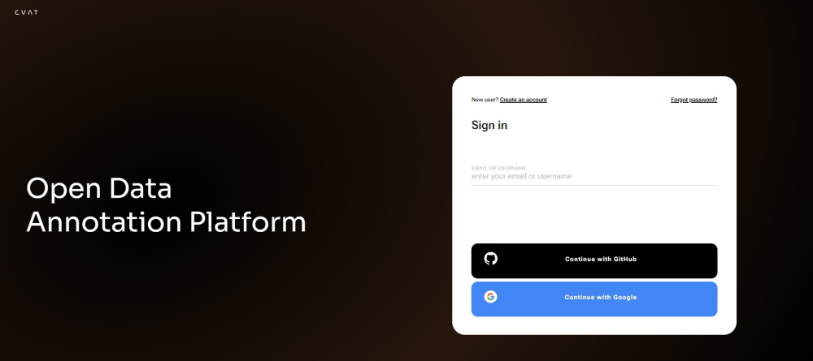
Note: By default authentication and registration with Google and GitHub work only for CVAT.ai Cloud.
If you want to use Google and GitHub authentication on a local installation, see Social auth configuration.
User registration
To register, do the following:
-
Click Create an account.
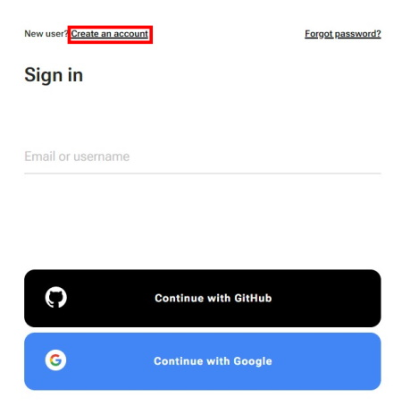
-
Fill in all blank fields, accept terms of use, and click Create an account.
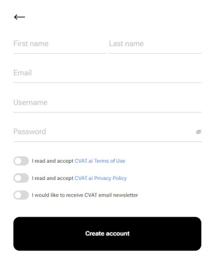
A username generates from the email automatically. You can edit it if needed.
User registration with social accounts
To register with Google or GitHub, click the button with the name of the service, and follow instructions on the screen.
Account access
To access your account, do the following:
- Go to the login page.
- Enter username or email. The password field will appear.
- Enter the password and click Next.
To log in with Google or GitHub, click the button with the name of the service.
Password reset
To reset password, do the following:
-
Go to the CVAT.ai Cloud page and click Forgot password?
-
Enter email you used for registration and click Send.
-
Open email and click on the link from CVAT.
-
Enter new password in both fields and click Change password.
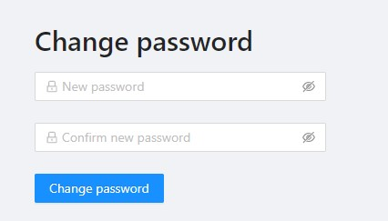
Change password
To change password, do the following:
-
Log in to your CVAT account.
-
In the top right corner, click on the arrow next to your nickname.
-
Select Change password.
-
Follow instructions on the screen.
1.2 - Create annotation task
To start annotating in CVAT, you need to create an annotation task and specify its parameters.
To create a task, on the Tasks page click + and select Create new task.
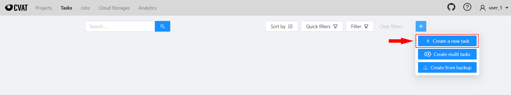
See:
Create a task
To create a new task, open task configurator:
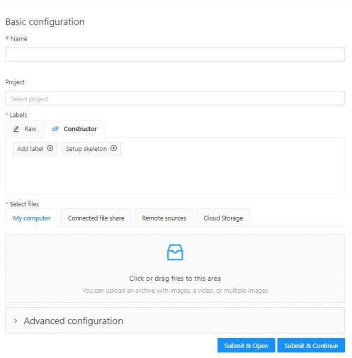
And specify the following parameters:
-
In the Name field, enter the name of the new task.
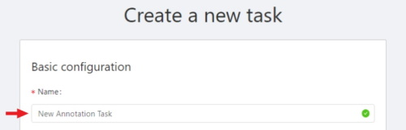
-
(Optional) From the Projects drop-down, select a project for the new task.
Leave this field empty if you do not want to assign the task to any project.Note: Following steps are valid if the task does not belong to a project.
If the task has been assigned to a project, the project’s labels will be applied to the task. -
On the Constructor tab, click Add label.
The label constructor menu will open: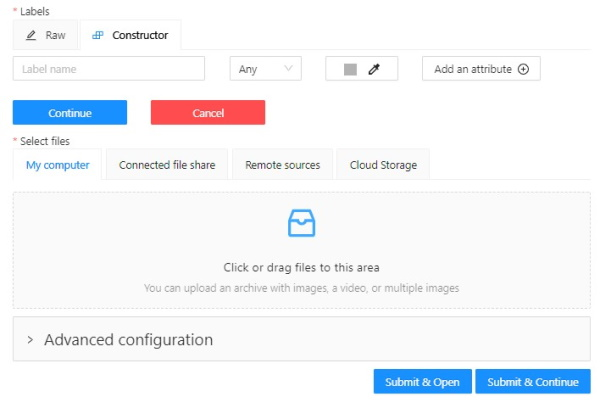
-
In the Label name field, enter the name of the label.
-
(Optional) To limit the use of the label to a certain shape tool, from the Label shape drop-down select the shape.
-
(Optional) Select the color for the label.
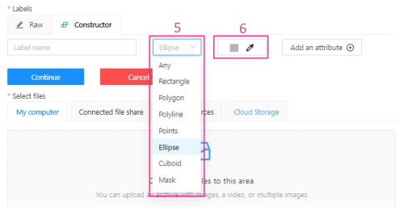
-
(Optional) Click Add an attribute and set up its properties.
-
Click Select files to upload files for annotation.
-
Click Continue to submit the label and start adding a new one
or Cancel to terminate the current label and return you to the labels list. -
Click Submit and open to submit the configuration and open the created task,
or Submit and continue, to submit the configuration and start a new task.
Label shape
Labels (or classes) are categories of objects that you can annotate.
Label shape limits the use of the label to certain shape tool.
Any is the default setting that does not limit the use of the
label to any particular shape tool.
For example, you added:
- Label
sunwith the Label shape typeellipse - Label
carwith the Label shape typeany
As a result:
-
The
sunlabel will be available only for ellipse shape. -
The
carlabel will be available for all shapes.
The tools on the Controls sidebar will be limited to the selected types of shapes.
For example, if you select Any,
all tools will be available,
but if you select Rectangle for all labels,
only the Rectangle tool will be
visible on the sidebar.
Note: You cannot apply the Label shape to the AI and OpenCV tools, these tools will always be available.
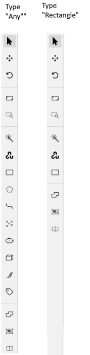
You can change the shape of the label as needed. This change will not affect the existing annotation.
For example, if you created objects using polygons and then changed the label shape to polylines, all previously created objects will remain polygons. However, you will not be able to add new polygon objects with the same label.
Note: You cannot change the shape of the
skeletonlabel.
The Label shape field for theskeletonlabel is disabled.
Add an attribute
Attribute is a property of an annotated object, such as color, model, or other quality.
For example, you have a label for face and want to
specify the type of face. Instead of creating additional
labels for male and female, you can use attributes
to add this information.
There are two types of attributes:
- Immutable attributes are unique and do not change from frame to frame.
For example,
age,gender, andcolor. - Mutable attributes are temporary and can change from frame to frame.
For example,
pose,quality, andtruncated.
Added attributes will be available from the Objects menu:
To add an attribute, do the following:
-
Go to the Constructor tab and click Add attribute.
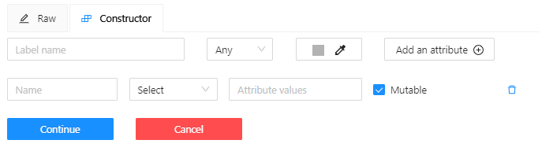
-
In the Name field enter the name of the attribute.
-
From the drop-down, select way to display the attribute in the Objects menu:
-
Selectenables a drop-down list, from which you can select an attribute.
If in the Attribute value field you add__undefined__, the drop-down list will have a blank value.
This is useful for cases where the attribute of the object cannot be clarified: -
Radioenables the selection of one option from several options. -
Checkboxenables the selection of multiple options. -
Textsets the attribute to a text field. -
Numbersets the attribute to numerical field in the following format:min;max;step.
-
-
In the Attribute values field, add attribute values.
To separate values use Enter.
To delete value, use Backspace or click x next to the value name. -
(Optional) For mutable attributes, select Mutable.
-
(Optional) To set the default attribute, hover over it with mouse cursor and click on it. The default attribute will change color to blue.
To delete an attribute, click Delete attribute.
Select files
There are several ways to upload files:
| Data source | Description |
|---|---|
| My computer | Use this option to select files from your laptop or PC. To select file: 1. Click on the Select files field: . 2. Select files to upload. |
| Connected file share | Advanced option. Upload files from a local or cloud shared folder. Note, that you need to mount a fileshare first. For more information, see Share path |
| Remote source | Enter a list of URLs (one per line) in the field. |
| Cloud Storage | Advanced option. To upload files from cloud storage, type the cloud storage name, (optional) choose the manifest file, and select the required files. For more information, see Attach cloud storage. Use the search feature to find a file (by file name) from the connected cloud storage. |
Editing labels in RAW format
The Raw is a way of working with labels for an advanced user.
It is useful when you need to copy labels from one independent task to another.
Note: Be careful with changing the raw specification of an existing task/project. Removing any “id” properties will lead to losing existing annotations. This property will be removed automatically from any text you insert to this field.
Raw presents label data in .json format with an option of editing and copying labels as text. The Done button applies the changes and the Reset button cancels the changes.
Data formats for a 3D task
To create a 3D task, you must prepare an archive with one of the following directory structures.
Note: You can’t mix 2D and 3D data in the same task.
VELODYNE FORMAT
Structure:
velodyne_points/
data/
image_01.bin
IMAGE_00 # unknown dirname,
# generally image_01.png can be under IMAGE_00, IMAGE_01, IMAGE_02, IMAGE_03, etc
data/
image_01.png 3D POINTCLOUD DATA FORMAT
Structure:
pointcloud/
00001.pcd
related_images/
00001_pcd/
image_01.png # or any other image 3D, DEFAULT DATAFORMAT Option 1
Structure:
data/
image.pcd
image.png 3D, DEFAULT DATAFORMAT Option 2
Structure:
data/
image_1/
image_1.pcd
context_1.png # or any other name
context_2.jpgAdvanced configuration
Use advanced configuration to set additional parameters for the task and customize it to meet specific needs or requirements.
The following parameters are available:
| Element | Description |
|---|---|
| Sorting method | Note: Does not work for the video data. Several methods to sort the data. For example, the sequence 2.jpeg, 10.jpeg, 1.jpeg after sorting will be: 1.jpeg, 10.jpeg, 2.jpeg 1.jpeg, 2.jpeg, 10.jpeg 2.jpeg, 10.jpeg, 1.jpeg |
| Use zip/video chunks | Use this parameter to divide your video or image dataset for annotation into short video clips a zip file of frames. Zip files are larger but do not require decoding on the client side, and video clips are smaller but require decoding. It is recommended to turn off this parameter for video tasks to reduce traffic between the client side and the server. |
| Use cache | Select checkbox, to enable on-the-fly data processing to reduce task creation time and store data in a cache with a policy of evicting less popular items. For more information, see Data preparation on the fly. |
| Image Quality | CVAT has two types of data: original quality and compressed. Original quality images are used for dataset export and automatic annotation. Compressed images are used only for annotations to reduce traffic between the server and client side. It is recommended to adjust the compression level only if the images contain small objects that are not visible in the original quality. Values range from 5 (highly compressed images) to 100 (not compressed |
| Overlap Size | Use this parameter to create overlapped segments, making tracking continuous from one segment to another. Note that this functionality only works for bounding boxes. This parameter has the following options: Interpolation task (video sequence). If you annotate with a bounding box on two adjacent segments, they will be merged into a single bounding box. In case the overlap is zero or the bounding box is inaccurate (not enclosing the object properly, misaligned or distorted) on the adjacent segments, it may be difficult to accurately interpole the object’s movement between the segments. As a result, multiple tracks will be created for the same object. Annotation task (independent images). If an object exists on overlapped segments with overlap greater than zero, and the annotation of these segments is done properly, then the segments will be automatically merged into a single object. If the overlap is zero or the annotation is inaccurate (not enclosing the object properly, misaligned, distorted) on the adjacent segments, it may be difficult to accurately track the object. As a result, multiple bounding boxes will be created for the same object. If the annotations on different segments (on overlapped frames) are very different, you will have two shapes for the same object. To avoid this, accurately annotate the object on the first segment and the same object on the second segment to create a track between two annotations. |
| Segment size | Use this parameter to divide a dataset into smaller parts. For example, if you want to share a dataset among multiple annotators, you can split it into smaller sections and assign each section to a separate job. This allows annotators to work on the same dataset concurrently. |
| Start frame | Defines the first frame of the video. |
| Stop frame | Defines the last frame of the video. |
| Frame Step | Use this parameter to filter video frames or images in a dataset. Specify frame step value to include only certain frames or images in the dataset. For example, if the frame step value is 25, the dataset will include every 25th frame or image. If a video has 100 frames, setting the frame step to 25 will include only frames 1, 26, 51, 76, and 100 in the dataset. This can be useful for reducing the size of the dataset, or for focusing on specific frames or images that are of particular interest. |
| Chunk size | Defines amount of frames to be packed in a chunk when send from client to server. The server defines automatically if the chunk is empty. Recommended values: |
| Issue tracker | Use this parameter to specify the issue tracker URL. |
| Source storage | Specify the source storage for importing resources like annotations and backups. If the task was assigned to the project, use the Use project source storage toggle to determine whether to use project values or specify new ones. |
| Target storage | Specify the target storage (local or cloud) for exporting resources like annotations and backups. If the task is created in the project, use the Use project target storage toggle to determine whether to use project values or specify new ones. |
To save and open the task, click Submit & Open .
To create several tasks in sequence, click Submit & Continue.
Created tasks will be displayed on the tasks page.
1.3 - Create multi tasks
Use Create multi tasks to create multiple video annotation tasks with the same configuration.
The Сreate multi tasks feature is available for videos only.
To create the multi tasks, on the Tasks page click + and select Create multi tasks.
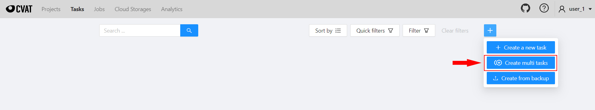
See:
Create multi tasks
To add several tasks in one go, open the task configurator:
And specify the following parameters:
-
In the Name field, enter the name of the new task:
- Enter the name of the task. If the name includes more than one word, use the underscore:
Word1 word2 word3 - (Optional)
{{index}}adds an index to the file in the set (starting from 0). - (Optional)
{{file_name}}adds the file’s name to the task’s name.Note: use hyphen between three parameters:
Word1 word2 word3 {{index}} {{file_name}}
- Enter the name of the task. If the name includes more than one word, use the underscore:
-
(Optional) From the Projects drop-down, select a project for the tasks.
Leave this field empty if you do not want to assign tasks to any project.Note: Following steps are valid if the tasks do not belong to a project.
If the tasks have been assigned to a project, the project’s labels will be applied to the tasks. -
On the Constructor tab, click Add label.
-
In the Label name field, enter the name of the label.
-
(Optional) Select the color for the label.
-
(Optional) Click Add an attribute and set up its properties.
-
Click Select files to upload files for annotation.
Note: You cannot upload multiple tasks from the cloud storage.
-
Click Submit
Ntasks
Example
A step-by-step example for creating the multiple tasks:
-
In the Name field, enter the
Create_multitask-{{index}}-{{file_name}}. -
Add labels.
-
Select files.
In case there are more than four files, only the total number of selected files will be displayed: -
Click Submit
Ntasks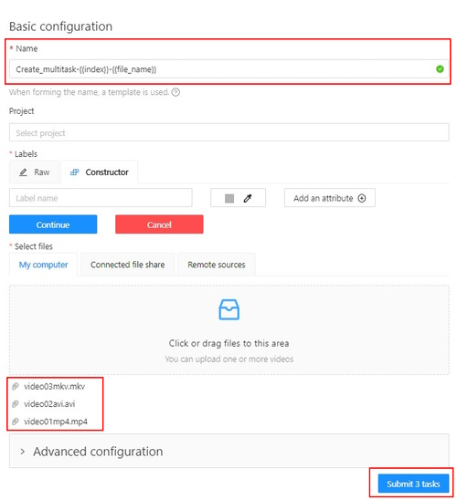
-
You will see a progress bar that shows the progress of the tasks being created:
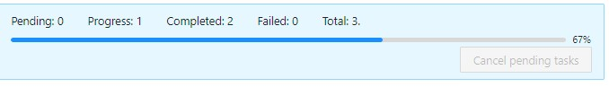
-
Click Ok.
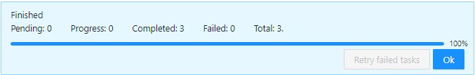
The result will look like the following:
Errors
During the process of adding multiple tasks, the following errors may occur:
| Error | Description |
|---|---|
| 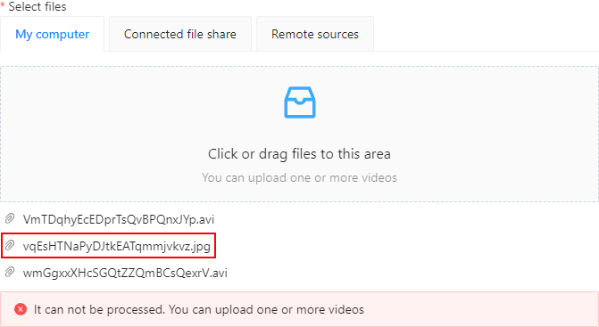 | Wrong file format. You can add only video files. |
| In the process of creating a task, CVAT was not able to process the video file. The name of the failed file will be displayed on the progress bar. To fix this issue: |
Advanced configuration
Use advanced configuration to set additional parameters for the task and customize it to meet specific needs or requirements.
For more information, see Advanced configuration
1.4 - Jobs page
On the jobs page, users (for example, with the worker role) can see the jobs that are assigned to them without having access to the task page, as well as track progress, sort and apply filters to the job list.
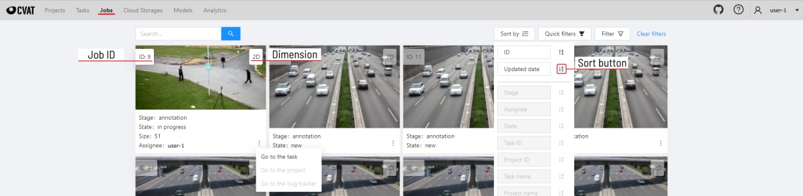
On the job page there is a list of jobs presented in the form of tiles, where each tile is one job. Each element contains:
- job ID
- dimension
2Dor3D - preview
- stage and state
- when hovering over an element, you can see:
- size
- assignee
- menu to navigate to a task, project, or bug tracker.
To open the job in a new tab, click on the job by holding
Ctrl.
In the upper left corner there is a search bar, using which you can find the job by assignee, stage, state, etc. In the upper right corner there are sorting, quick filters and filter.
Filter
Applying filter disables the quick filter.
The filter works similarly to the filters for annotation, you can create rules from properties, operators and values and group rules into groups. For more details, see the filter section. Learn more about date and time selection.
For clear all filters press Clear filters.
Supported properties for jobs list
| Properties | Supported values | Description |
|---|---|---|
State |
all the state names | The state of the job (can be changed in the menu inside the job) |
Stage |
all the stage names | The stage of the job (is specified by a drop-down list on the task page) |
Dimension |
2D or 3D |
Depends on the data format (read more in creating an annotation task) |
Assignee |
username | Assignee is the user who is working on the job. (is specified on task page) |
Last updated |
last modified date and time (or value range) | The date can be entered in the dd.MM.yyyy HH:mm format or by selecting the date in the window that appears when you click on the input field |
ID |
number or range of job ID | |
Task ID |
number or range of task ID | |
Project ID |
number or range of project ID | |
Task name |
task name | Set when creating a task, can be changed on the (task page) |
Project name |
project name | Specified when creating a project, can be changed on the (project section) |
1.5 - Tasks page
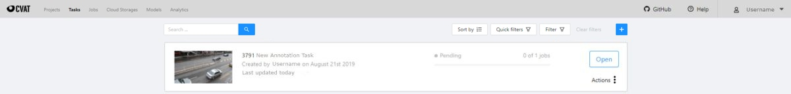
The tasks page contains elements and each of them relates to a separate task. They are sorted in creation order.
Each element contains: task name, preview, progress bar, button Open, and menu Actions.
Each button is responsible for a in menu Actions specific function:
Export task dataset— download annotations or annotations and images in a specific format. More information is available in the export/import datasets section.Upload annotationupload annotations in a specific format. More information is available in the export/import datasets section.Automatic Annotation— automatic annotation with OpenVINO toolkit. Presence depends on how you build the CVAT instance.Backup task— make a backup of this task into a zip archive. Read more in the backup section.Move to project— Moving a task to a project (you can move only a task which does not belong to any project). In case of label mismatch, you can create or delete necessary labels in the project/task. Some task labels can be matched with the target project labels.Delete— delete task.
In the upper left corner there is a search bar, using which you can find the task by assignee, task name etc. In the upper right corner there are sorting, quick filters and filter.
Filter
Applying filter disables the quick filter.
The filter works similarly to the filters for annotation, you can create rules from properties, operators and values and group rules into groups. For more details, see the filter section. Learn more about date and time selection.
For clear all filters press Clear filters.
Supported properties for tasks list
| Properties | Supported values | Description |
|---|---|---|
Dimension |
2D or 3D |
Depends on the data format (read more in creating an annotation task) |
Status |
annotation, validation or completed |
|
Data |
video, images |
Depends on the data format (read more in creating an annotation task) |
Subset |
test, train, validation or custom subset |
[read more] [subset] |
Assignee |
username | Assignee is the user who is working on the project, task or job. (is specified on task page) |
Owner |
username | The user who owns the project, task, or job |
Last updated |
last modified date and time (or value range) | The date can be entered in the dd.MM.yyyy HH:mm format or by selecting the date in the window that appears when you click on the input field |
ID |
number or range of job ID | |
Project ID |
number or range of project ID | |
Name |
name | On the tasks page - name of the task, on the project page - name of the project |
Project name |
project name | Specified when creating a project, can be changed on the (project section) |
Push Open button to go to task details.
1.6 - Task details
Task details is a task page which contains a preview, a progress bar and the details of the task (specified when the task was created) and the jobs section.
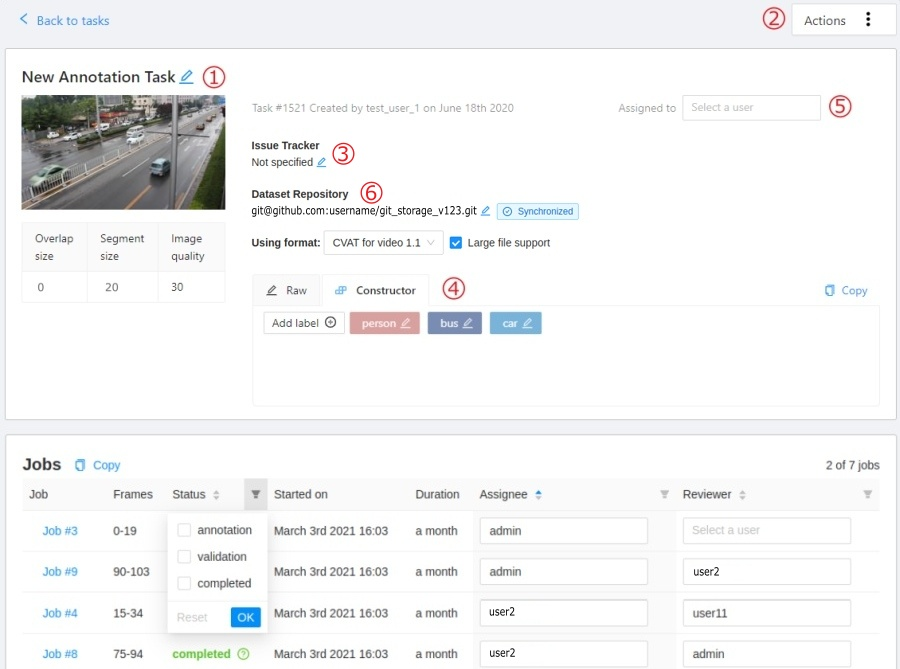
-
The next actions are available on this page:
- Change the task’s title.
- Open
Actionsmenu. - Change issue tracker or open issue tracker if it is specified.
- Change labels (available only if the task is not related to the project).
You can add new labels or add attributes for the existing labels in the Raw mode or the Constructor mode.
By clicking
Copyyou will copy the labels to the clipboard. - Assigned to — is used to assign a task to a person. Start typing an assignee’s name and/or choose the right person out of the dropdown list. In the list of users, you will only see the users of the organization where the task is created.
-
Jobs — is a list of all jobs for a particular task. Here you can find the next data:
- Jobs name with a hyperlink to it.
- Frames — the frame interval.
- A stage of the job. The stage is specified by a drop-down list.
There are three stages:
annotation,validationoracceptance. This value affects the task progress bar. - A state of the job. The state can be changed by an assigned user in the menu inside the job.
There are several possible states:
new,in progress,rejected,completed. - Started on — start date of this job.
- Duration — is the amount of time the job is being worked.
- Assignee is the user who is working on the job. You can start typing an assignee’s name and/or choose the right person out of the dropdown list.
- Reviewer – a user assigned to carry out the review, read more in the review section.
Copy. By clickingCopyyou will copy the job list to the clipboard. The job list contains direct links to jobs.
You can filter or sort jobs by status, as well as by assigner or reviewer.
Follow a link inside Jobs section to start annotation process.
In some cases, you can have several links. It depends on size of your
task and Overlap Size and Segment Size parameters. To improve
UX, only the first chunk of several frames will be loaded and you will be able
to annotate first images. Other frames will be loaded in background.
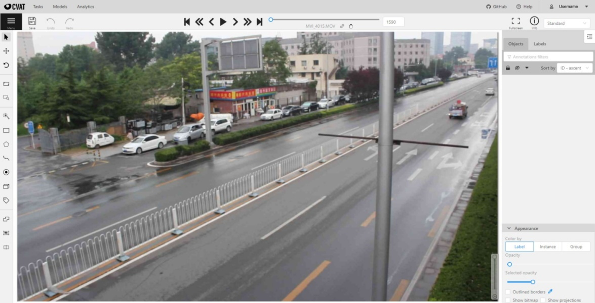
1.7 - Interface of the annotation tool
Main user interface
The tool consists of:
-
Header- pinned header used to navigate CVAT sections and account settings; -
Top panel— contains navigation buttons, main functions and menu access; -
Workspace— space where images are shown; -
Controls sidebar— contains tools for navigating the image, zoom, creating shapes and editing tracks (merge, split, group); -
Objects sidebar— contains label filter, two lists: objects (on the frame) and labels (of objects on the frame) and appearance settings.
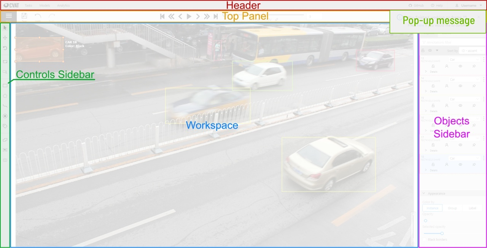
Pop-up messages
In CVAT, you’ll receive pop-up messages in the upper-right corner, on any page. Pop-up messages can contain useful information, links, or error messages.
Information message
Informational messages inform about the end of the auto-annotation process. Learn more about auto-annotation.
Jump Suggestion Messages
Open a task
After creating a task, you can immediately open it by clicking Open task.
Learn more about creating a task.
Continue to the frame on which the work on the job is finished
When you open a job that you previously worked on, you will receive pop-up messages with a proposal to go to the frame that was visited before closing the tab.
Error Messages
If you perform impossible actions, you may receive an error message.
The message may contain information about the error
or a prompt to open the browser console (shortcut F12) for information.
If you encounter a bug that you can’t solve yourself,
you can create an issue on GitHub.
1.8 - Basic navigation
-
Use arrows below to move to the next/previous frame. Use the scroll bar slider to scroll through frames. Almost every button has a shortcut. To get a hint about a shortcut, just move your mouse pointer over an UI element.

-
To navigate the image, use the button on the controls sidebar. Another way an image can be moved/shifted is by holding the left mouse button inside an area without annotated objects. If the
Mouse Wheelis pressed, then all annotated objects are ignored. Otherwise the a highlighted bounding box will be moved instead of the image itself.
-
You can use the button on the sidebar controls to zoom on a region of interest. Use the button
Fit the imageto fit the image in the workspace. You can also use the mouse wheel to scale the image (the image will be zoomed relatively to your current cursor position).
1.9 - Top Panel
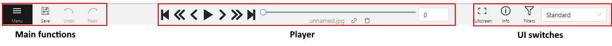
Menu button
It is the main menu of the annotation tool. It can be used to download, upload and remove annotations.
Button assignment:
-
Upload Annotations — uploads annotations into a task.
-
Export as a dataset — download a data set from a task in one of the supported formats. You can also enter a Custom name and enable the Save images checkbox if you want the dataset to contain images.
-
Remove Annotations — calls the confirmation window if you click Delete, the annotation of the current job will be removed, if you click Select range you can remove annotation on range frames, if you activate checkbox Delete only keyframe for tracks then only keyframes will be deleted from the tracks, on the selected range.
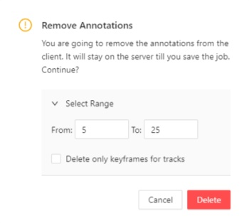
-
Run actions - opens annotations actions modal (annotations action is a feature that allow you to modify a bulk of annotations on many frames, e.g. Shapes converter). It supports only
shapeobjects. -
Open the task — opens a page with details about the task.
-
Change job state - changes the state of the job (
new,in progress,rejected,completed). -
Finish the job/Renew the job - changes the job stage and state to
acceptanceandcompleted/annotationandnewcorrespondingly.
Save Work
Saves annotations for the current job. The button has an indication of the saving process.

Undo-redo buttons
Use buttons to undo actions or redo them.

Done

Used to complete the creation of the object. This button appears only when the object is being created.
Block

Used to pause automatic line creation when drawing a polygon with OpenCV Intelligent scissors. Also used to postpone server requests when creating an object using AI Tools. When blocking is activated, the button turns blue.
Player
Go to the first /the latest frames.

Go to the next/previous frame with a predefined step. Shortcuts:
V — step backward, C — step forward. By default the step is 10 frames
(change at Account Menu —> Settings —> Player Step).

The button to go to the next / previous frame has the customization possibility. To customize, right-click on the button and select one of three options:
- The default option - go to the next / previous frame (the step is 1 frame).
- Go to the next / previous frame that has any objects (in particular filtered). Read the filter section to know the details how to use it.
- Go to the next / previous frame without annotation at all. Use this option in cases when you need to find missed frames quickly.
Shortcuts: D - previous, F - next.
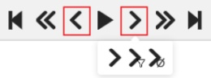
Play the sequence of frames or the set of images. Shortcut: Space (change at Account Menu —> Settings —> Player Speed).

Go to a specific frame. Press ~ to focus on the element.

To delete frame.
Shortcut: Alt+Del
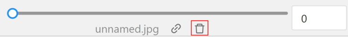
Fullscreen Player
The fullscreen player mode. The keyboard shortcut is F11.

Info
Open the job info.
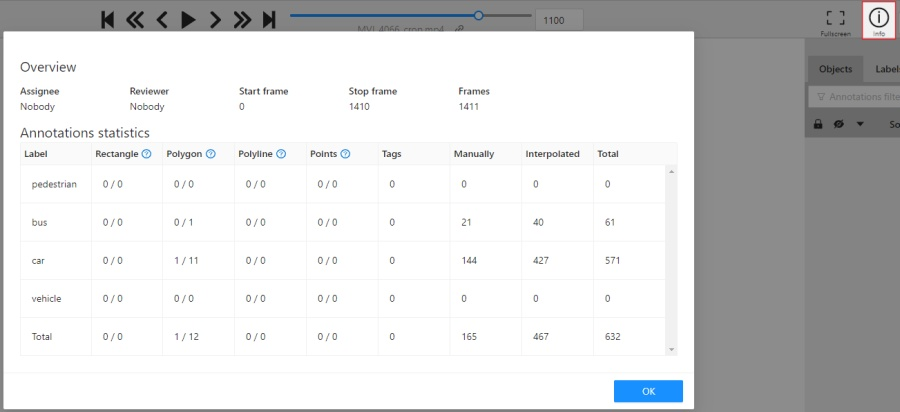
Overview:
Assignee- the one to whom the job is assigned.Reviewer– a user assigned to carry out the review, read more in the review section.Start Frame- the number of the first frame in this job.End Frame- the number of the last frame in this job.Frames- the total number of all frames in the job.
Annotations statistics:
This is a table number of created shapes, sorted by labels (e.g. vehicle, person) and type of annotation (shape, track). As well as the number of manual and interpolated frames.
UI switcher
Switching between user interface modes.

1.10 - Controls sidebar
Navigation
Navigation block - contains tools for moving and rotating images.
| Icon | Description |
|---|---|
 |
Cursor (Esc)- a basic annotation pedacting tool. |
 |
Move the image- a tool for moving around the image withoutthe possibility of editing. |
 |
Rotate- two buttons to rotate the current framea clockwise ( Ctrl+R) and anticlockwise (Ctrl+Shift+R).You can enable Rotate all images in the settings to rotate all the images in the job |
Zoom
Zoom block - contains tools for image zoom.
| Icon | Description |
|---|---|
Fit image- fits image into the workspace size.Shortcut - double click on an image |
|
 |
Select a region of interest- zooms in on a selected region.You can use this tool to quickly zoom in on a specific part of the frame. |
Shapes
Shapes block - contains all the tools for creating shapes.
| Icon | Description | Links to section |
|---|---|---|
AI Tools |
AI Tools | |
OpenCV |
OpenCV | |
 |
Rectangle |
Shape mode; Track mode; Drawing by 4 points |
 |
Polygon |
Annotation with polygons; Track mode with polygons |
 |
Polyline |
Annotation with polylines |
 |
Points |
Annotation with points |
 |
Ellipses |
Annotation with ellipses |
| 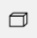 | Cuboid |
Annotation with cuboids |
| 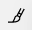 | Brushing tools |
Annotation with brushing |
 |
Tag |
Annotation with tags |
 |
Open an issue |
Review (available only in review mode) |
Edit
Edit block - contains tools for editing tracks and shapes.
| Icon | Description | Links to section |
|---|---|---|
 |
Merge Shapes(M) - starts/stops the merging shapes mode. |
Track mode (basics) |
 |
Group Shapes (G) - starts/stops the grouping shapes mode. |
Shape grouping |
Split - splits a track. |
Track mode (advanced) | |
Split - splits a track. |
Track mode (advanced) | |
| Joins multiple labels into one | Joining mask tool | |
| Slices one label into several. | Slice mask/polygon |
1.11 - Objects sidebar
In the objects sidebar, you can see the list of available objects on the current frame. The following figure is an example of how the list might look like:
| Shape mode | Track mode |
|---|---|
 |
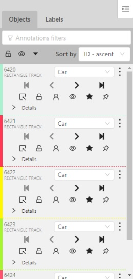 |
Objects properties
Filter input box

The way how to use filters is described in the advanced guide here.
List of objects

- Switch lock property for all - switches lock property of all objects in the frame.
- Switch hidden property for all - switches hide the property of all objects in the frame.
- Expand/collapse all - collapses/expands the details field of all objects in the frame.
- Sorting - sort the list of objects: updated time, ID - accent, ID - descent
Objects on the sidebar
The type of shape can be changed by selecting the Label property. For instance, it can look like shown in the figure below:

Object action menu
The action menu calls up the button:
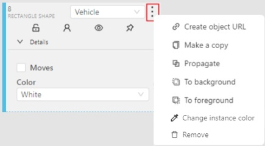
The action menu contains:
-
Create object URL - puts a link to an object on the clipboard. After you open the link, this object will be filtered.
-
Make a copy - copies an object. The keyboard shortcut is Ctrl + C > Ctrl + V.
-
Propagate function copies the form to multiple frames and displays a dialog box where you can specify the number of copies or the frame to which you want to copy the object. The keyboard shortcut is Ctrl + B.
There are two options available:- Propagate forward (
 ) creates a
copy of the object on
) creates a
copy of the object on Nsubsequent frames at the same position. - Propagate backward () creates
a copy of the object on
Nprevious frames at the same position.

- Propagate forward (
-
To background - moves the object to the background. The keyboard shortcut - or _
-
To foreground - moves the object to the foreground. The keyboard shortcut + or =
-
Change instance color- choosing a color using the color picker (available only in instance mode).
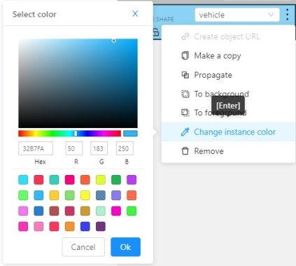
-
Remove - removes the object. The keyboard shortcut Del, Shift+Del.
A shape can be locked to prevent its modification or moving by an accident. Shortcut to lock an object: L.

A shape can be Occluded. Shortcut: Q. Such shapes have dashed boundaries.


You can change the way an object is displayed on a frame (show or hide).

Switch pinned property - when enabled, a shape cannot be moved by dragging or dropping.

**Tracker switcher **- enable/disable tracking for the object.
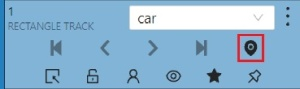
By clicking on the Details button you can collapse or expand the field with all the attributes of the object.

Labels
In this tab, you can lock or hide objects of a certain label. To change the color for a specific label, you need to go to the task page and select the color by clicking the edit button, this way you will change the label color for all jobs in the task.

Fast label change
You can change the label of an object using hotkeys. In order to do it, you need to assign a number (from 0 to 9) to labels. By default numbers 1,2…0 are assigned to the first ten labels. To assign a number, click on the button placed at the right of a label name on the sidebar.
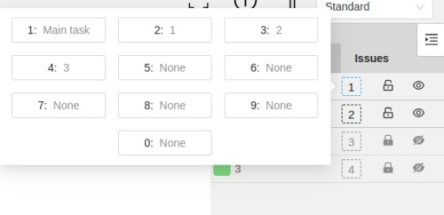
After that, you will be able to assign a corresponding label to an object by hovering your mouse cursor over it and pressing Ctrl + Num(0..9).
In case you do not point the cursor to the object, pressing Ctrl + Num(0..9) will set a chosen label as default,
so that the next object you create (use the N key) will automatically have this label assigned.

Appearance
Color By options
Change the color scheme of the annotation:
-
Instance— every shape has a random color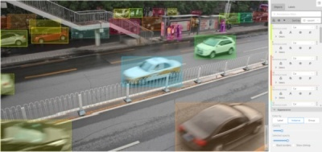
-
Group— every group of shape has its own random color, ungrouped shapes are white
-
Label— every label (e.g. car, person) has its own random color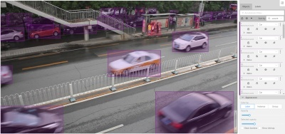
You can change any random color pointing to a needed box on a frame or on an object sidebar.
Fill Opacity slider
Change the opacity of every shape in the annotation.
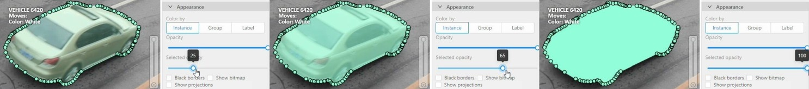
Selected Fill Opacity slider
Change the opacity of the selected object’s fill. It is possible to change the opacity while drawing an object in the case of rectangles, polygons, and cuboids.

Outlines borders checkbox
You can change a special shape border color by clicking on the Eyedropper icon.
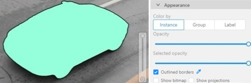
Show bitmap checkbox
If enabled all shapes are displayed in white and the background is black.

Show projections checkbox
Enables/disables the display of auxiliary perspective lines. Only relevant for cuboids

Hide objects sidebar
Hide - the button hides the object’s sidebar.

1.12 - CVAT Workspace
In CVAT the workspace serves as the central hub where annotators interact with images, videos, and the various tools available to create high-quality annotations.
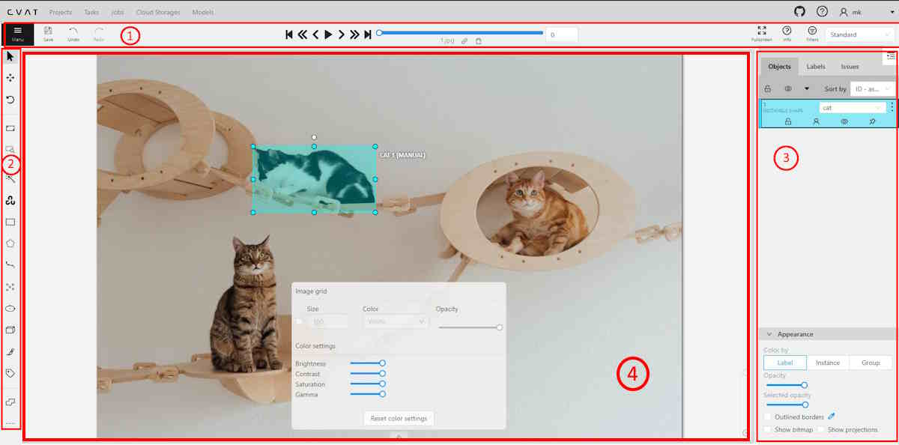
The workspace includes the following elements:
| Element | Description |
|---|---|
| 1 | Top Panel and basic navigation. |
| 2 | Controls sidebar |
| 3 | Objects sidebar |
| 4 | Image annotation area, described in this article. |
See:
Image settings in CVAT
The Image settings panel serves as a versatile tool for fine-tuning the visual aspects of your image. Whether you need to brighten the image, increase contrast, or make other adjustments, this panel is your go-to.
Additionally, the panel allows you to overlay a grid on the image for more precise annotation.
Note: Adjusting the image settings only alters how the pictures are displayed. The images themselves will remain unmodified and unchanged.
By default, the Image settings panel is not visible. To access
it, click on the Arrow Up ( )
icon located at the bottom of the workspace.
)
icon located at the bottom of the workspace.
Adding grid overlay to image in CVAT
To add the grid to the image, do the following:
- Open the Image Settings panel.
- Locate and check the box that allows you to overlay a grid on the image.
- Specify the grid cell size in square millimeters by entering the desired number in the Size field.
- From the Color drop-down list, select the color of the grid.
- Use the Opacity slider to change the transparency of the grid overlay.
Changing color settings of image in CVAT
To change the color setting of the image is CVAT, do the following:
- Open the Image Settings panel.
- Use the slider to change the color quality.
There are four color quality settings in CVAT:
Brightness increases and decreases the overall lightness of the image:

Contrast is the range of brightness, from lightest to darkest, in an image.

Saturation describes the intensity of the color.

Gamma correction can be used to control the overall brightness of an image

To reset the setting to default values, click Reset color settings
Adding layers and Z-axis slider
Z-axis Slider enables you to add annotation layers while hiding the layers positioned beyond.
You can also move between layers by moving the slider to the layer you need.
The slider becomes active when multiple Z-layers are present within a frame. Click + on the slider to add a new layer; upon pressing it, a new layer is automatically created and activated.
You can also relocate objects between layers using the + and - keys.

Interacting with Objects
The workspace is also equipped with the following features:
-
Right-clicking an object opens the Object Card. This interface contains essential controls for modifying the object’s label and attributes, as well as providing access to an action menu.
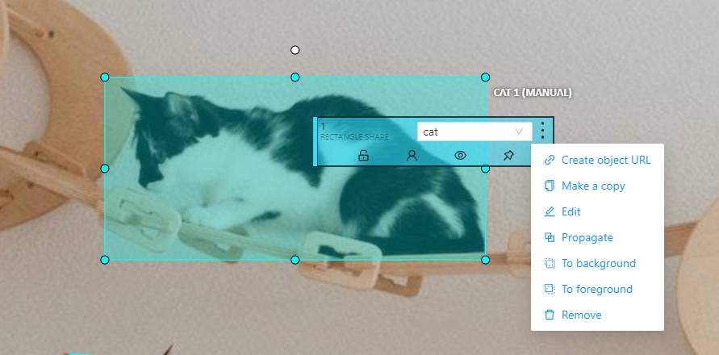
-
Right-clicking on a polygon point will open a menu, from which you can Delete point or Set start point.

1.13 - 3D task workspace

If the related_images folder contains any images, a context image will be available in the perspective window.
The contextual image could be compared to 3D data and would help to identify the labels of marked objects.
Perspective – a main window for work with objects in a 3D task.
Projections - projections are tied to an object so that a cuboid is in the center and looks like a rectangle. Projections show only the selected object.
Top– a projection of the view from above.Side– a projection of the left side of the object.Front- a frontal projection of the object.
1.14 - Standard 3D mode (basics)
Standard 3d mode - Designed to work with 3D data.
The mode is automatically available if you add PCD or Kitty BIN format data when you create a task.
read more
You can adjust the size of the projections, to do so, simply drag the boundary between the projections.
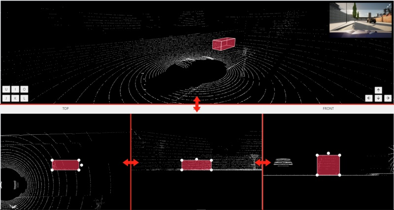
1.15 - Settings
To open the settings open the user menu in the header and select the settings item or press F2.
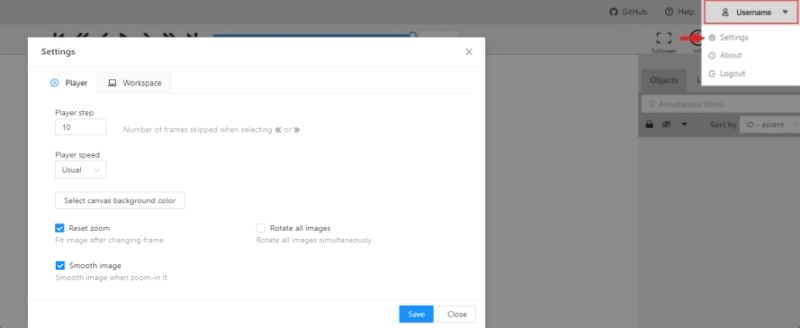
Settings have two tabs:
In tab Player you can:
- Control step of
CandVshortcuts. - Control speed of
Space/Playbutton. - Select canvas background color. You can choose a background color or enter manually (in RGB or HEX format).
Reset zoomShow every image in full size or zoomed out like previous (it is enabled by default for interpolation mode and disabled for annotation mode).Rotate all imagescheckbox — switch the rotation of all frames or an individual frame.Smooth imagecheckbox — smooth image when zoom-in it.smoothed pixelized
In tab Workspace you can:
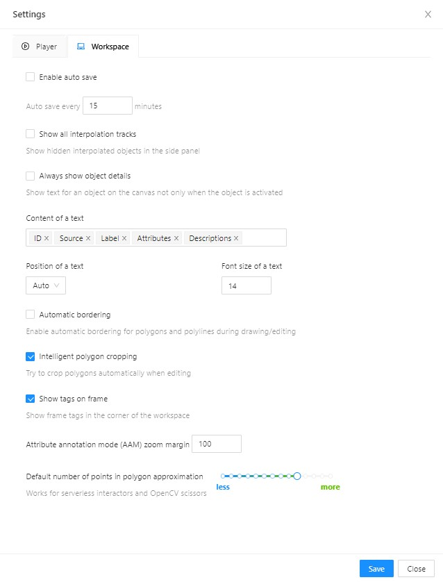
-
Enable auto savecheckbox — turned off by default. -
Auto save interval (min)input box — 15 minutes by default. -
Show all interpolation trackscheckbox — shows hidden objects on the side panel for every interpolated object (turned off by default). -
Always show object details- show text for an object on the canvas not only when the object is activated:
-
Content of a text- setup of the composition of the object details:ID- object identifier.Attributes- attributes of the object.Label- object label.Source- source of creating of objectsMANUAL,AUTOorSEMI-AUTO.Descriptions- description of attributes.
-
Position of a text- text positioning mode selection:Auto- the object details will be automatically placed where free space is.Center- the object details will be embedded to a corresponding object if possible.
-
Font size of a text- specifies the text size of the object details. -
Automatic bordering- enable automatic bordering for polygons and polylines during drawing/editing. For more information To find out more, go to the section annotation with polygons. -
Intelligent polygon cropping- activates intelligent cropping when editing the polygon (read more in the section edit polygon -
Show tags on frame- shows/hides frame tags on current frame -
Attribute annotation mode (AAM) zoom margininput box — defines margins (in px) for shape in the attribute annotation mode. -
Control points size— defines a size of any interactable points in the tool (polygon’s vertices, rectangle dragging points, etc.) -
Default number of points in polygon approximationWith this setting, you can choose the default number of points in polygon. Works for serverless interactors and OpenCV scissors. -
Click
Saveto save settings (settings will be saved on the server and will not change after the page is refreshed). ClickCancelor pressF2to return to the annotation.
1.16 - Types of shapes
There are several shapes with which you can annotate your images:
RectangleorBounding boxPolygonPolylinePointsEllipseCuboidCuboid in 3d taskSkeletonTag
And there is how they all look like:


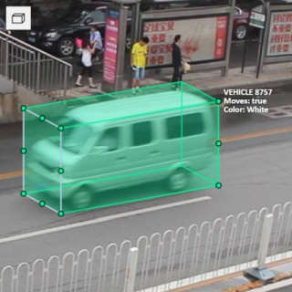
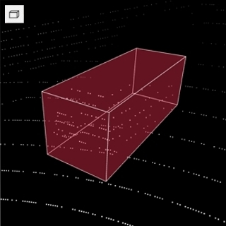 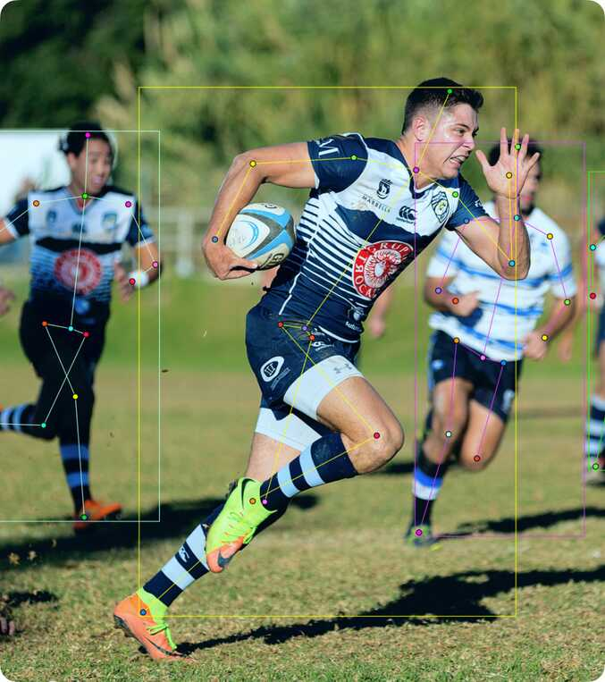

Tag - has no shape in the workspace, but is displayed in objects sidebar.
1.17 - Shape mode (basics)
Usage examples:
- Create new annotations for a set of images.
- Add/modify/delete objects for existing annotations.
-
You need to select
Rectangleon the controls sidebar:
Before you start, select the correct
Label(should be specified by you when creating the task) andDrawing Method(by 2 points or by 4 points):
-
Creating a new annotation in
Shape mode:-
Create a separate
Rectangleby clicking onShape.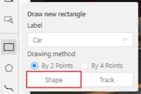
-
Choose the opposite points. Your first rectangle is ready!

-
To learn more about creating a rectangle read here.
-
It is possible to adjust boundaries and location of the rectangle using a mouse. Rectangle’s size is shown in the top right corner , you can check it by clicking on any point of the shape. You can also undo your actions using
Ctrl+Zand redo them withShift+Ctrl+ZorCtrl+Y.
-
-
You can see the
Object cardin the objects sidebar or open it by right-clicking on the object. You can change the attributes in the details section. You can perform basic operations or delete an object by clicking on the action menu button.
-
The following figure is an example of a fully annotated frame with separate shapes.
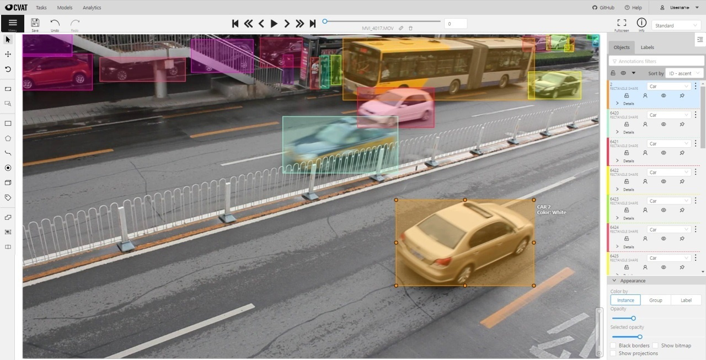
Read more in the section shape mode (advanced).
1.18 - Track mode (basics)
Usage examples:
- Create new annotations for a sequence of frames.
- Add/modify/delete objects for existing annotations.
- Edit tracks, merge several rectangles into one track.
-
Like in the
Shape mode, you need to select aRectangleon the sidebar, in the appearing form, select the desiredLabeland theDrawing method.
-
Creating a track for an object (look at the selected car as an example):
-
Create a
RectangleinTrack modeby clicking onTrack.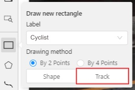
-
In
Track modethe rectangle will be automatically interpolated on the next frames. -
The cyclist starts moving on frame #2270. Let’s mark the frame as a key frame. You can press
Kfor that or click thestarbutton (see the screenshot below).
-
If the object starts to change its position, you need to modify the rectangle where it happens. It isn’t necessary to change the rectangle on each frame, simply update several keyframes and the frames between them will be interpolated automatically.
-
Let’s jump 30 frames forward and adjust the boundaries of the object. See an example below:

-
After that the rectangle of the object will be changed automatically on frames 2270 to 2300:
-
-
When the annotated object disappears or becomes too small, you need to finish the track. You have to choose
Outside Property, shortcutO.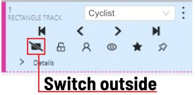
-
If the object isn’t visible on a couple of frames and then appears again, you can use the
Mergefeature to merge several individual tracks into one.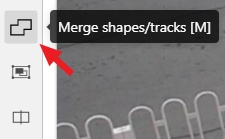
-
Create tracks for moments when the cyclist is visible:

-
Click
Mergebutton or press keyMand click on any rectangle of the first track and on any rectangle of the second track and so on: -
Click
Mergebutton or pressMto apply changes. -
The final annotated sequence of frames in
Interpolationmode can look like the clip below:
Read more in the section track mode (advanced).
-
1.19 - 3D Object annotation
Use the 3D Annotation tool for labeling 3D objects and scenes, such as vehicles, buildings, landscapes, and others.
See:
Navigation
The 3D annotation canvas looks like the following
Note: if you added contextual images to the dataset, the canvas will include them. For more information, see Contextual images
For information on the available tools, see Controls sidebar.
You can navigate, using the mouse, or navigation keys:

You can also use keyboard shortcuts to navigate:
| Action | Keys |
|---|---|
| Camera rotation | Shift + Arrow (Up, Down, Left, Right) |
| Left/Right | Alt+J/ Alt+L |
| Up/down | Alt+U/ Alt+O |
| Zoom in/ou | Alt+K/ Alt+I |
Annotation with cuboids
There are two options available for 3D annotation:
- Shape: for tasks like object detection.
- Track: uses interpolation to predict the position of objects in subsequent frames. A unique ID will be assigned to each object and maintained throughout the sequence of images.
Annotation with shapes
To add a 3D shape, do the following:
- On the objects pane, select Draw new cuboid > select the label from the drop-down list > Shape.
- The cursor will be followed by a cuboid. Place the cuboid on the 3D scene.
- Use projections to adjust the cuboid. Click and hold the left mouse button to edit the label shape on the projection.
- (Optional) Move one of the four points to change the size of the cuboid.
-
(Optional) To rotate the cuboid, click on the middle point and then drag the cuboid up/down or to left/right.
Tracking with cuboids
To track with cuboids, do the following:
-
On the objects pane, select Draw new cuboid > select the label from the drop-down list > Track.
-
The cursor will be followed by a cuboid. Place the cuboid on the 3D scene.
-
Use projections to adjust the cuboid. Click and hold the left mouse button to edit the label shape on the projection.
- (Optional) Move one of the four points to change the size of the cuboid.
- (Optional) To rotate the cuboid, click on the middle point and then drag the cuboid up/down or to left/right.
-
Move several frames forward. You will see the cuboid you’ve added in frame 1. Adjust it, if needed.
-
Repeat to the last frame with the presence of the object you are tracking.
For more information about tracking, see Track mode
1.20 - Attribute annotation mode (basics)
-
In this mode you can edit attributes with fast navigation between objects and frames using a keyboard. Open the drop-down list in the top panel and select Attribute annotation Mode.
-
In this mode objects panel change to a special panel :
-
The active attribute will be red. In this case it is
gender. Look at the bottom side panel to see all possible shortcuts for changing the attribute. Press key2on your keyboard to assign a value (female) for the attribute or select from the drop-down list.
-
Press
Up Arrow/Down Arrowon your keyboard or click the buttons in the UI to go to the next/previous attribute. In this case, after pressingDown Arrowyou will be able to edit theAgeattribute. -
Use
Right Arrow/Left Arrowkeys to move to the previous/next image with annotation.
To see all the hot keys available in the attribute annotation mode, press F2.
Read more in the section attribute annotation mode (advanced).
1.21 - Vocabulary
Label
Label is a type of an annotated object (e.g. person, car, vehicle, etc.)

Attribute
Attribute is a property of an annotated object (e.g. color, model, quality, etc.). There are two types of attributes:
Unique
Unique immutable and can’t be changed from frame to frame (e.g. age, gender, color, etc.)
Temporary
Temporary mutable and can be changed on any frame (e.g. quality, pose, truncated, etc.)

Track
Track is a set of shapes on different frames which corresponds to one object.
Tracks are created in Track mode
Annotation
Annotation is a set of shapes and tracks. There are several types of annotations:
- Manual which is created by a person
- Semi-automatic which is created mainly automatically, but the user provides some data (e.g. interpolation)
- Automatic which is created automatically without a person in the loop
Approximation
Approximation allows you to reduce the number of points in the polygon. Can be used to reduce the annotation file and to facilitate editing polygons.
Trackable
Trackable object will be tracked automatically if the previous frame was a latest keyframe for the object. More details in the section trackers.
Mode
Interpolation
Mode for video annotation, which uses track objects.
Only objects on keyframes are manually annotation, and intermediate frames are linearly interpolated.
Related sections:
Annotation
Mode for images annotation, which uses shape objects.
Related sections:
Dimension
Depends on the task data type that is defined when the task is created.
2D
The data format of 2d tasks are images and videos. Related sections:
3D
The data format of 3d tasks is a cloud of points. Data formats for a 3D task
Related sections:
State
State of the job. The state can be changed by an assigned user in the menu inside the job.
There are several possible states: new, in progress, rejected, completed.
Stage
Stage of the job. The stage is specified with the drop-down list on the task page.
There are three stages: annotation, validation or acceptance. This value affects the task progress bar.
Subset
A project can have subsets. Subsets are groups for tasks that make it easier to work with the dataset.
It could be test, train, validation or custom subset.
Credentials
Under credentials is understood Key & secret key, Account name and token, Anonymous access, Key file.
Used to attach cloud storage.
Resource
Under resource is understood bucket name or container name.
Used to attach cloud storage.
1.22 - Cloud storages page
The cloud storages page contains elements, each of them relating to a separate cloud storage.
Each element contains: preview, cloud storage name, provider, creation and update info, status,
? button for displaying the description and the actions menu.
Each button in the action menu is responsible for a specific function:
Update— update this cloud storageDelete— delete cloud storage.
This preview will appear when it is impossible to get a real preview (e.g. storage is empty or invalid credentials were used).
In the upper left corner there is a search bar, using which you can find the cloud storage by display name, provider, etc. In the upper right corner there are sorting, quick filters and filter.
Filter
Applying filter disables the quick filter.
The filter works similarly to the filters for annotation, you can create rules from properties, operators and values and group rules into groups. For more details, see the filter section. Learn more about date and time selection.
For clear all filters press Clear filters.
Supported properties for cloud storages list
| Properties | Supported values | Description |
|---|---|---|
ID |
number or range of task ID | |
Provider type |
AWS S3, Azure, Google cloud |
|
Credentials type |
Key & secret key, Account name and token,Anonymous access, Key file |
|
Resource name |
Bucket name or container name |
|
Display name |
Set when creating cloud storage | |
Description |
Description of the cloud storage | |
Owner |
username | The user who owns the project, task, or job |
Last updated |
last modified date and time (or value range) | The date can be entered in the dd.MM.yyyy HH:mm format or by selecting the date in the window that appears when you click on the input field |
Click the + button to attach a new cloud storage.
1.23 - Attach cloud storage
In CVAT you can use AWS S3, Azure Blob Storage and Google Cloud Storage storages to import and export image datasets for your tasks.
See:
AWS S3
Create a bucket
To create bucket, do the following:
-
Create an AWS account.
-
Go to console AWS-S3, and click Create bucket.
-
Specify the name and region of the bucket. You can also copy the settings of another bucket by clicking on the Choose bucket button.
-
Enable Block all public access. For access, you will use access key ID and secret access key.
-
Click Create bucket.
A new bucket will appear on the list of buckets.
Upload data
Note: manifest file is optional.
You need to upload data for annotation and the manifest.jsonl file.
-
Prepare data. For more information, see prepare the dataset.
-
Open the bucket and click Upload.

-
Drag the manifest file and image folder on the page and click Upload:

Access permissions
Authorized access
To add access permissions, do the following:
-
Go to IAM and click Add users.
-
Set User name and enable Access key - programmatic access.
-
Click Next: Permissions.
-
Click Create group, enter the group name.
-
Use search to find and select:
- For read-only access: AmazonS3ReadOnlyAccess.
- For full access: AmazonS3FullAccess.
-
(Optional) Add tags for the user and go to the next page.
-
Save Access key ID and Secret access key.

For more information, see Creating an IAM user in your AWS account
Anonymous access
On how to grant public access to the bucket, see Configuring block public access settings for your S3 buckets
Attach AWS S3 storage
To attach storage, do the following:
- Log into CVAT and in the separate tab open your bucket page.
- In the CVAT, on the top menu select Cloud storages > on the opened page click +.
Fill in the following fields:
| CVAT | AWS S3 |
|---|---|
| Display name | Preferred display name for your storage. |
| Description | (Optional) Add description of storage. |
| Provider | From drop-down list select AWS S3. |
| Bucket name | Name of the Bucket. |
| Authorization type | Depends on the bucket setup: |
| Region | (Optional) Choose a region from the list or add a new one. For more information, see Available locations. |
| Prefix | (Optional) Prefix is used to filter bucket content. By setting a default prefix, you ensure that only data from a specific folder in the cloud is used in CVAT. This will affect which files you see when creating a task with cloud data. |
| Manifests | (Optional) Click + Add manifest and enter the name of the manifest file with an extension. For example: manifest.jsonl. |
After filling in all the fields, click Submit.
AWS S3 manifest file
Note: manifest file is optional.
To prepare the manifest file, do the following:
- Go to AWS CLI and run script for prepare manifest file.
- Perform the installation, following the aws-shell manual,
You can configure credentials by runningaws configure.
You will need to enterAccess Key IDandSecret Access Keyas well as the region.
aws configure
Access Key ID: <your Access Key ID>
Secret Access Key: <your Secret Access Key>
- Copy the content of the bucket to a folder on your computer:
aws s3 cp <s3://bucket-name> <yourfolder> --recursive
- After copying the files, you can create a manifest file as described in preapair manifest file section:
python <cvat repository>/utils/dataset_manifest/create.py --output-dir <yourfolder> <yourfolder>
- When the manifest file is ready, upload it to aws s3 bucket:
- For read and write permissions when you created the user, run:
aws s3 cp <yourfolder>/manifest.jsonl <s3://bucket-name>
- For read-only permissions, use the download through the browser, click upload, drag the manifest file to the page and click upload.
Video tutorial: Add AWS S3 as Cloud Storage in CVAT
Google Cloud Storage
Create a bucket
To create bucket, do the following:
- Create Google account and log into it.
- On the Google Cloud page, click Start Free, then enter the required
data and accept the terms of service.
Note: Google requires to add payment, you will need a bank card to accomplish step 2.
- Create a Bucket with the following parameters:
- Name your bucket: Unique name.
- Choose where to store your data: Set up a location nearest to you.
- Choose a storage class for your data:
Set a default class>Standard. - Choose how to control access to objects:
Enforce public access prevention on this bucket>Uniform(default). - How to protect data:
None
You will be forwarded to the bucket.
Upload data
Note: manifest file is optional.
You need to upload data for annotation and the manifest.jsonl file.
- Prepare data. For more information, see prepare the dataset.
- Open the bucket and from the top menu select Upload files or Upload folder (depends on how your files are organized).
Access permissions
To access Google Cloud Storage get a Project ID from cloud resource manager page
And follow instructions below based on the preferable type of access.
Authorized access
For authorized access you need to create a service account and key file.
To create a service account:
- On the Google Cloud platform, go to IAM & Admin > Service Accounts and click +Create Service Account.
- Enter your account name and click Create And Continue.
- Select a role, for example Basic > Viewer, and click Continue.
- (Optional) Give access rights to the service account.
- Click Done.
To create a key:
- Go to IAM & Admin > Service Accounts > click on account name > Keys.
- Click Add key and select Create new key > JSON
- Click Create. The key file will be downloaded automatically.

For more information about keys, see Learn more about creating keys.
Anonymous access
To configure anonymous access:
- Open the bucket and go to the Permissions tab.
- Сlick + Grant access to add new principals.
- In the New principals field specify
allUsers, select roles:Cloud Storage Legacy>Storage Legacy Bucket Reader. - Click Save.

Now you can attach the Google Cloud Storage bucket to CVAT.
Attach Google Cloud Storage
To attach storage, do the following:
- Log into CVAT and in the separate tab open your bucket page.
- In the CVAT, on the top menu select Cloud storages > on the opened page click +.
Fill in the following fields:
| CVAT | Google Cloud Storage |
|---|---|
| Display name | Preferred display name for your storage. |
| Description | (Optional) Add description of storage. |
| Provider | From drop-down list select Google Cloud Storage. |
| Bucket name | Name of the bucket. You can find it on the storage browser page. |
| Authorization type | Depends on the bucket setup: Advanced: For self-hosted solution, if the key file was not attached, then environment variable GOOGLE_APPLICATION_CREDENTIALS that was specified for an environment will be used. For more information, see Authenticate to Cloud services using client libraries. |
| Prefix | (Optional) Used to filter data from the bucket. By setting a default prefix, you ensure that only data from a specific folder in the cloud is used in CVAT. This will affect which files you see when creating a task with cloud data. |
| Project ID | Project ID. For more information, see projects page and cloud resource manager page. Note: Project name does not match the project ID. |
| Location | (Optional) Choose a region from the list or add a new one. For more information, see Available locations. |
| Manifests | (Optional) Click + Add manifest and enter the name of the manifest file with an extension. For example: manifest.jsonl. |
After filling in all the fields, click Submit.
Video tutorial: Add Google Cloud Storage as Cloud Storage in CVAT
Microsoft Azure Blob Storage
Create a bucket
To create bucket, do the following:
-
Create an Microsoft Azure account and log into it.
-
Go to Azure portal, hover over the resource , and in the pop-up window click Create.

-
Enter a name for the group and click Review + create, check the entered data and click Create.
-
Go to the resource groups page, navigate to the group that you created and click Create resources.
-
On the marketplace page, use search to find Storage account.
-
Click on Storage account and on the next page click Create.
-
On the Basics tab, fill in the following fields:
- Storage account name: to access container from CVAT.
- Select a region closest to you.
- Select Performance > Standart.
- Select Local-redundancy storage (LRS).
- Click next: Advanced>.

-
On the Advanced page, fill in the following fields:
- (Optional) Disable Allow enabling public access on containers to prohibit anonymous access to the container.
- Click Next > Networking.
-
On the Networking tab, fill in the following fields:
-
If you want to change public access, enable Public access from all networks.
-
Click Next>Data protection.
You do not need to change anything in other tabs until you need some specific setup.
-
-
Click Review and wait for the data to load.
-
Click Create. Deployment will start.
-
After deployment is over, click Go to resource.
Create a container
To create container, do the following:
- Go to the containers section and on the top menu click +Container
- Enter the name of the container.
- (Optional) In the Public access level drop-down, select type of the access.
Note: this field will inactive if you disabled Allow enabling public access on containers. - Click Create.
Upload data
You need to upload data for annotation and the manifest.jsonl file.
- Prepare data. For more information, see prepare the dataset.
- Go to container and click Upload.
- Click Browse for files and select images.
Note: If images are in folder, specify folder in the Advanced settings > Upload to folder.
- Click Upload.

SAS token and connection string
Use the SAS token or connection string to grant secure access to the container.
To configure the credentials:
- Go to Home > Resourse groups > You resource name > Your storage account.
- On the left menu, click Shared access signature.
- Change the following fields:
- Allowed services: Enable Blob . Disable all other fields.
- Allowed resource types: Enable Container and Object. Disable all other fields.
- Allowed permissions: Enable Read, Write, and List. Disable all other fields.
- Start and expiry date: Set up start and expiry dates.
- Allowed protocols: Select HTTPS and HTTP
- Leave all other fields with default parameters.
- Click Generate SAS and connection string and copy SAS token or Connection string.
Personal use
For personal use, you can use the Access Key from your storage account in the CVAT SAS Token field.
To get the Access Key:
- In the Azure Portal, go to the Security + networking > Access Keys
- Click Show and copy the key.
Attach Azure Blob Storage
To attach storage, do the following:
- Log into CVAT and in the separate tab open your bucket page.
- In the CVAT, on the top menu select Cloud storages > on the opened page click +.
Fill in the following fields:
| CVAT | Azure |
|---|---|
| Display name | Preferred display name for your storage. |
| Description | (Optional) Add description of storage. |
| Provider | From drop-down list select Azure Blob Container. |
| Container name` | Name of the cloud storage container. |
| Authorization type | Depends on the container setup. Account name and SAS token:
|
| Prefix | (Optional) Used to filter data from the bucket. By setting a default prefix, you ensure that only data from a specific folder in the cloud is used in CVAT. This will affect which files you see when creating a task with cloud data. |
| Manifests | (Optional) Click + Add manifest and enter the name of the manifest file with an extension. For example: manifest.jsonl. |
After filling in all the fields, click Submit.
Video tutorial: Add Microsoft Azure Blob Storage as Cloud Storage in CVAT
Prepare the dataset
For example, the dataset is The Oxford-IIIT Pet Dataset:
- Download the archive with images.
- Unpack the archive into the prepared folder.
- Create a manifest. For more information, see Dataset manifest:
python <cvat repository>/utils/dataset_manifest/create.py --output-dir <your_folder> <your_folder>
2 - Advanced
2.1 - Projects page
Projects page
On this page you can create a new project, create a project from a backup, and also see the created projects.
In the upper left corner there is a search bar, using which you can find the project by project name, assignee etc. In the upper right corner there are sorting, quick filters and filter.
Filter
Applying filter disables the quick filter.
The filter works similarly to the filters for annotation, you can create rules from properties, operators and values and group rules into groups. For more details, see the filter section. Learn more about date and time selection.
For clear all filters press Clear filters.
Supported properties for projects list
| Properties | Supported values | Description |
|---|---|---|
Assignee |
username | Assignee is the user who is working on the project, task or job. (is specified on task page) |
Owner |
username | The user who owns the project, task, or job |
Last updated |
last modified date and time (or value range) | The date can be entered in the dd.MM.yyyy HH:mm format or by selecting the date in the window that appears when you click on the input field |
ID |
number or range of job ID | |
Name |
name | On the tasks page - name of the task, on the project page - name of the project |
Create a project
At CVAT, you can create a project containing tasks of the same type. All tasks related to the project will inherit a list of labels.
To create a project, go to the projects section by clicking on the Projects item in the top menu.
On the projects page, you can see a list of projects, use a search,
or create a new project by clicking on the + button and select Create New Project.
Note that the project will be created in the organization that you selected at the time of creation. Read more about organizations.
You can change: the name of the project, the list of labels (which will be used for tasks created as parts of this project) and a skeleton if it’s necessary. In advanced configuration also you can specify: a link to the issue, source and target storages. Learn more about creating a label list, creating the skeleton and attach cloud storage.
To save and open project click on Submit & Open button. Also you
can click on Submit & Continue button for creating several projects in sequence
Once created, the project will appear on the projects page. To open a project, just click on it.
Here you can do the following:
-
Change the project’s title.
-
Open the
Actionsmenu. Each button is responsible for a specific function in theActionsmenu:Export dataset/Import dataset- download/upload annotations or annotations and images in a specific format. More information is available in the export/import datasets section.Backup project- make a backup of the project read more in the backup section.Delete- remove the project and all related tasks.
-
Change issue tracker or open issue tracker if it is specified.
-
Change labels and skeleton. You can add new labels or add attributes for the existing labels in the
Rawmode or theConstructormode. You can also change the color for different labels. By clickingSetup skeletonyou can create a skeleton for this project. -
Assigned to — is used to assign a project to a person. Start typing an assignee’s name and/or choose the right person out of the dropdown list.
-
Tasks— is a list of all tasks for a particular project, with the ability to search, sort and filter for tasks in the project. Read more about search. Read more about sorting and filter It is possible to choose a subset for tasks in the project. You can use the available options (Train,Test,Validation) or set your own.
2.2 - Organization
Organization is a feature for teams of several users who work together on projects and share tasks.
Create an Organization, invite your team members, and assign roles to make the team work better on shared tasks.
See:
- Personal workspace
- Create new organization
- Organization page
- Invite members into organization: menu and roles
- Delete organization
Personal workspace
The account’s default state is activated when no Organization is selected.
If you do not select an Organization, the system links all new resources directly to your personal account, that inhibits resource sharing with others.
When Personal workspace is selected, it will be marked with a tick in the menu.
Create new organization
To create an organization, do the following:
-
Log in to the CVAT.
-
On the top menu, click your Username > Organization > + Create.

-
Fill in the following fields and click Submit.
| Field | Description |
|---|---|
| Short name | A name of the organization that will be displayed in the CVAT menu. |
| Full Name | Optional. Full name of the organization. |
| Description | Optional. Description of organization. |
| Optional. Your email. | |
| Phone number | Optional. Your phone number. |
| Location | Optional. Organization address. |
Upon creation, the organization page will open automatically.
For future access to your organization, navigate to Username > Organization
Note, that if you’ve created more than 10 organizations, a Switch organization line will appear in the drop-down menu.
Switching between organizations
If you have more than one Organization, it is possible to switch between these Organizations at any given time.
Follow these steps:
- In the top menu, select your Username > Organization.
- From the drop-down menu, under the Personal space section, choose the desired Organization.
Note, that if you’ve created more than 10 organizations, a Switch organization line will appear in the drop-down menu.
Click on it to see the Select organization dialog, and select organization from drop-down list.
Organization page
Organization page is a place, where you can edit the Organization information and manage Organization members.
Note that in order to access the organization page, you must first activate the organization (see Switching between organizations). Without activation, the organization page will remain inaccessible.
An organization is considered activated when it’s ticked in the drop-down menu and its name is visible in the top-right corner under the username.
To go to the Organization page, do the following:
- On the top menu, click your Username > Organization.
- In the drop-down menu, select Organization.
- In the drop-down menu, click Settings.
Invite members into organization: menu and roles
Invite members form is available from Organization page.
It has the following fields:
| Field | Description |
|---|---|
| Specifies the email address of the user who is being added to the Organization. | |
| Role drop-down list | Defines the role of the user which sets the level of access within the Organization: |
| Invite more | Button to add another user to the Organization. |
Members of Organization will appear on the Organization page:
The member of the organization can leave the organization by going to Organization page > Leave organization.
Inviting members to Organization
To invite members to Organization do the following:
-
Go to the Organization page, and click Invite members.
-
Fill in the form (see below).
-
Click Ok.
-
The person being invited will receive an email with the link.
-
Person must click the link and:
- If the invitee does not have the CVAT account, then set up an account.
- If the invitee has a CVAT account, then log in to the account.
Invitations list
User can see the list of active invitations.
To see the list, Go to Username > Organization > Invitations.
You will see the page with the list of invitations.
You will also see pop-up notification the link to the page with invitations list.
Resending and removing invitations
The organization owner and maintainers can remove members, by clicking on the three dots, and selecting Remove invitation
The organization owner can remove members, by clicking on the Bin icon.
Delete organization
You can remove an organization that you created.
Note: Removing an organization will delete all related resources (annotations, jobs, tasks, projects, cloud storage, and so on).
To remove an organization, do the following:
- Go to the Organization page.
- In the top-right corner click Actions > Remove organization.
- Enter the short name of the organization in the dialog field.
- Click Remove.
2.3 - Search
There are several options how to use the search.
- Search within all fields (owner, assignee, task name, task status, task mode). To execute enter a search string in search field.
- Search for specific fields. How to perform:
owner: admin- all tasks created by the user who has the substring “admin” in his nameassignee: employee- all tasks which are assigned to a user who has the substring “employee” in his namename: training- all tasks with the substring “training” in their namesmode: annotationormode: interpolation- all tasks with images or videos.status: annotationorstatus: validationorstatus: completed- search by statusid: 5- task with id = 5.
- Multiple filters. Filters can be combined (except for the identifier) using the keyword
AND:mode: interpolation AND owner: adminmode: annotation and status: annotation
The search is case insensitive.
2.4 - Shape mode (advanced)
Basic operations in the mode were described in section shape mode (basics).
Occluded
Occlusion is an attribute used if an object is occluded by another object or
isn’t fully visible on the frame. Use Q shortcut to set the property
quickly.

Example: the three cars on the figure below should be labeled as occluded.

If a frame contains too many objects and it is difficult to annotate them
due to many shapes placed mostly in the same place, it makes sense
to lock them. Shapes for locked objects are transparent, and it is easy to
annotate new objects. Besides, you can’t change previously annotated objects
by accident. Shortcut: L.
2.5 - CVAT User roles
CVAT offers two distinct types of roles:
- Global Roles: These are universal roles that apply to the entire system. Anyone who logs into the CVAT.ai platform is automatically assigned a global role. It sets the basic permissions that every registered user has across CVAT.ai, regardless of their specific tasks or responsibilities.
- Organization Roles: These roles determine what a user can do within the Organization, allowing for more tailored access based on the user’s specific duties and responsibilities.
Organization roles complement global roles by determining the visibility of different resources for example, tasks or jobs.
Limits: Limits are applicable to all users of the CVAT.ai Cloud Platform using the Free plan and can be lifted upon choosing a subscription.
All roles are predefined and cannot be modified through the user interface.
However, within the self-hosted solution, roles can be adjusted using .rego
files stored in cvat/apps/iam/rules/.
Rego is a declarative language employed for defining
OPA (Open Policy Agent) policies, and its syntax is detailed
in the OPA documentation.
Note: Once you’ve made changes to the
.regofiles, you must rebuild and restart the Docker Compose for those changes to be applied. In this scenario, be sure to include thedocker-compose.dev.ymlcompose configuration file when executing the Docker Compose command.
See:
Global roles in CVAT.ai
Note: Global roles can be adjusted only on self-hosted solution.
CVAT has implemented three Global roles, categorized as user Groups. These roles are:
| Role | Description |
|---|---|
| Administrator | An administrator possesses unrestricted access to the CVAT instance and all activities within this instance. The administrator has visibility over all tasks and projects, with the ability to modify or manage each comprehensively. This role is exclusive to self-hosted instances, ensuring comprehensive oversight and control. |
| User (default role) |
A User is a default role who is assigned to any user who is registered in CVAT*. Users can view and manage all tasks and projects within their registered accounts, but their activities are subject to specific limitations, see Free plan. * If a user, that did not have a CVAT account, has been invited to the organization by the organization owner or maintainer, it will be automatically assigned the Organization role and will be subject to the role’s limitations when operating within the Organization. |
| Worker | Workers are limited to specific functionalities and do not have the permissions to create tasks, assign roles, or perform other administrative actions. Their activities are primarily focused on viewing and interacting with the content within the boundaries of their designated roles (validation or annotation of the jobs). |
Organization roles in CVAT.ai
Organization Roles are available only within the CVAT Organization.
Organization roles are assigned when users are invited to the Organization.
There are the following roles available in CVAT:
| Role | Description |
|---|---|
| Owner | The Owner is the person who created the Organization. The Owner role is assigned to the creator of the organization by default. This role has maximum capabilities and cannot be changed or assigned to the other user. The Owner has no extra restrictions in the organization and is only limited by the chosen organization plan (see Free and Team plans). Owners can invite other users to the Organization and assign roles to the invited users so the team can collaborate. |
| Maintainer | The maintainer is the person who can invite users to organization, create and update tasks and jobs, and see all tasks within the organization. Maintainer has complete access to Cloud Storages, and the ability to modify members and their roles. |
| Supervisor | The supervisor is a manager role. Supervisor can create and assign jobs, tasks, and projects to the Organization members. Supervisor cannot invite new members and modify members roles. |
| Worker | Workers’ primary focus is actual annotation and reviews. They are limited to specific functionalities and has access only to the jobs assigned to them. |
Job Stage
Job Stage can be assigned to any team member.
Stages are not roles.
Jobs can have an assigned user (with any role) and that Assignee will perform a Stage specific work which is to annotate, validate, or accept the job.
Job Stage can be:
| Stage | Description |
|---|---|
| Annotation | Provides access to annotation tools. Assignees will be able to see their assigned jobs and annotate them. By default, assignees with the Annotation stage cannot report annotation errors or issues. |
| Validation | Grants access to QA tools. Assignees will see their assigned jobs and can validate them while also reporting issues. By default, assignees with the Validation stage cannot correct errors or annotate datasets. |
| Acceptance | Does not grant any additional access or change the annotator’s interface. It just marks the job as done. |
Any Assignee can modify their assigned Stage specific functions via the annotation interface toolbar:
- Standard: switches interface to Annotation mode.
- Review: switches interface to the Validation mode.
2.6 - Track mode (advanced)
Basic operations in the mode were described in section track mode (basics).
Shapes that were created in the track mode, have extra navigation buttons.
-
These buttons help to jump to the previous/next keyframe.
-
The button helps to jump to the initial frame and to the last keyframe.

You can use the Split function to split one track into two tracks:

2.7 - 3D Object annotation (advanced)
As well as 2D-task objects, 3D-task objects support the ability to change appearance, attributes, properties and have an action menu. Read more in objects sidebar section.
Moving an object
If you hover the cursor over a cuboid and press Shift+N, the cuboid will be cut,
so you can paste it in other place (double-click to paste the cuboid).
Copying
As well as in 2D task you can copy and paste objects by Ctrl+C and Ctrl+V,
but unlike 2D tasks you have to place a copied object in a 3D space (double click to paste).
Image of the projection window
You can copy or save the projection-window image by left-clicking on it and selecting a “save image as” or “copy image”.
2.8 - Attribute annotation mode (advanced)
Basic operations in the mode were described in section attribute annotation mode (basics).
It is possible to handle lots of objects on the same frame in the mode.
It is more convenient to annotate objects of the same type. In this case you can apply
the appropriate filter. For example, the following filter will
hide all objects except person: label=="Person".
To navigate between objects (person in this case),
use the following buttons switch between objects in the frame on the special panel:
or shortcuts:
Tab— go to the next objectShift+Tab— go to the previous object.
In order to change the zoom level, go to settings (press F3)
in the workspace tab and set the value Attribute annotation mode (AAM) zoom margin in px.
2.9 - Annotation with rectangles
To learn more about annotation using a rectangle, see the sections:
Rotation rectangle
To rotate the rectangle, pull on the rotation point. Rotation is done around the center of the rectangle.
To rotate at a fixed angle (multiple of 15 degrees),
hold shift. In the process of rotation, you can see the angle of rotation.
Annotation with rectangle by 4 points
It is an efficient method of bounding box annotation, proposed here. Before starting, you need to make sure that the drawing method by 4 points is selected.

Press Shape or Track for entering drawing mode. Click on four extreme points:
the top, bottom, left- and right-most physical points on the object.
Drawing will be automatically completed right after clicking the fourth point.
Press Esc to cancel editing.
2.10 - Annotation with polygons
2.10.1 - Manual drawing
It is used for semantic / instance segmentation.
Before starting, you need to select Polygon on the controls sidebar and choose the correct Label.

- Click
Shapeto enter drawing mode. There are two ways to draw a polygon: either create points by clicking or by dragging the mouse on the screen while holdingShift.
| Clicking points | Holding Shift+Dragging |
|---|---|
- When
Shiftisn’t pressed, you can zoom in/out (when scrolling the mouse wheel) and move (when clicking the mouse wheel and moving the mouse), you can also delete the previous point by right-clicking on it. - You can use the
Selected opacityslider in theObjects sidebarto change the opacity of the polygon. You can read more in the Objects sidebar section. - Press
Nagain or click theDonebutton on the top panel for completing the shape. - After creating the polygon, you can move the points or delete them by right-clicking and selecting
Delete pointor clicking with pressedAltkey in the context menu.
2.10.2 - Drawing using automatic borders

You can use auto borders when drawing a polygon. Using automatic borders allows you to automatically trace the outline of polygons existing in the annotation.
-
To do this, go to settings -> workspace tab and enable
Automatic Borderingor pressCtrlwhile drawing a polygon. -
Start drawing / editing a polygon.
-
Points of other shapes will be highlighted, which means that the polygon can be attached to them.
-
Define the part of the polygon path that you want to repeat.

-
Click on the first point of the contour part.

-
Then click on any point located on part of the path. The selected point will be highlighted in purple.

-
Click on the last point and the outline to this point will be built automatically.

Besides, you can set a fixed number of points in the Number of points field, then
drawing will be stopped automatically. To enable dragging you should right-click
inside the polygon and choose Switch pinned property.
Below you can see results with opacity and black stroke:

If you need to annotate small objects, increase Image Quality to
95 in Create task dialog for your convenience.
2.10.3 - Edit polygon
To edit a polygon you have to click on it while holding Shift, it will open the polygon editor.
-
In the editor you can create new points or delete part of a polygon by closing the line on another point.
-
When
Intelligent polygon croppingoption is activated in the settings, CVAT considers two criteria to decide which part of a polygon should be cut off during automatic editing.- The first criteria is a number of cut points.
- The second criteria is a length of a cut curve.
If both criteria recommend to cut the same part, algorithm works automatically, and if not, a user has to make the decision. If you want to choose manually which part of a polygon should be cut off, disable
Intelligent polygon croppingin the settings. In this case after closing the polygon, you can select the part of the polygon you want to leave. -
You can press
Escto cancel editing.
2.10.4 - Track mode with polygons
Polygons in the track mode allow you to mark moving objects more accurately other than using a rectangle (Tracking mode (basic); Tracking mode (advanced)).
-
To create a polygon in the track mode, click the
Trackbutton.
-
Create a polygon the same way as in the case of Annotation with polygons. Press
Nor click theDonebutton on the top panel to complete the polygon. -
Pay attention to the fact that the created polygon has a starting point and a direction, these elements are important for annotation of the following frames.
-
After going a few frames forward press
Shift+N, the old polygon will disappear and you can create a new polygon. The new starting point should match the starting point of the previously created polygon (in this example, the top of the left mirror). The direction must also match (in this example, clockwise). After creating the polygon, pressNand the intermediate frames will be interpolated automatically.
-
If you need to change the starting point, right-click on the desired point and select
Set starting point. To change the direction, right-click on the desired point and select switch orientation.
There is no need to redraw the polygon every time using Shift+N,
instead you can simply move the points or edit a part of the polygon by pressing Shift+Click.
2.10.5 - Creating masks
Cutting holes in polygons
Currently, CVAT does not support cutting transparent holes in polygons. However, it is poissble to generate holes in exported instance and class masks. To do this, one needs to define a background class in the task and draw holes with it as additional shapes above the shapes needed to have holes:
The editor window:

Remember to use z-axis ordering for shapes by [-] and [+, =] keys.
Exported masks:
Notice that it is currently impossible to have a single instance number for internal shapes (they will be merged into the largest one and then covered by “holes”).
Creating masks
There are several formats in CVAT that can be used to export masks:
Segmentation Mask(PASCAL VOC masks)CamVidMOTSICDARCOCO(RLE-encoded instance masks, guide)Datumaro
An example of exported masks (in the Segmentation Mask format):


Important notices:
- Both boxes and polygons are converted into masks
- Grouped objects are considered as a single instance and exported as a single mask (label and attributes are taken from the largest object in the group)
Class colors
All the labels have associated colors, which are used in the generated masks. These colors can be changed in the task label properties:
Label colors are also displayed in the annotation window on the right panel, where you can show or hide specific labels (only the presented labels are displayed):
A background class can be:
- A default class, which is implicitly-added, of black color (RGB 0, 0, 0)
backgroundclass with any color (has a priority, name is case-insensitive)- Any class of black color (RGB 0, 0, 0)
To change background color in generated masks (default is black),
change background class color to the desired one.
2.11 - Annotation with polylines
It is used for road markup annotation etc.
Before starting, you need to select the Polyline. You can set a fixed number of points
in the Number of points field, then drawing will be stopped automatically.
Click Shape to enter drawing mode. There are two ways to draw a polyline —
you either create points by clicking or by dragging a mouse on the screen while holding Shift.
When Shift isn’t pressed, you can zoom in/out (when scrolling the mouse wheel)
and move (when clicking the mouse wheel and moving the mouse), you can delete
previous points by right-clicking on it.
Press N again or click the Done button on the top panel to complete the shape.
You can delete a point by clicking on it with pressed Ctrl or right-clicking on a point
and selecting Delete point. Click with pressed Shift will open a polyline editor.
There you can create new points(by clicking or dragging) or delete part of a polygon closing
the red line on another point. Press Esc to cancel editing.
2.12 - Annotation with points
2.12.1 - Points in shape mode
It is used for face, landmarks annotation etc.
Before you start you need to select the Points. If necessary you can set a fixed number of points
in the Number of points field, then drawing will be stopped automatically.

Click Shape to entering the drawing mode. Now you can start annotation of the necessary area.
Points are automatically grouped — all points will be considered linked between each start and finish.
Press N again or click the Done button on the top panel to finish marking the area.
You can delete a point by clicking with pressed Ctrl or right-clicking on a point and selecting Delete point.
Clicking with pressed Shift will open the points shape editor.
There you can add new points into an existing shape. You can zoom in/out (when scrolling the mouse wheel)
and move (when clicking the mouse wheel and moving the mouse) while drawing. You can drag an object after
it has been drawn and change the position of individual points after finishing an object.
2.12.2 - Linear interpolation with one point
You can use linear interpolation for points to annotate a moving object:
-
Before you start, select the
Points. -
Linear interpolation works only with one point, so you need to set
Number of pointsto 1. -
After that select the
Track.
-
Click
Trackto enter the drawing mode left-click to create a point and after that shape will be automatically completed. -
Move forward a few frames and move the point to the desired position, this way you will create a keyframe and intermediate frames will be drawn automatically. You can work with this object as with an interpolated track: you can hide it using the
Outside, move around keyframes, etc.
-
This way you’ll get linear interpolation using the
Points.
2.13 - Annotation with ellipses
It is used for road sign annotation etc.
First of all you need to select the ellipse on the controls sidebar.
Choose a Label and click Shape or Track to start drawing. An ellipse can be created the same way as
a rectangle, you need to specify two opposite points,
and the ellipse will be inscribed in an imaginary rectangle. Press N or click the Done button on the top panel
to complete the shape.
You can rotate ellipses using a rotation point in the same way as rectangles.
Annotation with ellipses video tutorial
2.14 - Annotation with cuboids
It is used to annotate 3 dimensional objects such as cars, boxes, etc… Currently the feature supports one point perspective and has the constraint where the vertical edges are exactly parallel to the sides.
2.14.1 - Creating the cuboid
Before you start, you have to make sure that Cuboid is selected and choose a drawing method ”from rectangle” or “by 4 points”.

Drawing cuboid by 4 points
Choose a drawing method “by 4 points” and click Shape to enter the drawing mode. There are many ways to draw a cuboid. You can draw the cuboid by placing 4 points, after that the drawing will be completed automatically. The first 3 points determine the plane of the cuboid while the last point determines the depth of that plane. For the first 3 points, it is recommended to only draw the 2 closest side faces, as well as the top and bottom face.
A few examples:

Drawing cuboid from rectangle
Choose a drawing method “from rectangle” and click Shape to enter the drawing mode. When you draw using the rectangle method, you must select the frontal plane of the object using the bounding box. The depth and perspective of the resulting cuboid can be edited.
Example:
2.14.2 - Editing the cuboid

The cuboid can be edited in multiple ways: by dragging points, by dragging certain faces or by dragging planes. First notice that there is a face that is painted with gray lines only, let us call it the front face.
You can move the cuboid by simply dragging the shape behind the front face. The cuboid can be extended by dragging on the point in the middle of the edges. The cuboid can also be extended up and down by dragging the point at the vertices.

To draw with perspective effects it should be assumed that the front face is the closest to the camera.
To begin simply drag the points on the vertices that are not on the gray/front face while holding Shift.
The cuboid can then be edited as usual.

If you wish to reset perspective effects, you may right click on the cuboid,
and select Reset perspective to return to a regular cuboid.
The location of the gray face can be swapped with the adjacent visible side face.
You can do it by right clicking on the cuboid and selecting Switch perspective orientation.
Note that this will also reset the perspective effects.

Certain faces of the cuboid can also be edited, these faces are: the left, right and dorsal faces, relative to the gray face. Simply drag the faces to move them independently from the rest of the cuboid.
You can also use cuboids in track mode, similar to rectangles in track mode (basics and advanced) or Track mode with polygons
2.15 - Annotation with skeletons
In this guide, we delve into the efficient process of annotating complex structures through the implementation of Skeleton annotations.
Skeletons serve as annotation templates for annotating complex objects with a consistent structure, such as human pose estimation or facial landmarks.
A Skeleton is composed of numerous points (also referred to as elements), which may be connected by edges. Each point functions as an individual object, possessing unique attributes and properties like color, occlusion, and visibility.
Skeletons can be exported in two formats: CVAT for image and COCO Keypoints.
Note: that skeletons’ labels cannot be imported in a label-less project by importing a dataset. You need to define the labels manually before the import.
See:
- Adding Skeleton manually
- Adding Skeleton labels from the model
- Annotation with Skeletons
- Automatic annotation with Skeletons
- Editing skeletons on the canvas
- Editing skeletons on the sidebar
Adding Skeleton manually
To start annotating using skeletons, you need to set up a Skeleton task in Configurator:
To open Configurator, when creating a task, click on the Setup skeleton button if you want to set up the skeleton manually, or From model if you want to add skeleton labels from a model.
Skeleton Configurator
The skeleton Configurator is a tool to build skeletons for annotation. It has the following fields:

| Number | Name | Description |
|---|---|---|
| 1 | Upload background image | (Optional) Use it to upload a background image, to draw a skeleton on top of it. |
| 2 | Add point | Use it to add Skeleton points to the Drawing area (8). |
| 3 | Click and drag | Use it to move points across the Drawing area (8). |
| 4 | Add edge | Use it to add edge on the Drawing area (8) to connect the points (2). |
| 5 | Remove point | Use it to remove points. Click on Remove point and then on any point (2) on the Drawing area (8) to delete the point. |
| 6 | Download skeleton | Use it to download created skeleton in .SVG format. |
| 7 | Upload skeleton | Use it to upload skeleton in .SVG format. |
| 8 | Drawing area | Use it as a canvas to draw a skeleton. |
Configuring Skeleton points
You can name labels, set attributes, and change the color of each point of the skeleton.
To do this, right-click on the skeleton point and select Configure:
In the opened menu, you can change the point setting. It is similar to adding labels and attributes of the regular task:
A Skeleton point can only exist within its parent Skeleton.
Note that you cannot change the skeleton configuration for an existing task/project.
You can copy/insert skeleton configuration from the Raw tab of the label configurator.
Adding Skeleton labels manually
To create the Skeleton task, do the following:
- Open Configurator.
- (Optional) Upload background image.
- In the Label name field, enter the name of the label.
- (Optional) Add attribute
Note: you can add attributes exclusively to each point, for more information, see Configuring Skeleton points - Use Add point to add points to the Drawing area.
- Use Add edge to add edges between points.
- Upload files.
- Click:
- Submit & Open to create and open the task.
- Submit & Continue to submit the configuration and start creating a new task.
Adding Skeleton labels from the model
To add points from the model, and annotate do the following:
-
Open Basic configurator.
-
On the Constructor tab, click From model.
-
From the Select a model to pick labels select the
Human pose estimationmodel or others if available. -
Click on the model’s labels, you want to use.
Selected labels will become gray. -
(Optional) If you want to adjust labels, within the label, click the Update attributes icon.
The Skeleton configurator will open, where you can configure the skeleton.
Note: Labels cannot be adjusted after the task/project is created. -
Click Done. The labels, that you selected, will appear in the labels window.
-
Upload data.
-
Click:
- Submit & Open to create and open the task.
- Submit & Continue to submit the configuration and start creating a new task.
Annotation with Skeletons
To annotate with Skeleton, do the following
-
Open job.
-
On the tools panel select Draw new skeleton.
-
Select Track or Shape to annotate. without tracking.
-
Draw a skeleton on the image.

Automatic annotation with Skeletons
To automatically annotate with Skeleton, do the following
-
Open the job and on the tools panel select AI Tools > Detectors
-
From the drop-down list select the model. You will see a list of points to match and the name of the skeleton on the top of the list.
-
(Optional) By clicking on the Bin icon, you can remove any mapped item:
- A skeleton together with all points.
- Certain points from two mapped skeletons.
-
Click Annotate.
Editing skeletons on the canvas
A drawn skeleton is encompassed within a bounding box, it allows you to manipulate the skeleton as a regular bounding box, enabling actions such as dragging, resizing, or rotating:

Upon repositioning a point, the bounding box adjusts automatically, without affecting other points:

Additionally, Shortcuts are applicable to both the skeleton as a whole and its elements:
- To use a shortcut to the entire skeleton, hover over the bounding box and push the shortcut keyboard key. This action is applicable for shortcuts like the lock, occluded, pinned, keyframe, and outside for skeleton tracks.
- To use a shortcut to a specific skeleton point, hover over the point and push the shortcut keyboard key. The same list of shortcuts is available, with the addition of outside, which is also applicable to individual skeleton shape elements.
Editing skeletons on the sidebar
In CVAT, the sidebar offers an alternative method for setting up skeleton properties and attributes.
This approach is similar to that used for other object types supported by CVAT, but with a few specific alterations:
An additional collapsible section is provided for users to view a comprehensive list of skeleton parts.

Skeleton points can have properties like Outside, Occluded, and Hidden.
Both Outside and Hidden make a skeleton point invisible.
-
Outside property is part of annotations. Use it when part of the object is out of frame borders.
-
Hidden makes a point hidden only for the annotator’s convenience, this property will not be saved between different sessions.
-
Occluded keeps the point visible on the frame and usually means that the point is still on a frame, just hidden behind another object.
2.16 - Annotation with brush tool
With a brush tool, you can create masks for disjoint objects, that have multiple parts, such as a house hiding behind trees, a car behind a pedestrian, or a pillar behind a traffic sign. The brush tool has several modes, for example: erase pixels, change brush shapes, and polygon-to-mask mode.
Use brush tool for Semantic (Panoptic) and Instance Image Segmentation tasks.
For more information about segmentation masks in CVAT, see Creating masks.
See:
- Brush tool menu
- Annotation with brush
- Annotation with polygon-to-mask
- Remove underlying pixels
- AI Tools
- Import and export
Brush tool menu
The brush tool menu appears on the top of the screen after you click Shape:
It has the following elements:
| Element | Description |
|---|---|
| Save mask saves the created mask. The saved mask will appear on the object sidebar | |
| Save mask and continue adds a new mask to the object sidebar and allows you to draw a new one immediately. | |
| Brush adds new mask/ new regions to the previously added mask). | |
| Eraser removes part of the mask. | |
| Polygon selection tool. Selection will become a mask. | |
| Remove polygon selection subtracts part of the polygon selection. | |
| Brush size in pixels. Note: Visible only when Brush or Eraser are selected. |
|
| Brush shape with two options: circle and square. Note: Visible only when Brush or Eraser are selected. |
|
| Remove underlying pixels. When you are drawing or editing a mask with this tool, pixels on other masks that are located at the same positions as the pixels of the current mask are deleted. |
|
| Label that will be assigned to the newly created mask | |
| Move. Click and hold to move the menu bar to the other place on the screen |
Annotation with brush
To annotate with brush, do the following:
-
From the controls sidebar, select Brush .
-
In the Draw new mask menu, select label for your mask, and click Shape.
The Brush tool will be selected by default. -
With the brush, draw a mask on the object you want to label.
To erase selection, use Eraser -
After you applied the mask, on the top menu bar click Save mask
to finish the process (or N on the keyboard). -
Added object will appear on the objects sidebar.
To add the next object, repeat steps 1 to 5. All added objects will be visible on the image and the objects sidebar.
To save the job with all added objects, on the top menu click Save .
Annotation with polygon-to-mask
To annotate with polygon-to-mask, do the following:
-
From the controls sidebar, select Brush .
-
In the Draw new mask menu, select label for your mask, and click Shape.
-
In the brush tool menu, select Polygon .
-
With the Polygon tool, draw a mask for the object you want to label.
To correct selection, use Remove polygon selection . -
Use Save mask (or N on the keyboard)
to switch between add/remove polygon tools:
-
After you added the polygon selection, on the top menu bar click Save mask
to finish the process (or N on the keyboard). -
Click Save mask again (or N on the keyboard).
The added object will appear on the objects sidebar.
To add the next object, repeat steps 1 to 5.
All added objects will be visible on the image and the objects sidebar.
To save the job with all added objects, on the top menu click Save .
Remove underlying pixels
Use Remove underlying pixels tool when you want to add a mask and simultaneously delete the pixels of
other masks that are located at the same positions. It is a highly useful feature to avoid meticulous drawing edges twice between two different objects.
AI Tools
You can convert AI tool masks to polygons. To do this, use the following AI tool menu:
- Go to the Detectors tab.
- Switch toggle Masks to polygons to the right.
- Add source and destination labels from the drop-down lists.
- Click Annotate.
Import and export
For export, see Export dataset
Import follows the general import dataset procedure, with the additional option of converting masks to polygons.
Note: This option is available for formats that work with masks only.
To use it, when uploading the dataset, switch the Convert masks to polygon toggle to the right:
2.17 - Annotation with tags
It is used to annotate frames, tags are not displayed in the workspace.
Before you start, open the drop-down list in the top panel and select Tag annotation.
The objects sidebar will be replaced with a special panel for working with tags.
Here you can select a label for a tag and add it by clicking on the Plus button.
You can also customize hotkeys for each label.
If you need to use only one label for one frame, then enable the Automatically go to the next frame
checkbox, then after you add the tag the frame will automatically switch to the next.
Tags will be shown in the top left corner of the canvas. You can show/hide them in the settings.
2.18 - Models
To deploy the models, you will need to install the necessary components using Semi-automatic and Automatic Annotation guide. To learn how to deploy the model, read Serverless tutorial.
The Models page contains a list of deep learning (DL) models deployed for semi-automatic and automatic annotation. To open the Models page, click the Models button on the navigation bar. The list of models is presented in the form of a table. The parameters indicated for each model are the following:
Frameworkthe model is based on- model
Name - model
Type:detector- used for automatic annotation (available in detectors and automatic annotation)interactor- used for semi-automatic shape annotation (available in interactors)tracker- used for semi-automatic track annotation (available in trackers)reid- used to combine individual objects into a track (available in automatic annotation)
Description- brief description of the modelLabels- list of the supported labels (only for the models of thedetectorstype)
2.19 - CVAT Analytics and QA in Cloud
2.19.1 - Automated QA, Review & Honeypot
In CVAT, it’s possible to evaluate the quality of annotation through the creation of a Ground truth job, referred to as a Honeypot. To estimate the task quality, CVAT compares all other jobs in the task against the established Ground truth job, and calculates annotation quality based on this comparison.
Note that quality estimation only supports 2d tasks. It supports all the annotation types except 2d cuboids.
Note that tracks are considered separate shapes and compared on a per-frame basis with other tracks and shapes.
See:
- Ground truth job
- Managing Ground Truth jobs: Import, Export, and Deletion
- Assessing data quality with Ground truth jobs
- Annotation quality & Honeypot video tutorial
Ground truth job
A Ground truth job is a way to tell CVAT where to store and get the “correct” annotations for task quality estimation.
To estimate task quality, you need to create a Ground truth job in the task, and annotate it. You don’t need to annotate the whole dataset twice, the annotation quality of a small part of the data shows the quality of annotation for the whole dataset.
For the quality assurance to function correctly, the Ground truth job must have a small portion of the task frames and the frames must be chosen randomly. Depending on the dataset size and task complexity, 5-15% of the data is typically good enough for quality estimation, while keeping extra annotation overhead acceptable.
For example, in a typical task with 2000 frames, selecting just 5%, which is 100 extra frames to annotate, is enough to estimate the annotation quality. If the task contains only 30 frames, it’s advisable to select 8-10 frames, which is about 30%.
It is more than 15% but in the case of smaller datasets, we need more samples to estimate quality reliably.
To create a Ground truth job, do the following:
-
Create a task, and open the task page.
-
Click +.

-
In the Add new job window, fill in the following fields:

- Job type: Use the default parameter Ground truth.
- Frame selection method: Use the default parameter Random.
- Quantity %: Set the desired percentage of frames for the Ground truth job.
Note that when you use Quantity %, the Frames field will be autofilled. - Frame count: Set the desired number of frames for the “ground truth” job.
Note that when you use Frames, the Quantity % field will be will be autofilled. - Seed: (Optional) If you need to make the random selection reproducible, specify this number.
It can be any integer number, the same value will yield the same random selection (given that the
frame number is unchanged).
Note that if you want to use a custom frame sequence, you can do this using the server API instead, see Jobs API #create.
-
Click Submit.
-
Annotate frames, save your work.
-
Change the status of the job to Completed.
-
Change Stage to Accepted.
The Ground truth job will appear in the jobs list.

Managing Ground Truth jobs: Import, Export, and Deletion
Annotations from Ground truth jobs are not included in the dataset export, they also cannot be imported during task annotations import or with automatic annotation for the task.
Import, export, and delete options are available from the job’s menu.

Import
If you want to import annotations into the Ground truth job, do the following.
- Open the task, and find the Ground truth job in the jobs list.
- Click on three dots to open the menu.
- From the menu, select Import annotations.
- Select import format, and select file.
- Click OK.
Note that if there are imported annotations for the frames that exist in the task, but are not included in the Ground truth job, they will be ignored. This way, you don’t need to worry about “cleaning up” your Ground truth annotations for the whole dataset before importing them. Importing annotations for the frames that are not known in the task still raises errors.
Export
To export annotations from the Ground truth job, do the following.
- Open the task, and find a job in the jobs list.
- Click on three dots to open the menu.
- From the menu, select Export annotations.
Delete
To delete the Ground truth job, do the following.
- Open the task, and find the Ground truth job in the jobs list.
- Click on three dots to open the menu.
- From the menu, select Delete.
Assessing data quality with Ground truth jobs
Once you’ve established the Ground truth job, proceed to annotate the dataset.
CVAT will begin the quality comparison between the annotated task and the
Ground truth job in this task once it is finished (on the acceptance stage and in the completed state).
Note that the process of quality calculation may take up to several hours, depending on the amount of data and labeled objects, and is not updated immediately after task updates.
To view results go to the Task > Actions > View analytics> Performance tab.

Quality data
The Analytics page has the following fields:
| Field | Description |
|---|---|
| Mean annotation quality | Displays the average quality of annotations, which includes: the count of accurate annotations, total task annotations, ground truth annotations, accuracy rate, precision rate, and recall rate. |
| GT Conflicts | Conflicts identified during quality assessment, including extra or missing annotations. Mouse over the ? icon for a detailed conflict report on your dataset. |
| Issues | Number of opened issues. If no issues were reported, will show 0. |
| Quality report | Quality report in JSON format. |
| Ground truth job data | “Information about ground truth job, including date, time, and number of issues. |
| List of jobs | List of all the jobs in the task |
Annotation quality settings
If you need to tweak some aspects of comparisons, you can do this from the Annotation Quality Settings menu.
You can configure what overlap should be considered low or how annotations must be compared.
The updated settings will take effect on the next quality update.
To open Annotation Quality Settings, find Quality report and on the right side of it, click on three dots.
The following window will open. Hover over the ? marks to understand what each field represents.

Annotation quality settings have the following parameters:
| Field | Description |
|---|---|
| Min overlap threshold | Min overlap threshold(IoU) is used for the distinction between matched / unmatched shapes. |
| Low overlap threshold | Low overlap threshold is used for the distinction between strong/weak (low overlap) matches. |
| OKS Sigma | IoU threshold for points. The percent of the box area, used as the radius of the circle around the GT point, where the checked point is expected to be. |
| Relative thickness (frame side %) | Thickness of polylines, relative to the (image area) ^ 0.5. The distance to the boundary around the GT line inside of which the checked line points should be. |
| Check orientation | Indicates that polylines have direction. |
| Min similarity gain (%) | The minimal gain in the GT IoU between the given and reversed line directions to consider the line inverted. Only useful with the Check orientation parameter. |
| Compare groups | Enables or disables annotation group checks. |
| Min group match threshold | Minimal IoU for groups to be considered matching, used when the Compare groups are enabled. |
| Check object visibility | Check for partially-covered annotations. Masks and polygons will be compared to each other. |
| Min visibility threshold | Minimal visible area percent of the spatial annotations (polygons, masks). For reporting covered annotations, useful with the Check object visibility option. |
| Match only visible parts | Use only the visible part of the masks and polygons in comparisons. |
GT conflicts in the CVAT interface
To see GT Conflicts in the CVAT interface, go to Review > Issues > Show ground truth annotations and conflicts.

The ground truth (GT) annotation is depicted as a dotted-line box with an associated label.
Upon hovering over an issue on the right-side panel with your mouse, the corresponding GT Annotation gets highlighted.
Use arrows in the Issue toolbar to move between GT conflicts.
To create an issue related to the conflict, right-click on the bounding box and from the menu select the type of issue you want to create.

Annotation quality & Honeypot video tutorial
This video demonstrates the process:
2.19.2 - Manual QA and Review
In the demanding process of annotation, ensuring accuracy is paramount.
CVAT introduces a specialized Review mode, designed to streamline the validation of annotations by pinpointing errors or discrepancies in annotation.
Note: The Review mode is not applicable for 3D tasks.
See:
- Review and report issues: review only mode
- Review and report issues: review and correct mode
- Issues navigation and interface
- Manual QA complete video tutorial
Review and report issues: review only mode
Review mode is a user interface (UI) setting where a specialized Issue tool is available. This tool allows you to identify and describe issues with objects or areas within the frame.
Note: While in review mode, all other tools will be hidden.
Review mode screen looks like the following:

Assigning reviewer
Note: Reviewers can be assigned by project or task owner, assignee, and maintainer.
To assign a reviewer to the job, do the following:
-
Log in to the Owner or Maintainer account.
-
(Optional) If the person you wish to assign as a reviewer is not a member of Organization, you need to Invite this person to the Organization.
-
Click on the Assignee field and select the reviewer.
-
From the Stage drop-down list, select Validation.

Reporting issues
To report an issue, do the following:
-
Log in to the reviewer’s account.
-
On the Controls sidebar, click Open and issue (
). -
Click on the area of the frame where the issue is occurring, and the Issue report popup will appear.

-
In the text field of the Issue report popup, enter the issue description.
-
Click Submit.
Quick issue
The Quick issue function streamlines the review process. It allows reviewers to efficiently select from a list of previously created issues or add a new one, facilitating a faster and more organized review.

To create a Quick issue do the following:
-
Right-click on the area of the frame where the issue is occurring.
-
From the popup menu select one of the following:
- Open an issue…: to create new issue.
- Quick issue: incorrect position: to report incorrect position of the label.
- Quick issue: incorrect attribute: to report incorrect attribute of the label.
- Quick issue…: to open the list of issues that were reported by you before.
Assigning corrector
Note: Only project owners and maintainers can assign reviewers.
To assign a corrector to the job, do the following:
-
Log in to the Owner or Maintainer account.
-
(Optional) If the person you wish to assign as a corrector is not a member of Organization, you need to Invite this person to the Organization.
-
Click on the Assignee field and select the reviewer.
-
From the Stage drop-down list, select Annotation.

Correcting reported issues
To correct the reported issue, do the following:
-
Log in to the corrector account.
-
Go to the reviewed job and open it.
-
Click on the issue report, to see details of what needs to be corrected.

-
Correct annotation.
-
Add a comment to the issue report and click Resolve.
-
After all issues are fixed save work, go to the Menu select the Change the job state and change state to Complete.
Review and report issues: review and correct mode
The person, assigned as assigned as reviewer can switch to correction mode and correct all annotation issues.
To correct annotation issues as a reviewer, do the following:
-
Log in to the reviewer account.
-
Go to the assigned job and open it.
-
In the top right corner, from the drop-down list, select Standard.
Issues navigation and interface
This section describes navigation, interface and comments section.
Issues tab
The created issue will appear on the Objects sidebar, in the Issues tab.
It has has the following elements:
| Element | Description |
|---|---|
| Arrows | You can switch between issues by clicking on arrows |
| Hide all issues | Click on the eye icon to hide all issues |
| Hide resolved issues | Click on the check mark to hide only resolved issues |
| Ground truth | Show ground truth annotations and objects |
Issues workspace
In the workspace, you can click on the issue, and add a comment on the issue, remove (Remove) it, or resolve (Resolve) it.
To reopen the resolved issue, click Reopen.
You can easily access multiple issues created in one location by hovering over an issue and scrolling the mouse wheel.

Issues comments
You can add as many comments as needed to the issue.
In the Objects toolbar, only the first and last comments will be displayed

You can copy and paste comments text.
Manual QA complete video tutorial
This video demonstrates the process:
2.19.3 - CVAT Team Performance & Monitoring
In CVAT Cloud, you can track a variety of metrics reflecting the team’s productivity and the pace of annotation with the Performance feature.
See:
Performance dashboard
To open the Performance dashboard, do the following:
- In the top menu click on Projects/ Tasks/ Jobs.
- Select an item from the list, and click on three dots (
 ).
). - From the menu, select View analytics > Performance tab.

The following dashboard will open:

The Performance dashboard has the following elements:
| Element | Description |
|---|---|
| Analytics for | Object/ Task/ Job number. |
| Created | Time when the dashboard was updated last time. |
| Objects | Graph, showing the number of annotated, updated, and deleted objects by day. |
| Annotation speed (objects per hour) | Number of objects annotated per hour. |
| Time | A drop-down list with various periods for the graph. Currently affects only the histogram data. |
| Annotation time (hours) | Shows for how long the Project/Task/Job is in In progress state. |
| Total objects count | Shows the total objects count in the task. Interpolated objects are counted. |
| Total annotation speed (objects per hour) | Shows the annotation speed in the Project/Task/Job. Interpolated objects are counted. |
You can rearrange elements of the dashboard by dragging and dropping each of them.
Performance video tutorial
This video demonstrates the process:
2.20 - OpenCV and AI Tools
Label and annotate your data in semi-automatic and automatic mode with the help of AI and OpenCV tools.
While interpolation is good for annotation of the videos made by the security cameras, AI and OpenCV tools are good for both: videos where the camera is stable and videos, where it moves together with the object, or movements of the object are chaotic.
See:
Interactors
Interactors are a part of AI and OpenCV tools.
Use interactors to label objects in images by creating a polygon semi-automatically.
When creating a polygon, you can use positive points or negative points (for some models):
- Positive points define the area in which the object is located.
- Negative points define the area in which the object is not located.

AI tools: annotate with interactors
To annotate with interactors, do the following:
- Click Magic wand , and go to the Interactors tab.
- From the Label drop-down, select a label for the polygon.
- From the Interactor drop-down, select a model (see Interactors models).
Click the Question mark to see information about each model: - (Optional) If the model returns masks, and you need to convert masks to polygons, use the Convert masks to polygons toggle.
- Click Interact.
- Use the left click to add positive points and the right click to add negative points.
Number of points you can add depends on the model. - On the top menu, click Done (or Shift+N, N).
AI tools: add extra points
Note: More points improve outline accuracy, but make shape editing harder. Fewer points make shape editing easier, but reduce outline accuracy.
Each model has a minimum required number of points for annotation. Once the required number of points is reached, the request is automatically sent to the server. The server processes the request and adds a polygon to the frame.
For a more accurate outline, postpone request to finish adding extra points first:
- Hold down the Ctrl key.
On the top panel, the Block button will turn blue. - Add points to the image.
- Release the Ctrl key, when ready.
In case you used Mask to polygon when the object is finished, you can edit it like a polygon.
You can change the number of points in the polygon with the slider:
AI tools: delete points
To delete a point, do the following:
- With the cursor, hover over the point you want to delete.
- If the point can be deleted, it will enlarge and the cursor will turn into a cross.
- Left-click on the point.
OpenCV: intelligent scissors
To use Intelligent scissors, do the following:
-
On the menu toolbar, click OpenCV and wait for the library to load.

-
Go to the Drawing tab, select the label, and click on the Intelligent scissors button.
-
Add the first point on the boundary of the allocated object.
You will see a line repeating the outline of the object. -
Add the second point, so that the previous point is within the restrictive threshold.
After that a line repeating the object boundary will be automatically created between the points.
-
To finish placing points, on the top menu click Done (or N on the keyboard).
As a result, a polygon will be created.
You can change the number of points in the polygon with the slider:
To increase or lower the action threshold, hold Ctrl and scroll the mouse wheel.
During the drawing process, you can remove the last point by clicking on it with the left mouse button.
Settings
-
On how to adjust the polygon, see Objects sidebar.
-
For more information about polygons in general, see Annotation with polygons.
Interactors models
| Model | Tool | Description | Example |
|---|---|---|---|
| Segment Anything Model (SAM) | AI Tools | The Segment Anything Model (SAM) produces high quality object masks, and it can be used to generate masks for all objects in an image. It has been trained on a dataset of 11 million images and 1.1 billion masks, and has strong zero-shot performance on a variety of segmentation tasks. For more information, see: |
|
| Deep extreme cut (DEXTR) |
AI Tool | This is an optimized version of the original model, introduced at the end of 2017. It uses the information about extreme points of an object to get its mask. The mask is then converted to a polygon. For now this is the fastest interactor on the CPU. For more information, see: |
|
| Feature backpropagating refinement scheme (f-BRS) |
AI Tool | The model allows to get a mask for an object using positive points (should be left-clicked on the foreground), and negative points (should be right-clicked on the background, if necessary). It is recommended to run the model on GPU, if possible. For more information, see: |
|
| High Resolution Net (HRNet) |
AI Tool | The model allows to get a mask for an object using positive points (should be left-clicked on the foreground), and negative points (should be right-clicked on the background, if necessary). It is recommended to run the model on GPU, if possible. For more information, see: |
|
| Inside-Outside-Guidance (IOG) |
AI Tool | The model uses a bounding box and inside/outside points to create a mask. First of all, you need to create a bounding box, wrapping the object. Then you need to use positive and negative points to say the model where is a foreground, and where is a background. Negative points are optional. For more information, see: |
|
| Intelligent scissors | OpenCV | Intelligent scissors is a CV method of creating a polygon by placing points with the automatic drawing of a line between them. The distance between the adjacent points is limited by the threshold of action, displayed as a red square that is tied to the cursor. For more information, see: |
Detectors
Detectors are a part of AI tools.
Use detectors to automatically identify and locate objects in images or videos.
Labels matching
Each model is trained on a dataset and supports only the dataset’s labels.
For example:
- DL model has the label
car. - Your task (or project) has the label
vehicle.
To annotate, you need to match these two labels to give
DL model a hint, that in this case car = vehicle.
If you have a label that is not on the list of DL labels, you will not be able to match them.
For this reason, supported DL models are suitable only for certain labels.
To check the list of labels for each model, see Detectors models.
Annotate with detectors
To annotate with detectors, do the following:
-
Click Magic wand , and go to the Detectors tab.
-
From the Model drop-down, select model (see Detectors models).
-
From the left drop-down select the DL model label, from the right drop-down select the matching label of your task.
-
(Optional) If the model returns masks, and you need to convert masks to polygons, use the Convert masks to polygons toggle.
-
Click Annotate.
This action will automatically annotate one frame. For automatic annotation of multiple frames, see Automatic annotation.
Detectors models
| Model | Description |
|---|---|
| Mask RCNN | The model generates polygons for each instance of an object in the image. For more information, see: |
| Faster RCNN | The model generates bounding boxes for each instance of an object in the image. In this model, RPN and Fast R-CNN are combined into a single network. For more information, see: |
| YOLO v3 | YOLO v3 is a family of object detection architectures and models pre-trained on the COCO dataset. For more information, see: |
| Semantic segmentation for ADAS | This is a segmentation network to classify each pixel into 20 classes. For more information, see: |
| Mask RCNN with Tensorflow | Mask RCNN version with Tensorflow. The model generates polygons for each instance of an object in the image. For more information, see: |
| Faster RCNN with Tensorflow | Faster RCNN version with Tensorflow. The model generates bounding boxes for each instance of an object in the image. In this model, RPN and Fast R-CNN are combined into a single network. For more information, see: |
| RetinaNet | Pytorch implementation of RetinaNet object detection. For more information, see: |
| Face Detection | Face detector based on MobileNetV2 as a backbone for indoor and outdoor scenes shot by a front-facing camera. For more information, see: |
Trackers
Trackers are part of AI and OpenCV tools.
Use trackers to identify and label objects in a video or image sequence that are moving or changing over time.
AI tools: annotate with trackers
To annotate with trackers, do the following:
-
Click Magic wand , and go to the Trackers tab.
-
From the Label drop-down, select the label for the object.
-
From Tracker drop-down, select tracker.
-
Click Track, and annotate the objects with the bounding box in the first frame.
-
Go to the top menu and click Next (or the F on the keyboard) to move to the next frame.
All annotated objects will be automatically tracked.
OpenCV: annotate with trackers
To annotate with trackers, do the following:
-
On the menu toolbar, click OpenCV and wait for the library to load.
-
Go to the Tracker tab, select the label, and click Tracking.
-
From the Label drop-down, select the label for the object.
-
From Tracker drop-down, select tracker.
-
Click Track.
-
To move to the next frame, on the top menu click the Next button (or F on the keyboard).
All annotated objects will be automatically tracked when you move to the next frame.
When tracking
-
To enable/disable tracking, use Tracker switcher on the sidebar.
-
Trackable objects have an indication on canvas with a model name.
-
You can follow the tracking by the messages appearing at the top.

Trackers models
| Model | Tool | Description | Example |
|---|---|---|---|
| TrackerMIL | OpenCV | TrackerMIL model is not bound to labels and can be used for any object. It is a fast client-side model designed to track simple non-overlapping objects. For more information, see: |
|
| SiamMask | AI Tools | Fast online Object Tracking and Segmentation. The trackable object will be tracked automatically if the previous frame was the latest keyframe for the object. For more information, see: |
|
| Transformer Tracking (TransT) | AI Tools | Simple and efficient online tool for object tracking and segmentation. If the previous frame was the latest keyframe for the object, the trackable object will be tracked automatically. This is a modified version of the PyTracking Python framework based on Pytorch For more information, see: |
OpenCV: histogram equalization
Histogram equalization improves the contrast by stretching the intensity range.
It increases the global contrast of images when its usable data is represented by close contrast values.
It is useful in images with backgrounds and foregrounds that are bright or dark.
To improve the contrast of the image, do the following:
- In the OpenCV menu, go to the Image tab.
- Click on Histogram equalization button.
Histogram equalization will improve contrast on current and following frames.
Example of the result:

To disable Histogram equalization, click on the button again.
2.21 - Automatic annotation
Automatic annotation in CVAT is a tool that you can use to automatically pre-annotate your data with pre-trained models.
CVAT can use models from the following sources:
- Pre-installed models.
- Models integrated from Hugging Face and Roboflow.
- Self-hosted models deployed with Nuclio.
The following table describes the available options:
| Self-hosted | Cloud | |
|---|---|---|
| Price | Free | See Pricing |
| Models | You have to add models | You can use pre-installed models |
| Hugging Face & Roboflow integration |
Not supported | Supported |
See:
Running Automatic annotation
To start automatic annotation, do the following:
-
On the top menu, click Tasks.
-
Find the task you want to annotate and click Action > Automatic annotation.
-
In the Automatic annotation dialog, from the drop-down list, select a model.
-
Match the labels of the model and the task.
-
(Optional) In case you need the model to return masks as polygons, switch toggle Return masks as polygons.
-
(Optional) In case you need to remove all previous annotations, switch toggle Clean old annotations.
-
Click Annotate.
CVAT will show the progress of annotation on the progress bar.
You can stop the automatic annotation at any moment by clicking cancel.
Labels matching
Each model is trained on a dataset and supports only the dataset’s labels.
For example:
- DL model has the label
car. - Your task (or project) has the label
vehicle.
To annotate, you need to match these two labels to give
CVAT a hint that, in this case, car = vehicle.
If you have a label that is not on the list of DL labels, you will not be able to match them.
For this reason, supported DL models are suitable only for certain labels.
To check the list of labels for each model, see Models papers and official documentation.
Models
Automatic annotation uses pre-installed and added models.
For self-hosted solutions, you need to install Automatic Annotation first and add models.
List of pre-installed models:
| Model | Description |
|---|---|
| Attributed face detection | Three OpenVINO models work together: |
| RetinaNet R101 | RetinaNet is a one-stage object detection model that utilizes a focal loss function to address class imbalance during training. Focal loss applies a modulating term to the cross entropy loss to focus learning on hard negative examples. RetinaNet is a single, unified network composed of a backbone network and two task-specific subnetworks. For more information, see: |
| Text detection | Text detector based on PixelLink architecture with MobileNetV2, depth_multiplier=1.4 as a backbone for indoor/outdoor scenes. For more information, see: |
| YOLO v3 | YOLO v3 is a family of object detection architectures and models pre-trained on the COCO dataset. For more information, see: |
| YOLO v7 | YOLOv7 is an advanced object detection model that outperforms other detectors in terms of both speed and accuracy. It can process frames at a rate ranging from 5 to 160 frames per second (FPS) and achieves the highest accuracy with 56.8% average precision (AP) among real-time object detectors running at 30 FPS or higher on the V100 graphics processing unit (GPU). For more information, see: |
Adding models from Hugging Face and Roboflow
In case you did not find the model you need, you can add a model of your choice from Hugging Face or Roboflow.
Note, that you cannot add models from Hugging Face and Roboflow to self-hosted CVAT.
For more information, see Streamline annotation by integrating Hugging Face and Roboflow models.
This video demonstrates the process:
2.22 - Specification for annotators
The Guide feature provides a built-in markdown editor that allows you to create specification for annotators.
Once you create and submit the specification, it will be accessible from the annotation interface (see below).
You can attach the specification to Projects or to Tasks.
The attachment procedure is the same for individual users and organizations.
See:
- Adding specification to Project
- Adding specification to Task
- Access to specification for annotators
- Markdown editor guide
- Specification for annotators’ video tutorial
Adding specification to Project
To add specification to the Projects, do the following:
- Go to the Projects page and click on the project to which you want to add specification.
- Under the Project description, click Edit.
- Add instruction to the Markdown editor, and click Submit.
Editing rights
- For individual users: only the project owner and the project assignee can edit the specification.
- For organizations: specification additionally can be edited by the organization owner and maintainer
Adding specification to Task
To add specification to the Task, do the following:
-
Go to the Tasks page and click on the task to which you want to add specification.
-
Under the Task description, click Edit.
-
Add instruction to the Markdown editor, and click Submit.
Editing rights
- For individual users: only the task owner and task assignee can edit the specification.
- For organizations: only the task owner, maintainer, and task assignee can edit the specification.
Access to specification for annotators
The specification is opened automatically when the job has new annotation state.
It means, that it will open when the assigned user begins working on the first
job within a Project or Task.
The specifications will not automatically reopen if the user moves to another job within the same Project or Task.
If a Project or Task is reassigned to another annotator, the specifications will automatically be shown when the annotator opens the first job but will not reappear for subsequent jobs.
To enable the option for specifications to always open automatically,
append the ?openGuide parameter to the end of the job URL you share with the annotator:
/tasks/<task_id>/jobs/<job_id>?openGuide
For example:
https://app.cvat.ai/tasks/taskID/jobs/jobID?openGuide
To open specification manually, do the following:
- Open the job to see the annotation interface.
- In the top right corner, click Guide button().
Markdown editor guide
The markdown editor for Guide has two panes. Add instructions to the left pane, and the editor will immediately show the formatted result on the right.
You can write in raw markdown or use the toolbar on the top of the editor.
| Element | Description |
|---|---|
| 1 | Text formatting: bold, cursive, and strikethrough. |
| 2 | Insert a horizontal rule (horizontal line). |
| 3 | Add a title, heading, or subheading. It provides a drop-down list to select the title level (from 1 to 6). |
| 4 | Add a link. Note: If you left-click on the link, it will open in the same window. |
| 5 | Add a quote. |
| 6 | Add a single line of code. |
| 7 | Add a block of code. |
| 8 | Add a comment. The comment is only visible to Guide editors and remains invisible to annotators. |
| 9 | Add a picture. To use this option, first, upload the picture to an external resource and then add the link in the editor. Alternatively, you can drag and drop a picture into the editor, which will upload it to the CVAT server and add it to the specification. |
| 10 | Add a list: bullet list, numbered list, and checklist. |
| 11 | Hide the editor pane: options to hide the right pane, show both panes or hide the left pane. |
| 12 | Enable full-screen mode. |
Specification for annotators’ video tutorial
Video tutorial on how to use the Guide feature.
2.23 - Backup Task and Project
Overview
In CVAT you can backup tasks and projects. This can be used to backup a task or project on your PC or to transfer to another server.
Create backup
To backup a task or project, open the action menu and select Backup Task or Backup Project.
You can backup a project or a task locally on your PC or using an attached cloud storage.
(Optional) Specify the name in the Custom name text field for backup, otherwise the file of backup name
will be given by the mask project_<project_name>_backup_<date>_<time>.zip for the projects
and task_<task_name>_backup_<date>_<time>.zip for the tasks.
If you want to save a backup to a specific attached cloud storage,
you should additionally turn off the switch Use default settings, select the Cloud storage value
in the Target storage and select this storage in the list of the attached cloud storages.
Create backup APIs
- endpoints:
/tasks/{id}/backup/projects/{id}/backup
- method:
GET - responses: 202, 201 with zip archive payload
Upload backup APIs
- endpoints:
/api/tasks/backup/api/projects/backup
- method:
POST - Content-Type:
multipart/form-data - responses: 202, 201 with json payload
Create from backup
To create a task or project from a backup, go to the tasks or projects page,
click the Create from backup button and select the archive you need.
As a result, you’ll get a task containing data, parameters, and annotations of the previously exported task.
Backup file structure
As a result, you’ll get a zip archive containing data, task or project and task specification and annotations with the following structure:
.
├── data
│ └── {user uploaded data}
├── task.json
└── annotations.json
.
├── task_{id}
│ ├── data
│ │ └── {user uploaded data}
│ ├── task.json
│ └── annotations.json
└── project.json
2.24 - Frame deleting
Delete frame
You can delete the current frame from a task. This frame will not be presented either in the UI or in the exported annotation. Thus, it is possible to mark corrupted frames that are not subject to annotation.
-
Go to the Job annotation view and click on the Delete frame button (Alt+Del).
Note: When you delete with the shortcut, the frame will be deleted immediately without additional confirmation.
-
After that you will be asked to confirm frame deleting.
Note: all annotations from that frame will be deleted, unsaved annotations will be saved and the frame will be invisible in the annotation view (Until you make it visible in the settings). If there is some overlap in the task and the deleted frame falls within this interval, then this will cause this frame to become unavailable in another job as well.
-
When you delete a frame in a job with tracks, you may need to adjust some tracks manually. Common adjustments are:
- Add keyframes at the edges of the deleted interval for the interpolation to look correct;
- Move the keyframe start or end keyframe to the correct side of the deleted interval.
Configure deleted frames visibility and navigation
If you need to enable showing the deleted frames, you can do it in the settings.
-
Go to the settings and chose Player settings.
-
Click on the Show deleted frames checkbox. And close the settings dialog.
-
Then you will be able to navigate through deleted frames. But annotation tools will be unavailable. Deleted frames differ in the corresponding overlay.
-
There are view ways to navigate through deleted frames without enabling this option:
- Go to the frame via direct navigation methods: navigation slider or frame input field,
- Go to the frame via the direct link.
-
Navigation with step will not count deleted frames.
Restore deleted frame
You can also restore deleted frames in the task.
-
Turn on deleted frames visibility, as it was told in the previous part, and go to the deleted frame you want to restore.
-
Click on the Restore icon. The frame will be restored immediately.
2.25 - Join and slice tools
In CVAT you can modify shapes by either joining multiple shapes into a single label or slicing a single label into several shapes.
This document provides guidance on how to perform these operations effectively.
See:
Joining masks
The Join masks tool ( ),
is specifically designed to work with mask annotations.
),
is specifically designed to work with mask annotations.
This tool is useful in scenarios where a single object in an image is annotated with multiple shapes, and there is a need to merge these shapes into a single one.
To join masks, do the following:
- From the Edit block,
select Join masks
 .
. - Click on the canvas area, to select masks that you want to join.
- (Optional) To remove the selection click the mask one more time.
- Click again on Join masks
(J) to execute the join operation.
Upon completion, the selected masks will be joined into a single mask.
Slicing polygons and masks
The Slice mask/polygon ( )
is compatible with both mask and polygon annotations.
)
is compatible with both mask and polygon annotations.
This tool is useful in scenarios where multiple objects in an image are annotated with one shape, and there is a need to slice this shape into multiple parts.
Note: The shape can be sliced only in two parts at a time. Use the slice tool several times to split a shape to as many parts as you need.
To slice mask or polygon, do the following:
- From the Edit block,
select Slice mask/polygon
 .
. - Click on the shape you intend to slice. A black contour will appear around the selected shape.
- Set an initial point for slicing by clicking on the contour.
- Draw a line across the shape to define the slicing path.
Hold Shift to add points automatically on cursor movement.
Note: The line cannot cross itself.
Note: The line cannot cross the contour more than twice. - (Optional)> Right-click to cancel the latest point.
- Click on the contour (Alt+J) (outside the contour) to finalize the slicing.
2.26 - Import datasets and upload annotation
Export dataset
You can export a dataset to a project, task or job.
-
To download the latest annotations, you have to save all changes first. Click the
Savebutton. There is aCtrl+Sshortcut to save annotations quickly. -
After that, click the
Menubutton. Exporting and importing of task and project datasets takes place through theActionmenu. -
Press the
Export task datasetbutton. -
Choose the format for exporting the dataset. Exporting and importing is available in:
-
Standard CVAT formats:
-
CVAT for video choose if the task is created in interpolation mode.
-
CVAT for images choose if a task is created in annotation mode.
-
-
And also in formats from the list of annotation formats supported by CVAT.
-
For 3D tasks, the following formats are available:
- Kitti Raw Format 1.0
- Sly Point Cloud Format 1.0 - Supervisely Point Cloud dataset
-
-
To download images with the dataset, enable the
Save imagesoption. -
(Optional) To name the resulting archive, use the
Custom namefield. -
You can choose a storage for dataset export by selecting a target storage
LocalorCloud storage. The default settings are the settings that had been selected when the project was created (for example, if you specified a local storage when you created the project, then by default, you will be prompted to export the dataset to your PC). You can find out the default value by hovering the mouse over the?. Learn more about attach cloud storage.
Import dataset
You can import dataset only to a project. In this case, the data will be split into subsets.
To import a dataset, do the following on the Project page:
- Open the
Actionsmenu. - Press the
Import datasetbutton. - Select the dataset format (if you did not specify a custom name during export, the format will be in the archive name).
- Drag the file to the file upload area or click on the upload area to select the file through the explorer.
- You can also import a dataset from an attached cloud storage.
Here you should select the annotation format, then select a cloud storage from the list or use default settings
if you have already specified required cloud storage for task or project
and specify a zip archive to the text field
File name.
During the import process, you will be able to track the progress of the import.
Upload annotations

In the task or job you can upload an annotation. For this select the item Upload annotation
in the menu Action of the task or in the job Menu on the Top panel select the format in which you plan
to upload the annotation and select the annotation file or archive via explorer.
Or you can also use the attached cloud storage to upload the annotation file.
2.27 - Export annotations and data from CVAT
In CVAT, you have the option to export data in various formats. The choice of export format depends on the type of annotation as well as the intended future use of the dataset.
See:
Data export formats
The table below outlines the available formats for data export in CVAT.
| Format | Type | Annotation Type | Models | Shapes | Attributes | Video Tracks |
|---|---|---|---|---|---|---|
| CamVid 1.0 | .txt .png |
Semantic Segmentation |
U-Net, SegNet, DeepLab, PSPNet, FCN, Mask R-CNN, ICNet, ERFNet, HRNet, V-Net, and others. |
Polygons | Not supported | Not supported |
| Cityscapes 1.0 | .txt .png |
Semantic Segmentation |
U-Net, SegNet, DeepLab, PSPNet, FCN, ERFNet, ICNet, Mask R-CNN, HRNet, ENet, and others. |
Polygons | Specific attributes | Not supported |
| COCO 1.0 | JSON | Detection, Semantic Segmentation |
YOLO (You Only Look Once), Faster R-CNN, Mask R-CNN, SSD (Single Shot MultiBox Detector), RetinaNet, EfficientDet, UNet, DeepLabv3+, CenterNet, Cascade R-CNN, and others. |
Bounding Boxes, Polygons | Specific attributes | Not supported |
| COCO Keypoings 1.0 | .xml | Keypoints | OpenPose, PoseNet, AlphaPose, SPM (Single Person Model), Mask R-CNN with Keypoint Detection:, and others. |
Skeletons | Specific attributes | Not supported |
| CVAT for images 1.1 | .xml | Universal format for all types of annotations. |
Universal format for all types of models. |
Bounding Boxes, Polygons, Polylines, Points, Cuboids, Skeletons, Tags. |
All attributes | Not supported |
| CVAT for video 1.1 | .xml | Universal format for all types of annotations. |
Universal format for all types of annotations. |
Bounding Boxes, Polygons, Polylines, Points, Cuboids, Skeletons, Tags, Tracks. |
All attributes | Supported |
| Datumaro 1.0 | JSON | Universal format for all types of annotations. |
Universal format for all types of models. |
Bounding Boxes, Polygons, Polylines, Points, Cuboids, Skeletons, Tags, Tracks. |
All attributes | Supported |
| ICDAR Includes ICDAR Recognition 1.0, ICDAR Detection 1.0, and ICDAR Segmentation 1.0 descriptions. |
.txt | Text recognition, Text detection, Text segmentation |
EAST: Efficient and Accurate Scene Text Detector, CRNN, Mask TextSpotter, TextSnake, and others. |
Tag, Bounding Boxes, Polygons | Specific attributes | Not supported |
| ImageNet 1.0 | .jpg .txt |
Semantic Segmentation, Classification, Detection |
VGG (VGG16, VGG19), Inception, YOLO, Faster R-CNN , U-Net, and others | Tags | No attributes | Not supported |
| KITTI 1.0 | .txt .png |
Semantic Segmentation, Detection, 3D | PointPillars, SECOND, AVOD, YOLO, DeepSORT, PWC-Net, ORB-SLAM, and others. | Bounding Boxes, Polygons | Specific attributes | Not supported |
| LabelMe 3.0 | .xml | Compatibility, Semantic Segmentation |
U-Net, Mask R-CNN, Fast R-CNN, Faster R-CNN, DeepLab, YOLO, and others. |
Bounding Boxes, Polygons | Supported (Polygons) | Not supported |
| LFW 1.0 | .txt | Verification, Face recognition |
OpenFace, VGGFace & VGGFace2, FaceNet, ArcFace, and others. |
Tags, Skeletons | Specific attributes | Not supported |
| Market-1501 1.0 | .txt | Re-identification | Triplet Loss Networks, Deep ReID models, and others. |
Bounding Boxes | Specific attributes | Not supported |
| MOT 1.0 | .txt | Video Tracking, Detection |
SORT, MOT-Net, IOU Tracker, and others. |
Bounding Boxes, Tracks | Specific attributes | Supported |
| MOTS PNG 1.0 | .png .txt |
Video Tracking, Detection |
SORT, MOT-Net, IOU Tracker, and others. |
Bounding Boxes, Tracks, Masks | Specific attributes | Supported |
| Open Images 1.0 | .csv | Detection, Classification, Semantic Segmentaion |
Faster R-CNN, YOLO, U-Net, CornerNet, and others. |
Bounding Boxes, Tags, Polygons | Specific attributes | Not supported |
| PASCAL VOC 1.0 | .xml | Classification, Detection | Faster R-CNN, SSD, YOLO, AlexNet, and others. |
Bounding Boxes, Tags, Polygons | Specific attributes | Not supported |
| Segmentation Mask 1.0 | .txt | Semantic Segmentation | Faster R-CNN, SSD, YOLO, AlexNet, and others. |
Polygons | No attributes | Not supported |
| VGGFace2 1.0 | .csv | Face recognition | VGGFace, ResNet, Inception, and others. |
Bounding Boxes, Points | No attributes | Not supported |
| WIDER Face 1.0 | .txt | Detection | SSD (Single Shot MultiBox Detector), Faster R-CNN, YOLO, and others. |
Bounding Boxes, Tags | Specific attributes | Not supported |
| YOLO 1.0 | .txt | Detection | YOLOv1, YOLOv2 (YOLO9000), YOLOv3, YOLOv4, and others. |
Bounding Boxes | No attributes | Not supported |
Exporting dataset in CVAT
Exporting dataset from Task
To export the dataset from the task, follow these steps:
-
Open Task.
-
Go to Actions > Export task dataset.
-
Choose the desired format from the list of available options.
-
(Optional) Toggle the Save images switch if you wish to include images in the export.
Note: The Save images option is a paid feature.
-
Input a name for the resulting
.ziparchive. -
Click OK to initiate the export.
Exporting dataset from Job
To export a dataset from Job follow these steps:
-
Navigate to Menu > Export job dataset.
-
Choose the desired format from the list of available options.
-
(Optional) Toggle the Save images switch if you wish to include images in the export.
Note: The Save images option is a paid feature.
-
Input a name for the resulting
.ziparchive. -
Click OK to initiate the export.
Data export video tutorial
For more information on the process, see the following tutorial:
2.27.1 - CVAT for image
This is CVAT’s native annotation format, which fully supports all of CVAT’s annotation features. It is ideal for creating data backups.
For more information, see:
CVAT for image export
For export of images:
- Supported annotations: Bounding Boxes, Polygons, Polylines, Points, Cuboids, Skeletons, Tags, Tracks
- Attributes: Supported.
- Tracks: Supported (tracks are split by frames).
The downloaded file is a zip archive with following structure:
taskname.zip/
├── images/
| ├── img1.png
| └── img2.jpg
└── annotations.xml
CVAT for video export
For export of images:
- Supported annotations: Bounding Boxes, Polygons, Polylines, Points, Cuboids, Skeletons, Tags, Tracks
- Attributes: Supported.
- Tracks: Supported (tracks are split by frames).
- Shapes are exported as single-frame tracks
Downloaded file is a zip archive with following structure:
taskname.zip/
├── images/
| ├── frame_000000.png
| └── frame_000001.png
└── annotations.xml
CVAT loader
Uploaded file: either an XML file or a .zip file containing the aforementioned structures.
2.27.2 - Datumaro
Datumaro serves as a versatile format capable of handling complex dataset and annotation transformations, format conversions, dataset statistics, and merging, among other features. It functions as the dataset support provider within CVAT. Essentially, anything you can do in CVAT, you can also achieve in Datumaro, but with the added benefit of specialized dataset operations.
For more information, see:
Export annotations in Datumaro format
For export of images: any 2D shapes, tags
- Supported annotations: Bounding Boxes, Polygons.
- Attributes: Supported.
- Tracks: Supported.
The downloaded file is a zip archive with the following structure:
taskname.zip/
├── annotations/
│ └── default.json # fully description of classes and all dataset items
└── images/ # if the option `save images` was selected
└── default
├── image1.jpg
├── image2.jpg
├── ...
Import annotations in Datumaro format
- supported annotations: any 2D shapes, labels
- supported attributes: any
Uploaded file: a zip archive of the following structure:
<archive_name>.zip/
└── annotations/
├── subset1.json # fully description of classes and all dataset items
└── subset2.json # fully description of classes and all dataset items
JSON annotations files in the annotations directory should have similar structure:
{
"info": {},
"categories": {
"label": {
"labels": [
{
"name": "label_0",
"parent": "",
"attributes": []
},
{
"name": "label_1",
"parent": "",
"attributes": []
}
],
"attributes": []
}
},
"items": [
{
"id": "img1",
"annotations": [
{
"id": 0,
"type": "polygon",
"attributes": {},
"group": 0,
"label_id": 1,
"points": [1.0, 2.0, 3.0, 4.0, 5.0, 6.0, 7.0, 8.0],
"z_order": 0
},
{
"id": 1,
"type": "bbox",
"attributes": {},
"group": 1,
"label_id": 0,
"z_order": 0,
"bbox": [1.0, 2.0, 3.0, 4.0]
},
{
"id": 2,
"type": "mask",
"attributes": {},
"group": 1,
"label_id": 0,
"rle": {
"counts": "d0d0:F\\0",
"size": [10, 10]
},
"z_order": 0
}
]
}
]
}
2.27.3 - LabelMe
The LabelMe format is often used for image segmentation tasks in computer vision. While it may not be specifically tied to any particular models, it’s designed to be versatile and can be easily converted to formats that are compatible with popular frameworks like TensorFlow or PyTorch.
For more information, see:
LabelMe export
For export of images:
- Supported annotations: Bounding Boxes, Polygons.
- Attributes: Supported for Polygons.
- Tracks: Not supported.
The downloaded file is a .zip archive with the following structure:
taskname.zip/
├── img1.jpg
└── img1.xml
LabelMe import
Uploaded file: a zip archive of the following structure:
taskname.zip/
├── Masks/
| ├── img1_mask1.png
| └── img1_mask2.png
├── img1.xml
├── img2.xml
└── img3.xml
- supported annotations: Rectangles, Polygons, Masks (as polygons)
2.27.4 - MOT
The MOT (Multiple Object Tracking) sequence format is widely used for evaluating multi-object tracking algorithms, particularly in the domains of pedestrian tracking, vehicle tracking, and more. The MOT sequence format essentially contains frames of video along with annotations that specify object locations and identities over time.
For more information, see:
MOT export
For export of images and videos:
- Supported annotations: Bounding Boxes, Tracks.
- Attributes:
visibility(number),ignored(checkbox) - Tracks: Supported.
The downloaded file is a .zip archive with the following structure:
taskname.zip/
├── img1/
| ├── image1.jpg
| └── image2.jpg
└── gt/
├── labels.txt
└── gt.txt
# labels.txt
cat
dog
person
...
# gt.txt
# frame_id, track_id, x, y, w, h, "not ignored", class_id, visibility, <skipped>
1,1,1363,569,103,241,1,1,0.86014
...
MOT import
Uploaded file: a zip archive of the structure above or:
archive.zip/
└── gt/
└── gt.txt
└── labels.txt # optional, mandatory for non-official labels
- supported annotations: Rectangle tracks
2.27.5 - MOTS
The MOT (Multiple Object Tracking) sequence format is widely used for evaluating multi-object tracking algorithms, particularly in the domains of pedestrian tracking, vehicle tracking, and more. The MOT sequence format essentially contains frames of video along with annotations that specify object locations and identities over time.
This version encoded as .png. Supports masks.
For more information, see:
MOTS PNG export
For export of images and videos:
- Supported annotations: Bounding Boxes, Tracks.
- Attributes:
visibility(number),ignored(checkbox). - Tracks: Supported.
The downloaded file is a .zip archive with the following structure:
taskname.zip/
└── <any_subset_name>/
| images/
| ├── image1.jpg
| └── image2.jpg
└── instances/
├── labels.txt
├── image1.png
└── image2.png
# labels.txt
cat
dog
person
...
- supported annotations: Rectangle and Polygon tracks
MOTS PNG import
Uploaded file: a zip archive of the structure above
- supported annotations: Polygon tracks
2.27.6 - COCO
A widely-used machine learning structure, the COCO dataset is instrumental for tasks involving object identification and image segmentation. This format is compatible with projects that employ bounding boxes or polygonal image annotations.
For more information, see:
COCO export
For export of images and videos:
- Supported annotations: Bounding Boxes, Polygons.
- Attributes:
is_crowdThis can either be a checkbox or an integer (with values of 0 or 1). It indicates that the instance (or group of objects) should include an RLE-encoded mask in thesegmentationfield. All shapes within the group coalesce into a single, overarching mask, with the largest shape setting the properties for the entire object group.score: This numerical field represents the annotationscore.- Arbitrary attributes: These will be stored within the
attributessection of the annotation.
- Tracks: Not supported.
The downloaded file is a .zip archive with the following structure:
archive.zip/
├── images/
│ ├── train/
│ │ ├── <image_name1.ext>
│ │ ├── <image_name2.ext>
│ │ └── ...
│ └── val/
│ ├── <image_name1.ext>
│ ├── <image_name2.ext>
│ └── ...
└── annotations/
├── <task>_<subset_name>.json
└── ...
When exporting a dataset from a Project, subset names will mirror those used within the project itself.
Otherwise, a singular default subset will be created to house all the dataset information.
The instances, panoptic, image_info, labels, captions, or stuff.
COCO import
Uplod format: a single unpacked *.json or a zip archive with the structure described above or
here
(without images).
- supported annotations: Polygons, Rectangles (if the
segmentationfield is empty) - supported tasks:
instances,person_keypoints(only segmentations will be imported),panoptic
How to create a task from MS COCO dataset
-
Download the MS COCO dataset.
For example
val imagesandinstancesannotations -
Create a CVAT task with the following labels:
person bicycle car motorcycle airplane bus train truck boat "traffic light" "fire hydrant" "stop sign" "parking meter" bench bird cat dog horse sheep cow elephant bear zebra giraffe backpack umbrella handbag tie suitcase frisbee skis snowboard "sports ball" kite "baseball bat" "baseball glove" skateboard surfboard "tennis racket" bottle "wine glass" cup fork knife spoon bowl banana apple sandwich orange broccoli carrot "hot dog" pizza donut cake chair couch "potted plant" bed "dining table" toilet tv laptop mouse remote keyboard "cell phone" microwave oven toaster sink refrigerator book clock vase scissors "teddy bear" "hair drier" toothbrush -
Select
val2017.zipas data (See Creating an annotation task guide for details) -
Unpack
annotations_trainval2017.zip -
click
Upload annotationbutton, chooseCOCO 1.1and selectinstances_val2017.jsonannotation file. It can take some time.
2.27.7 - COCO Keypoints
The COCO Keypoints format is designed specifically for human pose estimation tasks, where the objective is to identify and localize body joints (keypoints) on a human figure within an image.
This specialized format is used with a variety of state-of-the-art models focused on pose estimation.
For more information, see:
COCO Keypoints export
For export of images:
- Supported annotations: Skeletons
- Attributes:
is_crowdThis can either be a checkbox or an integer (with values of 0 or 1). It indicates that the instance (or group of objects) should include an RLE-encoded mask in thesegmentationfield. All shapes within the group coalesce into a single, overarching mask, with the largest shape setting the properties for the entire object group.score: This numerical field represents the annotationscore.- Arbitrary attributes: These will be stored within the
attributessection of the annotation.
- Tracks: Not supported.
Downloaded file is a .zip archive with the following structure:
archive.zip/
├── images/
│
│ ├── <image_name1.ext>
│ ├── <image_name2.ext>
│ └── ...
├──<annotations>.xml
COCO import
Uploaded file: a single unpacked *.json or a zip archive with the structure described
here
(without images).
- supported annotations: Skeletons
person_keypoints,
Support for COCO tasks via Datumaro is described here For example, support for COCO keypoints over Datumaro:
- Install Datumaro
pip install datumaro - Export the task in the
Datumaroformat, unzip - Export the Datumaro project in
coco/coco_person_keypointsformatsdatum export -f coco -p path/to/project [-- --save-images]
This way, one can export CVAT points as single keypoints or
keypoint lists (without the visibility COCO flag).
2.27.8 - Pascal VOC
The Pascal VOC (Visual Object Classes) format is one of the earlier established benchmarks for object classification and detection, which provides a standardized image data set for object class recognition.
The export data format is XML-based and has been widely adopted in computer vision tasks.
For more information, see:
Pascal VOC export
For export of images:
- Supported annotations: Bounding Boxes (detection), Tags (classification), Polygons (segmentation)
- Attributes:
occludedas both UI option and a separate attribute.truncatedanddifficultmust be defined for labels ascheckbox.- Arbitrary attributes in the
attributessection of XML files.
- Tracks: Not supported.
The downloaded file is a .zip archive with the following structure:
taskname.zip/
├── JPEGImages/
│ ├── <image_name1>.jpg
│ ├── <image_name2>.jpg
│ └── <image_nameN>.jpg
├── Annotations/
│ ├── <image_name1>.xml
│ ├── <image_name2>.xml
│ └── <image_nameN>.xml
├── ImageSets/
│ └── Main/
│ └── default.txt
└── labelmap.txt
# labelmap.txt
# label : color_rgb : 'body' parts : actions
background:::
aeroplane:::
bicycle:::
bird:::
Pascal VOC import
Supported attributes: action attributes (import only, should be defined as checkbox -es)
Uploaded file: a zip archive of the structure declared above or the following:
taskname.zip/
├── <image_name1>.xml
├── <image_name2>.xml
└── <image_nameN>.xml
It must be possible for CVAT to match the frame name and file name
from annotation .xml file (the filename tag, e. g.
<filename>2008_004457.jpg</filename> ).
There are 2 options:
-
full match between frame name and file name from annotation
.xml(in cases when task was created from images or image archive). -
match by frame number. File name should be
<number>.jpgorframe_000000.jpg. It should be used when task was created from video.
How to create a task from Pascal VOC dataset
-
Download the Pascal Voc dataset (Can be downloaded from the PASCAL VOC website)
-
Create a CVAT task with the following labels:
aeroplane bicycle bird boat bottle bus car cat chair cow diningtable dog horse motorbike person pottedplant sheep sofa train tvmonitorYou can add
~checkbox=difficult:false ~checkbox=truncated:falseattributes for each label if you want to use them.Select interesting image files (See Creating an annotation task guide for details)
-
zip the corresponding annotation files
-
click
Upload annotationbutton, choosePascal VOC ZIP 1.1and select the zip file with annotations from previous step. It may take some time.
2.27.9 - Segmentation Mask
Segmentation masks format is often used in the training of models for tasks like semantic segmentation, instance segmentation, and panoptic segmentation.
Segmentation Mask in CVAT is a format created by CVAT engineers inside the Pascal VOC
Segmentation mask export
For export of images:
- Supported annotations: Bounding Boxes, Polygons.
- Attributes: Not supported.
- Tracks: Not supported.
The downloaded file is a .zip archive with the following structure:
taskname.zip/
├── labelmap.txt # optional, required for non-VOC labels
├── ImageSets/
│ └── Segmentation/
│ └── default.txt # list of image names without extension
├── SegmentationClass/ # merged class masks
│ ├── image1.png
│ └── image2.png
└── SegmentationObject/ # merged instance masks
├── image1.png
└── image2.png
# labelmap.txt
# label : color (RGB) : 'body' parts : actions
background:0,128,0::
aeroplane:10,10,128::
bicycle:10,128,0::
bird:0,108,128::
boat:108,0,100::
bottle:18,0,8::
bus:12,28,0::
The mask is a png image that can have either 1 or 3 channels.
Each pixel in the image has a color that corresponds to a specific label.
The colors are generated according to the Pascal VOC
algorithm.
By default, the color (0, 0, 0) is used to represent the background.
Segmentation mask import
Uploaded file: a zip archive of the following structure:
taskname.zip/
├── labelmap.txt # optional, required for non-VOC labels
├── ImageSets/
│ └── Segmentation/
│ └── <any_subset_name>.txt
├── SegmentationClass/
│ ├── image1.png
│ └── image2.png
└── SegmentationObject/
├── image1.png
└── image2.png
It is also possible to import grayscale (1-channel) PNG masks. For grayscale masks provide a list of labels with the number of lines equal to the maximum color index on images. The lines must be in the right order so that line index is equal to the color index. Lines can have arbitrary, but different, colors. If there are gaps in the used color indices in the annotations, they must be filled with arbitrary dummy labels. Example:
q:0,128,0:: # color index 0
aeroplane:10,10,128:: # color index 1
_dummy2:2,2,2:: # filler for color index 2
_dummy3:3,3,3:: # filler for color index 3
boat:108,0,100:: # color index 3
...
_dummy198:198,198,198:: # filler for color index 198
_dummy199:199,199,199:: # filler for color index 199
...
the last label:12,28,0:: # color index 200
- supported shapes: Polygons
2.27.10 - YOLO
YOLO, which stands for “You Only Look Once,” is a renowned framework predominantly utilized for real-time object detection tasks. Its efficiency and speed make it an ideal choice for many applications. While YOLO has its unique data format, this format can be tailored to suit other object detection models as well.
For more information, see:
YOLO export
For export of images:
- Supported annotations: Bounding Boxes.
- Attributes: Not supported.
- Tracks: Not supported.
The downloaded file is a .zip archive with the following structure:
archive.zip/
├── obj.data
├── obj.names
├── obj_<subset>_data
│ ├── image1.txt
│ └── image2.txt
└── train.txt # list of subset image paths
# the only valid subsets are: train, valid
# train.txt and valid.txt:
obj_<subset>_data/image1.jpg
obj_<subset>_data/image2.jpg
# obj.data:
classes = 3 # optional
names = obj.names
train = train.txt
valid = valid.txt # optional
backup = backup/ # optional
# obj.names:
cat
dog
airplane
# image_name.txt:
# label_id - id from obj.names
# cx, cy - relative coordinates of the bbox center
# rw, rh - relative size of the bbox
# label_id cx cy rw rh
1 0.3 0.8 0.1 0.3
2 0.7 0.2 0.3 0.1
Each annotation file, with the .txt extension,
is named to correspond with its associated image file.
For example, frame_000001.txt serves as the annotation for the
frame_000001.jpg image.
The structure of the .txt file is as follows:
each line describes a label and a bounding box
in the format label_id cx cy w h.
The file obj.names contains an ordered list of label names.
YOLO import
Uploaded file: a zip archive of the same structure as above It must be possible to match the CVAT frame (image name) and annotation file name. There are 2 options:
-
full match between image name and name of annotation
*.txtfile (in cases when a task was created from images or archive of images). -
match by frame number (if CVAT cannot match by name). File name should be in the following format
<number>.jpg. It should be used when task was created from a video.
How to create a task from YOLO formatted dataset (from VOC for example)
-
Follow the official guide (see Training YOLO on VOC section) and prepare the YOLO formatted annotation files.
-
Zip train images
zip images.zip -j -@ < train.txt -
Create a CVAT task with the following labels:
aeroplane bicycle bird boat bottle bus car cat chair cow diningtable dog horse motorbike person pottedplant sheep sofa train tvmonitorSelect images. zip as data. Most likely you should use
sharefunctionality because size of images. zip is more than 500Mb. See Creating an annotation task guide for details. -
Create
obj.nameswith the following content:aeroplane bicycle bird boat bottle bus car cat chair cow diningtable dog horse motorbike person pottedplant sheep sofa train tvmonitor -
Zip all label files together (we need to add only label files that correspond to the train subset):
cat train.txt | while read p; do echo ${p%/*/*}/labels/${${p##*/}%%.*}.txt; done | zip labels.zip -j -@ obj.names -
Click
Upload annotationbutton, chooseYOLO 1.1and select the zip file with labels from the previous step.
2.27.11 - ImageNet
The ImageNet is typically used for a variety of computer vision tasks, including but not limited to image classification, object detection, and segmentation.
It is widely recognized and used in the training and benchmarking of various machine learning models.
For more information, see:
ImageNet export
For export of images:
- Supported annotations: Tags.
- Attributes: Not supported.
- Tracks: Not supported.
The downloaded file is a .zip archive with the following structure:
# if we save images:
taskname.zip/
├── label1/
| ├── label1_image1.jpg
| └── label1_image2.jpg
└── label2/
├── label2_image1.jpg
├── label2_image3.jpg
└── label2_image4.jpg
# if we keep only annotation:
taskname.zip/
├── <any_subset_name>.txt
└── synsets.txt
ImageNet import
Uploaded file: a zip archive of the structure above
- supported annotations: Labels
2.27.12 - Wider Face
The WIDER Face dataset is widely used for face detection tasks. Many popular models for object detection and face detection specifically are trained on this dataset for benchmarking and deployment.
For more information, see:
WIDER Face export
For export of images:
- Supported annotations: Bounding Boxes (with attributes), Tags.
- Attributes:
blur,expression,illumination,pose,invalidoccluded(both the annotation property & an attribute).
- Tracks: Not supported.
The downloaded file is a .zip archive with the following structure:
taskname.zip/
├── labels.txt # optional
├── wider_face_split/
│ └── wider_face_<any_subset_name>_bbx_gt.txt
└── WIDER_<any_subset_name>/
└── images/
├── 0--label0/
│ └── 0_label0_image1.jpg
└── 1--label1/
└── 1_label1_image2.jpg
WIDER Face import
Uploaded file: a zip archive of the structure above
- supported annotations: Rectangles (with attributes), Labels
- supported attributes:
blur,expression,illumination,occluded,pose,invalid
2.27.13 - CamVid
The CamVid (Cambridge-driving Labeled Video Database) format is most commonly used in the realm of semantic segmentation tasks. It is particularly useful for training and evaluating models for autonomous driving and other vision-based robotics applications.
For more information, see:
CamVid export
For export of images and videos:
- Supported annotations: Bounding Boxes, Polygons.
- Attributes: Not supported.
- Tracks: Not supported.
The downloaded file is a .zip archive with the following structure:
taskname.zip/
├── label_colors.txt # optional, required for non-CamVid labels
├── <any_subset_name>/
| ├── image1.png
| └── image2.png
├── <any_subset_name>annot/
| ├── image1.png
| └── image2.png
└── <any_subset_name>.txt
# label_colors.txt (with color value type)
# if you want to manually set the color for labels, configure label_colors.txt as follows:
# color (RGB) label
0 0 0 Void
64 128 64 Animal
192 0 128 Archway
0 128 192 Bicyclist
0 128 64 Bridge
# label_colors.txt (without color value type)
# if you do not manually set the color for labels, it will be set automatically:
# label
Void
Animal
Archway
Bicyclist
Bridge
A mask in the CamVid dataset is typically a .png image with either one or three channels.
In this image, each pixel is assigned a specific color that corresponds to a particular label.
By default, the color (0, 0, 0)—or black—is used
to represent the background.
CamVid import
For import of images:
- Uploaded file: a .zip archive of the structure above
- supported annotations: Polygons
2.27.14 - VGGFace2
The VGGFace2 is primarily designed for face recognition tasks and is most commonly used with deep learning models specifically designed for face recognition, verification, and similar tasks.
For more information, see:
VGGFace2 export
For export of images:
- Supported annotations: Bounding Boxes, Points (landmarks - groups of 5 points).
- Attributes: Not supported.
- Tracks: Not supported.
The downloaded file is a .zip archive with the following structure:
taskname.zip/
├── labels.txt # optional
├── <any_subset_name>/
| ├── label0/
| | └── image1.jpg
| └── label1/
| └── image2.jpg
└── bb_landmark/
├── loose_bb_<any_subset_name>.csv
└── loose_landmark_<any_subset_name>.csv
# labels.txt
# n000001 car
label0 <class0>
label1 <class1>
VGGFace2 import
Uploaded file: a zip archive of the structure above
- supported annotations: Rectangles, Points (landmarks - groups of 5 points)
2.27.15 - Market-1501
The Market-1501 dataset is widely used for person re-identification tasks. It is a challenging dataset that has gained significant attention in the computer vision community.
For more information, see:
Market-1501 export
For export of images:
- Supported annotations: Bounding Boxes
- Attributes:
query(checkbox),person_id(number),camera_id(number). - Tracks: Not supported.
Th downloaded file is a .zip archive with the following structure:
taskname.zip/
├── bounding_box_<any_subset_name>/
│ └── image_name_1.jpg
└── query
├── image_name_2.jpg
└── image_name_3.jpg
# if we keep only annotation:
taskname.zip/
└── images_<any_subset_name>.txt
# images_<any_subset_name>.txt
query/image_name_1.jpg
bounding_box_<any_subset_name>/image_name_2.jpg
bounding_box_<any_subset_name>/image_name_3.jpg
# image_name = 0001_c1s1_000015_00.jpg
0001 - person id
c1 - camera id (there are totally 6 cameras)
s1 - sequence
000015 - frame number in sequence
00 - means that this bounding box is the first one among the several
Market-1501 import
Uploaded file: a zip archive of the structure above
- supported annotations: Label
market-1501with attributes (query,person_id,camera_id)
2.27.16 - ICDAR13/15
ICDAR 13/15 formats are typically used for text detection and recognition tasks and OCR (Optical Character Recognition).
These formats are usually paired with specialized text detection and recognition models.
For more information, see:
ICDAR13/15 export
For export of images:
- ICDAR Recognition 1.0 (Text recognition):
- Supported annotations: Tag
icdar - Attributes:
caption.
- Supported annotations: Tag
- ICDAR Detection 1.0 (Text detection):
- Supported annotations: Bounding Boxes, Polygons with lavel
icdaradded in constructor. - Attributes:
text.
- Supported annotations: Bounding Boxes, Polygons with lavel
- ICDAR Segmentation 1.0 (Text segmentation):
- Supported annotations: Bounding Boxes, Polygons with label
icdaradded in constructor. - Attributes:
index,text,color,center
- Supported annotations: Bounding Boxes, Polygons with label
- Tracks: Not supported.
The downloaded file is a .zip archive with the following structure:
# text recognition task
taskname.zip/
└── word_recognition/
└── <any_subset_name>/
├── images
| ├── word1.png
| └── word2.png
└── gt.txt
# text localization task
taskname.zip/
└── text_localization/
└── <any_subset_name>/
├── images
| ├── img_1.png
| └── img_2.png
├── gt_img_1.txt
└── gt_img_1.txt
#text segmentation task
taskname.zip/
└── text_localization/
└── <any_subset_name>/
├── images
| ├── 1.png
| └── 2.png
├── 1_GT.bmp
├── 1_GT.txt
├── 2_GT.bmp
└── 2_GT.txt
ICDAR13/15 import
Uploaded file: a zip archive of the structure above
Word recognition task:
- supported annotations: Label
icdarwith attributecaption
Text localization task:
- supported annotations: Rectangles and Polygons with label
icdarand attributetext
Text segmentation task:
- supported annotations: Rectangles and Polygons with label
icdarand attributesindex,text,color,center
2.27.17 - Open Images
The Open Images format is based on a large-scale, diverse dataset that contains object detection, object segmentation, visual relationship, and localized narratives annotations.
Its export data format is compatible with many object detection and segmentation models.
For more information, see:
Open Images export
For export of images:
-
Supported annotations: Bounding Boxes (detection), Tags (classification), Polygons (segmentation).
-
Supported attributes:
- Tags:
scoremust be defined for labels astextornumber. The confidence level from 0 to 1. - Bounding boxes:
scoremust be defined for labels astextornumber. The confidence level from 0 to 1.
occludedas both UI option and a separate attribute. Whether the object is occluded by another object.truncatedmust be defined for labels ascheckbox. Whether the object extends beyond the boundary of the image.is_group_ofmust be defined for labels ascheckbox. Whether the object represents a group of objects of the same class.is_depictionmust be defined for labels ascheckbox. Whether the object is a depiction (such as a drawing) rather than a real object.is_insidemust be defined for labels ascheckbox. Whether the object is seen from the inside. - Masks:
box_idmust be defined for labels astext. An identifier for the bounding box associated with the mask.predicted_ioumust be defined for labels astextornumber. Predicted IoU value with respect to the ground truth.
- Tags:
-
Tracks: Not supported.
The downloaded file is a .zip archive with the following structure:
└─ taskname.zip/
├── annotations/
│ ├── bbox_labels_600_hierarchy.json
│ ├── class-descriptions.csv
| ├── images.meta # additional file with information about image sizes
│ ├── <subset_name>-image_ids_and_rotation.csv
│ ├── <subset_name>-annotations-bbox.csv
│ ├── <subset_name>-annotations-human-imagelabels.csv
│ └── <subset_name>-annotations-object-segmentation.csv
├── images/
│ ├── subset1/
│ │ ├── <image_name101.jpg>
│ │ ├── <image_name102.jpg>
│ │ └── ...
│ ├── subset2/
│ │ ├── <image_name201.jpg>
│ │ ├── <image_name202.jpg>
│ │ └── ...
| ├── ...
└── masks/
├── subset1/
│ ├── <mask_name101.png>
│ ├── <mask_name102.png>
│ └── ...
├── subset2/
│ ├── <mask_name201.png>
│ ├── <mask_name202.png>
│ └── ...
├── ...
Open Images import
Uploaded file: a zip archive of the following structure:
└─ upload.zip/
├── annotations/
│ ├── bbox_labels_600_hierarchy.json
│ ├── class-descriptions.csv
| ├── images.meta # optional, file with information about image sizes
│ ├── <subset_name>-image_ids_and_rotation.csv
│ ├── <subset_name>-annotations-bbox.csv
│ ├── <subset_name>-annotations-human-imagelabels.csv
│ └── <subset_name>-annotations-object-segmentation.csv
└── masks/
├── subset1/
│ ├── <mask_name101.png>
│ ├── <mask_name102.png>
│ └── ...
├── subset2/
│ ├── <mask_name201.png>
│ ├── <mask_name202.png>
│ └── ...
├── ...
Image ids in the <subset_name>-image_ids_and_rotation.csv should match with
image names in the task.
2.27.18 - Cityscapes
The Cityscapes format is a widely-used standard in the field of computer vision, particularly for tasks involving semantic and instance segmentation in urban scenes. This dataset format typically comprises high-resolution images of cityscapes along with detailed pixel-level annotations.
Each pixel is labeled with a category such as “road,” “pedestrian,” or “vehicle,” making it a valuable resource for training and validating machine learning models aimed at understanding urban environments. It’s a go-to choice for researchers and professionals working on autonomous vehicles, robotics, and smart cities.
For more information, see:
Cityscapes export
For export of images:
- Supported annotations: Polygons (segmentation), Bounding Boxes.
- Attributes:
is_crowdboolean, should be defined for labels ascheckbox. Specifies if the annotation label can distinguish between different instances. If False, the annotation id field encodes the instance id.
- Tracks: Not supported.
The downloaded file is a .zip archive with the following structure:
.
├── label_color.txt
├── gtFine
│ ├── <subset_name>
│ │ └── <city_name>
│ │ ├── image_0_gtFine_instanceIds.png
│ │ ├── image_0_gtFine_color.png
│ │ ├── image_0_gtFine_labelIds.png
│ │ ├── image_1_gtFine_instanceIds.png
│ │ ├── image_1_gtFine_color.png
│ │ ├── image_1_gtFine_labelIds.png
│ │ ├── ...
└── imgsFine # if saving images was requested
└── leftImg8bit
├── <subset_name>
│ └── <city_name>
│ ├── image_0_leftImg8bit.png
│ ├── image_1_leftImg8bit.png
│ ├── ...
label_color.txta file that describes the color for each label
# label_color.txt example
# r g b label_name
0 0 0 background
0 255 0 tree
...
*_gtFine_color.pngclass labels encoded by its color.*_gtFine_labelIds.pngclass labels are encoded by its index.*_gtFine_instanceIds.pngclass and instance labels encoded by an instance ID. The pixel values encode class and the individual instance: the integer part of a division by 1000 of each ID provides class ID, the remainder is the instance ID. If a certain annotation describes multiple instances, then the pixels have the regular ID of that class
Cityscapes annotations import
Uploaded file: a zip archive with the following structure:
.
├── label_color.txt # optional
└── gtFine
└── <city_name>
├── image_0_gtFine_instanceIds.png
├── image_1_gtFine_instanceIds.png
├── ...
Creating task with Cityscapes dataset
Create a task with the labels you need or you can use the labels and colors of the original dataset. To work with the Cityscapes format, you must have a black color label for the background.
Original Cityscapes color map:
[
{"name": "unlabeled", "color": "#000000", "attributes": []},
{"name": "egovehicle", "color": "#000000", "attributes": []},
{"name": "rectificationborder", "color": "#000000", "attributes": []},
{"name": "outofroi", "color": "#000000", "attributes": []},
{"name": "static", "color": "#000000", "attributes": []},
{"name": "dynamic", "color": "#6f4a00", "attributes": []},
{"name": "ground", "color": "#510051", "attributes": []},
{"name": "road", "color": "#804080", "attributes": []},
{"name": "sidewalk", "color": "#f423e8", "attributes": []},
{"name": "parking", "color": "#faaaa0", "attributes": []},
{"name": "railtrack", "color": "#e6968c", "attributes": []},
{"name": "building", "color": "#464646", "attributes": []},
{"name": "wall", "color": "#66669c", "attributes": []},
{"name": "fence", "color": "#be9999", "attributes": []},
{"name": "guardrail", "color": "#b4a5b4", "attributes": []},
{"name": "bridge", "color": "#966464", "attributes": []},
{"name": "tunnel", "color": "#96785a", "attributes": []},
{"name": "pole", "color": "#999999", "attributes": []},
{"name": "polegroup", "color": "#999999", "attributes": []},
{"name": "trafficlight", "color": "#faaa1e", "attributes": []},
{"name": "trafficsign", "color": "#dcdc00", "attributes": []},
{"name": "vegetation", "color": "#6b8e23", "attributes": []},
{"name": "terrain", "color": "#98fb98", "attributes": []},
{"name": "sky", "color": "#4682b4", "attributes": []},
{"name": "person", "color": "#dc143c", "attributes": []},
{"name": "rider", "color": "#ff0000", "attributes": []},
{"name": "car", "color": "#00008e", "attributes": []},
{"name": "truck", "color": "#000046", "attributes": []},
{"name": "bus", "color": "#003c64", "attributes": []},
{"name": "caravan", "color": "#00005a", "attributes": []},
{"name": "trailer", "color": "#00006e", "attributes": []},
{"name": "train", "color": "#005064", "attributes": []},
{"name": "motorcycle", "color": "#0000e6", "attributes": []},
{"name": "bicycle", "color": "#770b20", "attributes": []},
{"name": "licenseplate", "color": "#00000e", "attributes": []}
]
Upload images when creating a task:
images.zip/
├── image_0.jpg
├── image_1.jpg
├── ...
After creating the task, upload the Cityscapes annotations as described in the previous section.
2.27.19 - KITTI
The KITTI format is widely used for a range of computer vision tasks related to autonomous driving, including but not limited to 3D object detection, multi-object tracking, and scene flow estimation. Given its special focus on automotive scenes, the KITTI format is generally used with models that are designed or adapted for these types of tasks.
For more information, see:
- KITTI site
- Format specification for KITTI detection
- Format specification for KITTI segmentation
- Dataset examples
KITTI annotations export
For export of images:
- Supported annotations: Bounding Boxes (detection), Polygons (segmentation).
- Supported attributes:
occluded(Available both as a UI option and a separate attribute) Denotes that a major portion of the object within the bounding box is obstructed by another object.truncated(Only applicable to bounding boxes) Must be represented ascheckboxesfor labels. Suggests that the bounding box does not encompass the entire object; some part is cut off.is_crowd(Only valid for polygons). Should be indicated usingcheckboxesfor labels. Signifies that the annotation encapsulates multiple instances of the same object class.
- Tracks: Not supported.
The downloaded file is a .zip archive with the following structure:
└─ annotations.zip/
├── label_colors.txt # list of pairs r g b label_name
├── labels.txt # list of labels
└── default/
├── label_2/ # left color camera label files
│ ├── <image_name_1>.txt
│ ├── <image_name_2>.txt
│ └── ...
├── instance/ # instance segmentation masks
│ ├── <image_name_1>.png
│ ├── <image_name_2>.png
│ └── ...
├── semantic/ # semantic segmentation masks (labels are encoded by its id)
│ ├── <image_name_1>.png
│ ├── <image_name_2>.png
│ └── ...
└── semantic_rgb/ # semantic segmentation masks (labels are encoded by its color)
├── <image_name_1>.png
├── <image_name_2>.png
└── ...
KITTI annotations import
You can upload KITTI annotations in two ways: rectangles for the detection task and masks for the segmentation task.
For detection tasks the uploading archive should have the following structure:
└─ annotations.zip/
├── labels.txt # optional, labels list for non-original detection labels
└── <subset_name>/
├── label_2/ # left color camera label files
│ ├── <image_name_1>.txt
│ ├── <image_name_2>.txt
│ └── ...
For segmentation tasks the uploading archive should have the following structure:
└─ annotations.zip/
├── label_colors.txt # optional, color map for non-original segmentation labels
└── <subset_name>/
├── instance/ # instance segmentation masks
│ ├── <image_name_1>.png
│ ├── <image_name_2>.png
│ └── ...
├── semantic/ # optional, semantic segmentation masks (labels are encoded by its id)
│ ├── <image_name_1>.png
│ ├── <image_name_2>.png
│ └── ...
└── semantic_rgb/ # optional, semantic segmentation masks (labels are encoded by its color)
├── <image_name_1>.png
├── <image_name_2>.png
└── ...
All annotation files and masks should have structures that are described in the original format specification.
2.27.20 - LFW
The Labeled Faces in the Wild (LFW) format is primarily used for face verification and face recognition tasks. The LFW format is designed to be straightforward and is compatible with a variety of machine learning and deep learning frameworks.
For more information, see:
Export LFW annotation
For export of images:
-
Supported annotations: Tags, Skeletons.
-
Attributes:
negative_pairs(should be defined for labels astext): list of image names with mismatched persons.positive_pairs(should be defined for labels astext): list of image names with matched persons.
-
Tracks: Not supported.
The downloaded file is a .zip archive with the following structure:
<archive_name>.zip/
└── images/ # if the option save images was selected
│ ├── name1/
│ │ ├── name1_0001.jpg
│ │ ├── name1_0002.jpg
│ │ ├── ...
│ ├── name2/
│ │ ├── name2_0001.jpg
│ │ ├── name2_0002.jpg
│ │ ├── ...
│ ├── ...
├── landmarks.txt
├── pairs.txt
└── people.txt
Import LFW annotation
The uploaded annotations file should be a zip file with the following structure:
<archive_name>.zip/
└── annotations/
├── landmarks.txt # list with landmark points for each image
├── pairs.txt # list of matched and mismatched pairs of person
└── people.txt # optional file with a list of persons name
Full information about the content of annotation files is available here
Example: create task with images and upload LFW annotations into it
This is one of the possible ways to create a task and add LFW annotations for it.
- On the task creation page:
- Add labels that correspond to the names of the persons.
- For each label define
textattributes with namespositive_pairsandnegative_pairs - Add images using zip archive from local repository:
images.zip/
├── name1_0001.jpg
├── name1_0002.jpg
├── ...
├── name1_<N>.jpg
├── name2_0001.jpg
├── ...
- On the annotation page: Upload annotation -> LFW 1.0 -> choose archive with structure that described in the import section.
2.28 - XML annotation format
When you want to download annotations from Computer Vision Annotation Tool (CVAT) you can choose one of several data formats. The document describes XML annotation format. Each format has X.Y version (e.g. 1.0). In general the major version (X) is incremented when the data format has incompatible changes and the minor version (Y) is incremented when the data format is slightly modified (e.g. it has one or several extra fields inside meta information). The document will describe all changes for all versions of XML annotation format.
Version 1.1
There are two different formats for images and video tasks at the moment.
The both formats have a common part which is described below. From the previous version flipped tag was added.
Also original_size tag was added for interpolation mode to specify frame size.
In annotation mode each image tag has width and height attributes for the same purpose.
For what is rle, see Run-length encoding
<?xml version="1.0" encoding="utf-8"?>
<annotations>
<version>1.1</version>
<meta>
<task>
<id>Number: id of the task</id>
<name>String: some task name</name>
<size>Number: count of frames/images in the task</size>
<mode>String: interpolation or annotation</mode>
<overlap>Number: number of overlapped frames between segments</overlap>
<bugtracker>String: URL on an page which describe the task</bugtracker>
<flipped>Boolean: were images of the task flipped? (True/False)</flipped>
<created>String: date when the task was created</created>
<updated>String: date when the task was updated</updated>
<labels>
<label>
<name>String: name of the label (e.g. car, person)</name>
<type>String: any, bbox, cuboid, cuboid_3d, ellipse, mask, polygon, polyline, points, skeleton, tag</type>
<attributes>
<attribute>
<name>String: attribute name</name>
<mutable>Boolean: mutable (allow different values between frames)</mutable>
<input_type>String: select, checkbox, radio, number, text</input_type>
<default_value>String: default value</default_value>
<values>String: possible values, separated by newlines
ex. value 2
ex. value 3</values>
</attribute>
</attributes>
<svg>String: label representation in svg, only for skeletons</svg>
<parent>String: label parent name, only for skeletons</parent>
</label>
</labels>
<segments>
<segment>
<id>Number: id of the segment</id>
<start>Number: first frame</start>
<stop>Number: last frame</stop>
<url>String: URL (e.g. http://cvat.example.com/?id=213)</url>
</segment>
</segments>
<owner>
<username>String: the author of the task</username>
<email>String: email of the author</email>
</owner>
<original_size>
<width>Number: frame width</width>
<height>Number: frame height</height>
</original_size>
</task>
<dumped>String: date when the annotation was dumped</dumped>
</meta>
...
</annotations>
Annotation
Below you can find description of the data format for images tasks.
On each image it is possible to have many different objects. Each object can have multiple attributes.
If an annotation task is created with z_order flag then each object will have z_order attribute which is used
to draw objects properly when they are intersected (if z_order is bigger the object is closer to camera).
In previous versions of the format only box shape was available.
In later releases mask, polygon, polyline, points, skeletons and tags were added.
Please see below for more details:
<?xml version="1.0" encoding="utf-8"?>
<annotations>
...
<image id="Number: id of the image (the index in lexical order of images)" name="String: path to the image"
width="Number: image width" height="Number: image height">
<box label="String: the associated label" xtl="Number: float" ytl="Number: float" xbr="Number: float" ybr="Number: float" occluded="Number: 0 - False, 1 - True" z_order="Number: z-order of the object">
<attribute name="String: an attribute name">String: the attribute value</attribute>
...
</box>
<polygon label="String: the associated label" points="x0,y0;x1,y1;..." occluded="Number: 0 - False, 1 - True"
z_order="Number: z-order of the object">
<attribute name="String: an attribute name">String: the attribute value</attribute>
...
</polygon>
<polyline label="String: the associated label" points="x0,y0;x1,y1;..." occluded="Number: 0 - False, 1 - True"
z_order="Number: z-order of the object">
<attribute name="String: an attribute name">String: the attribute value</attribute>
...
</polyline>
<polyline label="String: the associated label" points="x0,y0;x1,y1;..." occluded="Number: 0 - False, 1 - True"
z_order="Number: z-order of the object">
<attribute name="String: an attribute name">String: the attribute value</attribute>
...
</polyline>
<points label="String: the associated label" points="x0,y0;x1,y1;..." occluded="Number: 0 - False, 1 - True"
z_order="Number: z-order of the object">
<attribute name="String: an attribute name">String: the attribute value</attribute>
...
</points>
<tag label="String: the associated label" source="manual or auto">
<attribute name="String: an attribute name">String: the attribute value</attribute>
...
</tag>
<skeleton label="String: the associated label" z_order="Number: z-order of the object">
<points label="String: the associated label" occluded="Number: 0 - False, 1 - True" outside="Number: 0 - False, 1 - True" points="x0,y0;x1,y1">
<attribute name="String: an attribute name">String: the attribute value</attribute>
</points>
...
<attribute name="String: an attribute name">String: the attribute value</attribute>
...
</skeleton>
<mask label="String: the associated label" source="manual or auto" occluded="Number: 0 - False, 1 - True" rle="RLE mask" left="Number: left coordinate of the image where the mask begins" top="Number: top coordinate of the image where the mask begins" width="Number: width of the mask" height="Number: height of the mask" z_order="Number: z-order of the object">
</mask>
...
</image>
...
</annotations>
Example:
<?xml version="1.0" encoding="utf-8"?>
<annotations>
<version>1.1</version>
<meta>
<task>
<id>4</id>
<name>segmentation</name>
<size>27</size>
<mode>annotation</mode>
<overlap>0</overlap>
<bugtracker></bugtracker>
<flipped>False</flipped>
<created>2018-09-25 11:34:24.617558+03:00</created>
<updated>2018-09-25 11:38:27.301183+03:00</updated>
<labels>
<label>
<name>car</name>
<attributes>
</attributes>
</label>
<label>
<name>traffic_line</name>
<attributes>
</attributes>
</label>
<label>
<name>wheel</name>
<attributes>
</attributes>
</label>
<label>
<name>plate</name>
<attributes>
</attributes>
</label>
<label>
<name>s1</name>
<type>skeleton</type>
<attributes>
</attributes>
<svg><line x1="36.87290954589844" y1="47.732025146484375" x2="86.87290954589844" y2="10.775501251220703" stroke="black" data-type="edge" data-node-from="2" stroke-width="0.5" data-node-to="3"></line><line x1="25.167224884033203" y1="22.64841079711914" x2="36.87290954589844" y2="47.732025146484375" stroke="black" data-type="edge" data-node-from="1" stroke-width="0.5" data-node-to="2"></line><circle r="1.5" stroke="black" fill="#b3b3b3" cx="25.167224884033203" cy="22.64841079711914" stroke-width="0.1" data-type="element node" data-element-id="1" data-node-id="1" data-label-name="1"></circle><circle r="1.5" stroke="black" fill="#b3b3b3" cx="36.87290954589844" cy="47.732025146484375" stroke-width="0.1" data-type="element node" data-element-id="2" data-node-id="2" data-label-name="2"></circle><circle r="1.5" stroke="black" fill="#b3b3b3" cx="86.87290954589844" cy="10.775501251220703" stroke-width="0.1" data-type="element node" data-element-id="3" data-node-id="3" data-label-name="3"></circle></svg>
</label>
<label>
<name>1</name>
<type>points</type>
<attributes>
</attributes>
<parent>s1</parent>
</label>
<label>
<name>2</name>
<type>points</type>
<attributes>
</attributes>
<parent>s1</parent>
</label>
<label>
<name>3</name>
<type>points</type>
<attributes>
</attributes>
<parent>s1</parent>
</label>
</labels>
<segments>
<segment>
<id>4</id>
<start>0</start>
<stop>26</stop>
<url>http://localhost:8080/?id=4</url>
</segment>
</segments>
<owner>
<username>admin</username>
<email></email>
</owner>
</task>
<dumped>2018-09-25 11:38:28.799808+03:00</dumped>
</meta>
<image id="0" name="filename000.jpg" width="1600" height="1200">
<box label="plate" xtl="797.33" ytl="870.92" xbr="965.52" ybr="928.94" occluded="0" z_order="4">
</box>
<polygon label="car" points="561.30,916.23;561.30,842.77;554.72,761.63;553.62,716.67;565.68,677.20;577.74,566.45;547.04,559.87;536.08,542.33;528.40,520.40;541.56,512.72;559.10,509.43;582.13,506.14;588.71,464.48;583.23,448.03;587.61,434.87;594.19,431.58;609.54,399.78;633.66,369.08;676.43,294.52;695.07,279.17;703.84,279.17;735.64,268.20;817.88,264.91;923.14,266.01;997.70,274.78;1047.04,283.55;1063.49,289.04;1090.90,330.70;1111.74,371.27;1135.86,397.59;1147.92,428.29;1155.60,435.97;1157.79,451.32;1156.69,462.28;1159.98,491.89;1163.27,522.59;1173.14,513.82;1199.46,516.01;1224.68,521.49;1225.77,544.52;1207.13,568.64;1181.91,576.32;1178.62,582.90;1177.53,619.08;1186.30,680.48;1199.46,711.19;1206.03,733.12;1203.84,760.53;1197.26,818.64;1199.46,840.57;1203.84,908.56;1192.88,930.49;1184.10,939.26;1162.17,944.74;1139.15,960.09;1058.01,976.54;1028.40,969.96;1002.09,972.15;931.91,974.35;844.19,972.15;772.92,972.15;729.06,967.77;713.71,971.06;685.20,973.25;659.98,968.86;644.63,984.21;623.80,983.12;588.71,985.31;560.20,966.67" occluded="0" z_order="1">
</polygon>
<polyline label="traffic_line" points="462.10,0.00;126.80,1200.00" occluded="0" z_order="3">
</polyline>
<polyline label="traffic_line" points="1212.40,0.00;1568.66,1200.00" occluded="0" z_order="2">
</polyline>
<points label="wheel" points="574.90,939.48;1170.16,907.90;1130.69,445.26;600.16,459.48" occluded="0" z_order="5">
</points>
<tag label="good_frame" source="manual">
</tag>
<skeleton label="s1" source="manual" z_order="0">
<points label="1" occluded="0" source="manual" outside="0" points="54.47,94.81">
</points>
<points label="2" occluded="0" source="manual" outside="0" points="68.02,162.34">
</points>
<points label="3" occluded="0" source="manual" outside="0" points="125.87,62.85">
</points>
</skeleton>
<mask label="car" source="manual" occluded="0" rle="3, 5, 7, 7, 5, 9, 3, 11, 2, 11, 2, 12, 1, 12, 1, 26, 1, 12, 1, 12, 2, 11, 3, 9, 5, 7, 7, 5, 3" left="707" top="888" width="13" height="15" z_order="0">
</mask>
</image>
</annotations>
Interpolation
Below you can find description of the data format for video tasks. The annotation contains tracks. Each track corresponds to an object which can be presented on multiple frames. The same object cannot be presented on the same frame in multiple locations. Each location of the object can have multiple attributes even if an attribute is immutable for the object it will be cloned for each location (a known redundancy).
<?xml version="1.0" encoding="utf-8"?>
<annotations>
...
<track id="Number: id of the track (doesn't have any special meeting)" label="String: the associated label" source="manual or auto">
<box frame="Number: frame" xtl="Number: float" ytl="Number: float" xbr="Number: float" ybr="Number: float" outside="Number: 0 - False, 1 - True" occluded="Number: 0 - False, 1 - True" keyframe="Number: 0 - False, 1 - True">
<attribute name="String: an attribute name">String: the attribute value</attribute>
...
</box>
<polygon frame="Number: frame" points="x0,y0;x1,y1;..." outside="Number: 0 - False, 1 - True" occluded="Number: 0 - False, 1 - True" keyframe="Number: 0 - False, 1 - True">
<attribute name="String: an attribute name">String: the attribute value</attribute>
</polygon>
<polyline frame="Number: frame" points="x0,y0;x1,y1;..." outside="Number: 0 - False, 1 - True" occluded="Number: 0 - False, 1 - True" keyframe="Number: 0 - False, 1 - True">
<attribute name="String: an attribute name">String: the attribute value</attribute>
</polyline>
<points frame="Number: frame" points="x0,y0;x1,y1;..." outside="Number: 0 - False, 1 - True" occluded="Number: 0 - False, 1 - True" keyframe="Number: 0 - False, 1 - True">
<attribute name="String: an attribute name">String: the attribute value</attribute>
</points>
<mask frame="Number: frame" outside="Number: 0 - False, 1 - True" occluded="Number: 0 - False, 1 - True" rle="RLE mask" left="Number: left coordinate of the image where the mask begins" top="Number: top coordinate of the image where the mask begins" width="Number: width of the mask" height="Number: height of the mask" z_order="Number: z-order of the object">
</mask>
...
</track>
<track id="Number: id of the track (doesn't have any special meeting)" label="String: the associated label" source="manual or auto">
<skeleton frame="Number: frame" keyframe="Number: 0 - False, 1 - True">
<points label="String: the associated label" outside="Number: 0 - False, 1 - True" occluded="Number: 0 - False, 1 - True" keyframe="Number: 0 - False, 1 - True" points="x0,y0;x1,y1">
</points>
...
</skeleton>
...
</track>
...
</annotations>
Example:
<?xml version="1.0" encoding="utf-8"?>
<annotations>
<version>1.1</version>
<meta>
<task>
<id>5</id>
<name>interpolation</name>
<size>4620</size>
<mode>interpolation</mode>
<overlap>5</overlap>
<bugtracker></bugtracker>
<flipped>False</flipped>
<created>2018-09-25 12:32:09.868194+03:00</created>
<updated>2018-09-25 16:05:05.619841+03:00</updated>
<labels>
<label>
<name>person</name>
<attributes>
</attributes>
</label>
<label>
<name>car</name>
<attributes>
</attributes>
</label>
<label>
<name>s1</name>
<type>skeleton</type>
<attributes>
</attributes>
<svg><line x1="36.87290954589844" y1="47.732025146484375" x2="86.87290954589844" y2="10.775501251220703" stroke="black" data-type="edge" data-node-from="2" stroke-width="0.5" data-node-to="3"></line><line x1="25.167224884033203" y1="22.64841079711914" x2="36.87290954589844" y2="47.732025146484375" stroke="black" data-type="edge" data-node-from="1" stroke-width="0.5" data-node-to="2"></line><circle r="1.5" stroke="black" fill="#b3b3b3" cx="25.167224884033203" cy="22.64841079711914" stroke-width="0.1" data-type="element node" data-element-id="1" data-node-id="1" data-label-name="1"></circle><circle r="1.5" stroke="black" fill="#b3b3b3" cx="36.87290954589844" cy="47.732025146484375" stroke-width="0.1" data-type="element node" data-element-id="2" data-node-id="2" data-label-name="2"></circle><circle r="1.5" stroke="black" fill="#b3b3b3" cx="86.87290954589844" cy="10.775501251220703" stroke-width="0.1" data-type="element node" data-element-id="3" data-node-id="3" data-label-name="3"></circle></svg>
</label>
<label>
<name>1</name>
<type>points</type>
<attributes>
</attributes>
<parent>s1</parent>
</label>
<label>
<name>2</name>
<type>points</type>
<attributes>
</attributes>
<parent>s1</parent>
</label>
<label>
<name>3</name>
<type>points</type>
<attributes>
</attributes>
<parent>s1</parent>
</label>
</labels>
<segments>
<segment>
<id>5</id>
<start>0</start>
<stop>4619</stop>
<url>http://localhost:8080/?id=5</url>
</segment>
</segments>
<owner>
<username>admin</username>
<email></email>
</owner>
<original_size>
<width>640</width>
<height>480</height>
</original_size>
</task>
<dumped>2018-09-25 16:05:07.134046+03:00</dumped>
</meta>
<track id="0" label="car">
<polygon frame="0" points="324.79,213.16;323.74,227.90;347.42,237.37;371.11,217.37;350.05,190.00;318.47,191.58" outside="0" occluded="0" keyframe="1">
</polygon>
<polygon frame="1" points="324.79,213.16;323.74,227.90;347.42,237.37;371.11,217.37;350.05,190.00;318.47,191.58" outside="1" occluded="0" keyframe="1">
</polygon>
<polygon frame="6" points="305.32,237.90;312.16,207.90;352.69,206.32;355.32,233.16;331.11,254.74" outside="0" occluded="0" keyframe="1">
</polygon>
<polygon frame="7" points="305.32,237.90;312.16,207.90;352.69,206.32;355.32,233.16;331.11,254.74" outside="1" occluded="0" keyframe="1">
</polygon>
<polygon frame="13" points="313.74,233.16;331.11,220.00;359.53,243.16;333.21,283.16;287.95,274.74" outside="0" occluded="0" keyframe="1">
</polygon>
<polygon frame="14" points="313.74,233.16;331.11,220.00;359.53,243.16;333.21,283.16;287.95,274.74" outside="1" occluded="0" keyframe="1">
</polygon>
</track>
<track id="1" label="s1" source="manual">
<skeleton frame="0" keyframe="1" z_order="0">
<points label="1" outside="0" occluded="0" keyframe="1" points="112.07,258.59">
</points>
<points label="2" outside="0" occluded="0" keyframe="1" points="127.87,333.23">
</points>
<points label="3" outside="0" occluded="0" keyframe="1" points="195.37,223.27">
</points>
</skeleton>
<skeleton frame="1" keyframe="1" z_order="0">
<points label="1" outside="1" occluded="0" keyframe="1" points="112.07,258.59">
</points>
<points label="2" outside="1" occluded="0" keyframe="1" points="127.87,333.23">
</points>
<points label="3" outside="1" occluded="0" keyframe="1" points="195.37,223.27">
</points>
</skeleton>
<skeleton frame="6" keyframe="1" z_order="0">
<points label="1" outside="0" occluded="0" keyframe="0" points="120.07,270.59">
</points>
<points label="2" outside="0" occluded="0" keyframe="0" points="140.87,350.23">
</points>
<points label="3" outside="0" occluded="0" keyframe="0" points="210.37,260.27">
</points>
</skeleton>
<skeleton frame="7" keyframe="1" z_order="0">
<points label="1" outside="1" occluded="0" keyframe="1" points="120.07,270.59">
</points>
<points label="2" outside="1" occluded="0" keyframe="1" points="140.87,350.23">
</points>
<points label="3" outside="1" occluded="0" keyframe="1" points="210.37,260.27">
</points>
</skeleton>
<skeleton frame="13" keyframe="0" z_order="0">
<points label="1" outside="0" occluded="0" keyframe="0" points="112.07,258.59">
</points>
<points label="2" outside="0" occluded="0" keyframe="0" points="127.87,333.23">
</points>
<points label="3" outside="0" occluded="0" keyframe="0" points="195.37,223.27">
</points>
</skeleton>
<skeleton frame="14" keyframe="1" z_order="0">
<points label="1" outside="1" occluded="0" keyframe="1" points="112.07,258.59">
</points>
<points label="2" outside="1" occluded="0" keyframe="1" points="127.87,333.23">
</points>
<points label="3" outside="1" occluded="0" keyframe="1" points="195.37,223.27">
</points>
</skeleton>
</track>
</annotations>
2.29 - Shortcuts
Many UI elements have shortcut hints. Put your pointer to a required element to see it.
| Shortcut | Common |
|---|---|
| Main functions | |
F1 |
Open/hide the list of available shortcuts |
F2 |
Go to the settings page or go back |
Ctrl+S |
Go to the settings page or go back |
Ctrl+Z |
Cancel the latest action related with objects |
Ctrl+Shift+Z or Ctrl+Y |
Cancel undo action |
Hold Mouse Wheel |
To move an image frame (for example, while drawing) |
| Player | |
F |
Go to the next frame |
D |
Go to the previous frame |
V |
Go forward with a step |
C |
Go backward with a step |
Right |
Search the next frame that satisfies to the filters or next frame which contain any objects |
Left |
Search the previous frame that satisfies to the filters or previous frame which contain any objects |
Space |
Start/stop automatic changing frames |
` or ~ |
Focus on the element to change the current frame |
| Modes | |
N |
Repeat the latest procedure of drawing with the same parameters |
M |
Activate or deactivate mode to merging shapes |
Alt+M |
Activate or deactivate mode to splitting shapes |
G |
Activate or deactivate mode to grouping shapes |
Shift+G |
Reset group for selected shapes (in group mode) |
Esc |
Cancel any active canvas mode |
| Image operations | |
Ctrl+R |
Change image angle (add 90 degrees) |
Ctrl+Shift+R |
Change image angle (subtract 90 degrees) |
| Operations with objects | |
Ctrl |
Switch automatic bordering for polygons and polylines during drawing/editing |
Hold Ctrl |
When the shape is active and fix it |
Alt+Click on point |
Deleting a point (used when hovering over a point of polygon, polyline, points) |
Shift+Click on point |
Editing a shape (used when hovering over a point of polygon, polyline or points) |
Right-Click on shape |
Display of an object element from objects sidebar |
T+L |
Change locked state for all objects in the sidebar |
L |
Change locked state for an active object |
T+H |
Change hidden state for objects in the sidebar |
H |
Change hidden state for an active object |
Q or / |
Change occluded property for an active object |
Del or Shift+Del |
Delete an active object. Use shift to force delete of locked objects |
- or _ |
Put an active object “farther” from the user (decrease z axis value) |
+ or = |
Put an active object “closer” to the user (increase z axis value) |
Ctrl+C |
Copy shape to CVAT internal clipboard |
Ctrl+V |
Paste a shape from internal CVAT clipboard |
Hold Ctrl while pasting |
When pasting shape from the buffer for multiple pasting. |
Ctrl+B |
Make a copy of the object on the following frames |
Ctrl+(0..9) |
Changes a label for an activated object or for the next drawn object if no objects are activated |
| Operations are available only for track | |
K |
Change keyframe property for an active track |
O |
Change outside property for an active track |
R |
Go to the next keyframe of an active track |
E |
Go to the previous keyframe of an active track |
| Attribute annotation mode | |
Up Arrow |
Go to the next attribute (up) |
Down Arrow |
Go to the next attribute (down) |
Tab |
Go to the next annotated object in current frame |
Shift+Tab |
Go to the previous annotated object in current frame |
<number> |
Assign a corresponding value to the current attribute |
| Standard 3d mode | |
Shift+Up Arrow |
Increases camera roll angle |
Shift+Down Arrow |
Decreases camera roll angle |
Shift+Left Arrow |
Decreases camera pitch angle |
Shift+Right Arrow |
Increases camera pitch angle |
Alt+O |
Move the camera up |
Alt+U |
Move the camera down |
Alt+J |
Move the camera left |
Alt+L |
Move the camera right |
Alt+I |
Performs zoom in |
Alt+K |
Performs zoom out |
2.30 - Filter
There are some reasons to use the feature:
- When you use a filter, objects that don’t match the filter will be hidden.
- The fast navigation between frames which have an object of interest.
Use the
Left Arrow/Right Arrowkeys for this purpose or customize the UI buttons by right-clicking and selectswitching by filter. If there are no objects which correspond to the filter, you will go to the previous / next frame which contains any annotated objects.
To apply filters you need to click on the button on the top panel.
Create a filter
It will open a window for filter input. Here you will find two buttons: Add rule and Add group.

Rules
The Add rule button adds a rule for objects display. A rule may use the following properties:

Supported properties for annotation
| Properties | Supported values | Description |
|---|---|---|
Label |
all the label names that are in the task | label name |
Type |
shape, track or tag | type of object |
Shape |
all shape types | type of shape |
Occluded |
true or false | occluded (read more) |
Width |
number of px or field | shape width |
Height |
number of px or field | shape height |
ServerID |
number or field | ID of the object on the server (You can find out by forming a link to the object through the Action menu) |
ObjectID |
number or field | ID of the object in your client (indicated on the objects sidebar) |
Attributes |
some other fields including attributes with a similar type or a specific attribute value |
any fields specified by a label |
Supported operators for properties
== - Equally; != - Not equal; > - More; >= - More or equal; < - Less; <= - Less or equal;
Any in; Not in - these operators allow you to set multiple values in one rule;

Is empty; is not empty – these operators don’t require to input a value.
Between; Not between – these operators allow you to choose a range between two values.
Like - this operator indicate that the property must contain a value.
Starts with; Ends with - filter by beginning or end.
Some properties support two types of values that you can choose:

You can add multiple rules, to do so click the add rule button and set another rule.
Once you’ve set a new rule, you’ll be able to choose which operator they will be connected by: And or Or.

All subsequent rules will be joined by the chosen operator.
Click Submit to apply the filter or if you want multiple rules to be connected by different operators, use groups.
Groups
To add a group, click the Add group button. Inside the group you can create rules or groups.

If there is more than one rule in the group, they can be connected by And or Or operators.
The rule group will work as well as a separate rule outside the group and will be joined by an
operator outside the group.
You can create groups within other groups, to do so you need to click the add group button within the group.
You can move rules and groups. To move the rule or group, drag it by the button.
To remove the rule or group, click on the Delete button.

If you activate the Not button, objects that don’t match the group will be filtered out.
Click Submit to apply the filter.
The Cancel button undoes the filter. The Clear filter button removes the filter.
Once applied filter automatically appears in Recent used list. Maximum length of the list is 10.
Sort and filter lists
On the projects, task list on the project page, tasks, jobs, and cloud storage pages, you can use sorting and filters.
The applied filter and sorting will be displayed in the URL of your browser, Thus, you can share the page with sorting and filter applied.
Sort by
You can sort by the following parameters:
- Jobs list: ID, assignee, updated date, stage, state, task ID, project ID, task name, project name.
- Tasks list or tasks list on project page: ID, owner, status, assignee, updated date, subset, mode, dimension, project ID, name, project name.
- Projects list: ID, assignee, owner, status, name, updated date.
- Cloud storages list: ID, provider type, updated date, display name, resource, credentials, owner, description.
To apply sorting, drag the parameter to the top area above the horizontal bar. The parameters below the horizontal line will not be applied. By moving the parameters you can change the priority, first of all sorting will occur according to the parameters that are above.
Pressing the Sort button switches Ascending sort/Descending sort.
Quick filters
Quick Filters contain several frequently used filters:
Assigned to me- show only those projects, tasks or jobs that are assigned to you.Owned by me- show only those projects or tasks that are owned by you.Not completed- show only those projects, tasks or jobs that have a status other than completed.AWS storages- show only AWS cloud storagesAzure storages- show only Azure cloud storagesGoogle cloud storages- show only Google cloud storages
Date and time selection
When creating a Last updated rule, you can select the date and time by using the selection window.
You can select the year and month using the arrows or by clicking on the year and month.
To select a day, click on it in the calendar,
To select the time, you can select the hours and minutes using the scrolling list.
Or you can select the current date and time by clicking the Now button.
To apply, click Ok.
2.31 - Contextual images
Contextual images are additional images that provide context or additional information related to the primary image.
Use them to add extra contextual about the object to improve the accuracy of annotation.
Contextual images are available for 2D and 3D tasks.
See:
Folder structure
To add contextual images to the task, you need to organize the images folder.
Before uploading the archive to CVAT, do the following:
- In the folder with the images for annotation, create a folder:
related_images. - Add to the
related_imagesa subfolder with the same name as the primary image to which it should be linked. - Place the contextual image(s) within the subfolder created in step 2.
- Add folder to the archive.
- Create task.
Data format
Example file structure for 2D and 3D tasks:
root_directory
image_1_to_be_annotated.jpg
image_2_to_be_annotated.jpg
related_images/
image_1_to_be_annotated_jpg/
context_image_for_image_1.jpg
image_2_to_be_annotated_jpg/
context_image_for_image_2.jpg
subdirectory_example/
image_3_to_be_annotated.jpg
related_images/
image_3_to_be_annotated_jpg/
context_image_for_image_3.jpg root_directory
pointcloud/
image_1_to_be_annotated.pcd
image_2_to_be_annotated.pcd
related_images/
image_1_to_be_annotated_pcd/
context_image_for_image_1.jpg
image_2_to_be_annotated_pcd/
context_image_for_image_2.jpg /any_directory
pointcloud.pcd
pointcloud.jpg
/any_other_directory
/any_subdirectory
pointcloud.pcd
pointcloud.png /image_00
/data
/0000000000.png
/0000000001.png
/0000000002.png
/0000000003.png
/image_01
/data
/0000000000.png
/0000000001.png
/0000000002.png
/0000000003.png
/image_02
/data
/0000000000.png
/0000000001.png
/0000000002.png
/0000000003.png
/image_N
/data
/0000000000.png
/0000000001.png
/0000000002.png
/0000000003.png
/velodyne_points
/data
/0000000000.bin
/0000000001.bin
/0000000002.bin
/0000000003.bin- For KITTI:
image_00,image_01,image_02,image_N, (whereNis any number <= 12) are context images. - For 3D option 3: a regular image file placed near a .pcd file with the same name is considered to be a context image.
For more general information about 3D data formats, see 3D data formats.
Contextual images
The maximum amount of contextual images is twelve.
By default they will be positioned on the right side of the main image.
Note: By default, only three contextual images will be visible.
When you add contextual images to the set, small toolbar will appear on the top of the screen, with the following elements:
| Element | Description |
|---|---|
| Fit views. Click to restore the layout to its original appearance. If you’ve expanded any images in the layout, they will returned to their original size. This won’t affect the number of context images on the screen. |
|
 |
Add new image. Click to add context image to the layout. |
| Reload layout. Click to reload layout to the default view. Note, that this action can change the number of context images resetting them back to three. |
Each context image has the following elements:
| Element | Description |
|---|---|
| 1 | Full screen. Click to expand the contextual image in to the full screen mode. Click again to revert contextual image to windowed mode. |
| 2 | Move contextual image. Hold and move contextual image to the other place on the screen. |
| 3 | Name. Unique contextual image name |
| 4 | Select contextual image. Click to open a horisontal listview of all available contextual images. Click on one to select. |
| 5 | Close. Click to remove image from contextual images menu. |
| 6 | Extend Hold and pull to extend the image. |
2.32 - Shape grouping
This feature allows us to group several shapes.
You may use the Group Shapes button or shortcuts:
G— start selection / end selection in group modeEsc— close group modeShift+G— reset group for selected shapes
You may select shapes clicking on them or selecting an area.
Grouped shapes will have group_id filed in dumped annotation.
Also you may switch color distribution from an instance (default) to a group.
You have to switch Color By Group checkbox for that.
Shapes that don’t have group_id, will be highlighted in white.
Shapes grouping video tutorial
2.33 - Dataset Manifest
Overview
When we create a new task in CVAT, we need to specify where to get the input data from. CVAT allows to use different data sources, including local file uploads, a mounted file share on the server, cloud storages and remote URLs. In some cases CVAT needs to have extra information about the input data. This information can be provided in Dataset manifest files. They are mainly used when working with cloud storages to reduce the amount of network traffic used and speed up the task creation process. However, they can also be used in other cases, which will be explained below.
A dataset manifest file is a text file in the JSONL format. These files can be created automatically with the special command-line tool, or manually, following the manifest file format specification.
How and when to use manifest files
Manifest files can be used in the following cases:
- A video file or a set of images is used as the data source and the caching mode is enabled. Read more
- The data is located in a cloud storage. Read more
- The
predefinedfile sorting method is specified. Read more
The predefined sorting method
Independently of the file source being used, when the predefined
sorting method is selected in the task configuration, the source files will be
ordered according to the .jsonl manifest file, if it is found in the input list of files.
If a manifest is not found, the order provided in the input file list is used.
For image archives (e.g. .zip), a manifest file (*.jsonl) is required when using
the predefined file ordering. A manifest file must be provided next to the archive
in the input list of files, it must not be inside the archive.
If there are multiple manifest files in the input file list, an error will be raised.
How to generate manifest files
CVAT provides a dedicated Python tool to generate manifest files. The source code can be found here.
Using the tool is the recommended way to create manifest files for you data. The data must be available locally to the tool to generate manifest.
Usage
usage: create.py [-h] [--force] [--output-dir .] source
positional arguments:
source Source paths
optional arguments:
-h, --help show this help message and exit
--force Use this flag to prepare the manifest file for video data
if by default the video does not meet the requirements
and a manifest file is not prepared
--output-dir OUTPUT_DIR
Directory where the manifest file will be saved
Use the script from a Docker image
This is the recommended way to use the tool.
The script can be used from the cvat/server image:
docker run -it --rm -u "$(id -u)":"$(id -g)" \
-v "${PWD}":"/local" \
--entrypoint python3 \
cvat/server \
utils/dataset_manifest/create.py --output-dir /local /local/<path/to/sources>
Make sure to adapt the command to your file locations.
Use the script directly
Ubuntu 20.04
Install dependencies:
# General
sudo apt-get update && sudo apt-get --no-install-recommends install -y \
python3-dev python3-pip python3-venv pkg-config
# Library components
sudo apt-get install --no-install-recommends -y \
libavformat-dev libavcodec-dev libavdevice-dev \
libavutil-dev libswscale-dev libswresample-dev libavfilter-dev
Create an environment and install the necessary python modules:
python3 -m venv .env
. .env/bin/activate
pip install -U pip
pip install -r utils/dataset_manifest/requirements.in
Please note that if used with video this way, the results may be different from what would the server decode. It is related to the ffmpeg library version. For this reason, using the Docker-based version of the tool is recommended.
Examples
Create a dataset manifest in the current directory with video which contains enough keyframes:
python utils/dataset_manifest/create.py ~/Documents/video.mp4
Create a dataset manifest with video which does not contain enough keyframes:
python utils/dataset_manifest/create.py --force --output-dir ~/Documents ~/Documents/video.mp4
Create a dataset manifest with images:
python utils/dataset_manifest/create.py --output-dir ~/Documents ~/Documents/images/
Create a dataset manifest with pattern (may be used *, ?, []):
python utils/dataset_manifest/create.py --output-dir ~/Documents "/home/${USER}/Documents/**/image*.jpeg"
Create a dataset manifest using Docker image:
docker run -it --rm -u "$(id -u)":"$(id -g)" \
-v ~/Documents/data/:${HOME}/manifest/:rw \
--entrypoint '/usr/bin/bash' \
cvat/server \
utils/dataset_manifest/create.py --output-dir ~/manifest/ ~/manifest/images/
File format
The dataset manifest files are text files in JSONL format. These files have 2 sub-formats: for video and for images and 3d data.
Each top-level entry enclosed in curly braces must use 1 string, no empty strings is allowed. The formatting in the descriptions below is only for demonstration.
Dataset manifest for video
The file describes a single video.
pts - time at which the frame should be shown to the user
checksum - md5 hash sum for the specific image/frame decoded
{ "version": <string, version id> }
{ "type": "video" }
{ "properties": {
"name": <string, filename>,
"resolution": [<int, width>, <int, height>],
"length": <int, frame count>
}}
{
"number": <int, frame number>,
"pts": <int, frame pts>,
"checksum": <string, md5 frame hash>
} (repeatable)
Dataset manifest for images and other data types
The file describes an ordered set of images and 3d point clouds.
name - file basename and leading directories from the dataset root
checksum - md5 hash sum for the specific image/frame decoded
{ "version": <string, version id> }
{ "type": "images" }
{
"name": <string, image filename>,
"extension": <string, . + file extension>,
"width": <int, width>,
"height": <int, height>,
"meta": <dict, optional>,
"checksum": <string, md5 hash, optional>
} (repeatable)
Example files
Manifest for a video
{"version":"1.0"}
{"type":"video"}
{"properties":{"name":"video.mp4","resolution":[1280,720],"length":778}}
{"number":0,"pts":0,"checksum":"17bb40d76887b56fe8213c6fded3d540"}
{"number":135,"pts":486000,"checksum":"9da9b4d42c1206d71bf17a7070a05847"}
{"number":270,"pts":972000,"checksum":"a1c3a61814f9b58b00a795fa18bb6d3e"}
{"number":405,"pts":1458000,"checksum":"18c0803b3cc1aa62ac75b112439d2b62"}
{"number":540,"pts":1944000,"checksum":"4551ecea0f80e95a6c32c32e70cac59e"}
{"number":675,"pts":2430000,"checksum":"0e72faf67e5218c70b506445ac91cdd7"}
Manifest for a dataset with images
{"version":"1.0"}
{"type":"images"}
{"name":"image1","extension":".jpg","width":720,"height":405,"meta":{"related_images":[]},"checksum":"548918ec4b56132a5cff1d4acabe9947"}
{"name":"image2","extension":".jpg","width":183,"height":275,"meta":{"related_images":[]},"checksum":"4b4eefd03cc6a45c1c068b98477fb639"}
{"name":"image3","extension":".jpg","width":301,"height":167,"meta":{"related_images":[]},"checksum":"0e454a6f4a13d56c82890c98be063663"}
2.34 - Data preparation on the fly
Description
Data on the fly processing is a way of working with data, the main idea of which is as follows: when creating a task, the minimum necessary meta information is collected. This meta information allows in the future to create necessary chunks when receiving a request from a client.
Generated chunks are stored in a cache of the limited size with a policy of evicting less popular items.
When a request is received from a client, the required chunk is searched for in the cache. If the chunk does not exist yet, it is created using prepared meta information and then put into the cache.
This method of working with data allows:
- reduce the task creation time.
- store data in a cache of the limited size with a policy of evicting less popular items.
Unfortunately, this method has several drawbacks:
- The first access to the data will take more time.
- It will not work for some videos, even if they have a valid manifest file. If there are not enough keyframes in the video for smooth video decoding, the task data chunks will be created with the default method, i.e. during the task creation.
- If the data has not been cached yet, and is not reachable during the access time, it cannot be retrieved.
How to use
To enable or disable this feature for a new task, use the Use Cache
toggle in the task configuration.
Uploading a manifest with data
When creating a task, you can upload a manifest.jsonl file along with the video or dataset with images.
You can see how to prepare it here.
2.35 - Serverless tutorial
Introduction
Leveraging the power of computers to solve daily routine problems, fix mistakes, and find information has become second nature. It is therefore natural to use computing power in annotating datasets. There are multiple publicly available DL models for classification, object detection, and semantic segmentation which can be used for data annotation. Whilst some of these publicly available DL models can be found on CVAT, it is relatively simple to integrate your privately trained ML/DL model into CVAT.
With the imperfection of the world, alongside the unavailability of a silver bullet that can solve all our problems; publicly available DL models cannot be used when we want to detect niche or specific objects on which these publicly available models were not trained. As annotation requirements can be sometimes strict, automatically annotated objects cannot be accepted as it is, and it is easier to annotate them from scratch. With these limitations in mind, a DL solution that can perfectly annotate 50% of your data equates to reducing manual annotation by half.
Since we know DL models can help us to annotate faster, how then do we use them? In CVAT all such DL models are implemented as serverless functions using the Nuclio serverless platform. There are multiple implemented functions that can be found in the serverless directory such as Mask RCNN, Faster RCNN, SiamMask, Inside Outside Guidance, Deep Extreme Cut, etc. Follow the installation guide to build and deploy these serverless functions. See the user guide to understand how to use these functions in the UI to automatically annotate data.
What is a serverless function and why is it used for automatic annotation in CVAT? Let’s assume that you have a DL model and want to use it for AI-assisted annotation. The naive approach is to implement a Python script which uses the DL model to prepare a file with annotations in a public format like MS COCO or Pascal VOC. After that you can upload the annotation file into CVAT. It works but it is not user-friendly. How to make CVAT run the script for you?
You can pack the script with your DL model into a container which provides a standard interface for interacting with it. One way to do that is to use the function as a service approach. Your script becomes a function inside cloud infrastructure which can be called over HTTP. The Nuclio serverless platform helps us to implement and manage such functions.
CVAT supports Nuclio out of the box if it is built properly. See the installation guide for instructions. Thus if you deploy a serverless function, the CVAT server can see it and call it with appropriate arguments. Of course there are some tricks how to create serverless functions for CVAT and we will discuss them in next sections of the tutorial.
Using builtin DL models in practice
In the tutorial it is assumed that you already have the cloned
CVAT GitHub repo.
To build CVAT with serverless support you need to run docker compose command
with specific configuration files. In the case it is docker-compose.serverless.yml.
It has necessary instructions how to build and deploy Nuclio platform as a
docker container and enable corresponding support in CVAT.
docker compose -f docker-compose.yml -f docker-compose.dev.yml -f components/serverless/docker-compose.serverless.yml up -d --build
docker compose -f docker-compose.yml -f docker-compose.dev.yml -f components/serverless/docker-compose.serverless.yml ps
Name Command State Ports
-------------------------------------------------------------------------------------------------------------
cvat /usr/bin/supervisord Up 8080/tcp
cvat_db docker-entrypoint.sh postgres Up 5432/tcp
cvat_proxy /docker-entrypoint.sh /bin ... Up 0.0.0.0:8080->80/tcp,:::8080->80/tcp
cvat_redis docker-entrypoint.sh redis ... Up 6379/tcp
cvat_ui /docker-entrypoint.sh ngin ... Up 80/tcp
nuclio /docker-entrypoint.sh sh - ... Up (healthy) 80/tcp, 0.0.0.0:8070->8070/tcp,:::8070->8070/tcp
Next step is to deploy builtin serverless functions using Nuclio command
line tool (aka nuctl). It is assumed that you followed
the installation guide and nuctl
is already installed on your operating system. Run the following
command to check that it works. In the beginning you should not have
any deployed serverless functions.
nuctl get functions
No functions found
Let’s see on examples how to use DL models for annotation in different computer vision tasks.
Tracking using SiamMask
In this use case a user needs to annotate all individual objects on a video as tracks. Basically for every object we need to know its location on every frame.
First step is to deploy SiamMask. The deployment process
can depend on your operating system. On Linux you can use serverless/deploy_cpu.sh
auxiliary script, but below we are using nuctl directly.
nuctl create project cvat
nuctl deploy --project-name cvat --path "./serverless/pytorch/foolwood/siammask/nuclio" --platform local
21.05.07 13:00:22.233 nuctl (I) Deploying function {"name": ""}
21.05.07 13:00:22.233 nuctl (I) Building {"versionInfo": "Label: 1.5.16, Git commit: ae43a6a560c2bec42d7ccfdf6e8e11a1e3cc3774, OS: linux, Arch: amd64, Go version: go1.14.3", "name": ""}
21.05.07 13:00:22.652 nuctl (I) Cleaning up before deployment {"functionName": "pth-foolwood-siammask"}
21.05.07 13:00:22.705 nuctl (I) Staging files and preparing base images
21.05.07 13:00:22.706 nuctl (I) Building processor image {"imageName": "cvat/pth.foolwood.siammask:latest"}
21.05.07 13:00:22.706 nuctl.platform.docker (I) Pulling image {"imageName": "quay.io/nuclio/handler-builder-python-onbuild:1.5.16-amd64"}
21.05.07 13:00:26.351 nuctl.platform.docker (I) Pulling image {"imageName": "quay.io/nuclio/uhttpc:0.0.1-amd64"}
21.05.07 13:00:29.819 nuctl.platform (I) Building docker image {"image": "cvat/pth.foolwood.siammask:latest"}
21.05.07 13:00:30.103 nuctl.platform (I) Pushing docker image into registry {"image": "cvat/pth.foolwood.siammask:latest", "registry": ""}
21.05.07 13:00:30.103 nuctl.platform (I) Docker image was successfully built and pushed into docker registry {"image": "cvat/pth.foolwood.siammask:latest"}
21.05.07 13:00:30.104 nuctl (I) Build complete {"result": {"Image":"cvat/pth.foolwood.siammask:latest","UpdatedFunctionConfig":{"metadata":{"name":"pth-foolwood-siammask","namespace":"nuclio","labels":{"nuclio.io/project-name":"cvat"},"annotations":{"framework":"pytorch","name":"SiamMask","spec":"","type":"tracker"}},"spec":{"description":"Fast Online Object Tracking and Segmentation","handler":"main:handler","runtime":"python:3.6","env":[{"name":"PYTHONPATH","value":"/opt/nuclio/SiamMask:/opt/nuclio/SiamMask/experiments/siammask_sharp"}],"resources":{},"image":"cvat/pth.foolwood.siammask:latest","targetCPU":75,"triggers":{"myHttpTrigger":{"class":"","kind":"http","name":"myHttpTrigger","maxWorkers":2,"workerAvailabilityTimeoutMilliseconds":10000,"attributes":{"maxRequestBodySize":33554432}}},"build":{"image":"cvat/pth.foolwood.siammask","baseImage":"continuumio/miniconda3","directives":{"preCopy":[{"kind":"WORKDIR","value":"/opt/nuclio"},{"kind":"RUN","value":"conda create -y -n siammask python=3.6"},{"kind":"SHELL","value":"[\"conda\", \"run\", \"-n\", \"siammask\", \"/bin/bash\", \"-c\"]"},{"kind":"RUN","value":"git clone https://github.com/foolwood/SiamMask.git"},{"kind":"RUN","value":"pip install -r SiamMask/requirements.txt jsonpickle"},{"kind":"RUN","value":"conda install -y gcc_linux-64"},{"kind":"RUN","value":"cd SiamMask \u0026\u0026 bash make.sh \u0026\u0026 cd -"},{"kind":"RUN","value":"wget -P SiamMask/experiments/siammask_sharp http://www.robots.ox.ac.uk/~qwang/SiamMask_DAVIS.pth"},{"kind":"ENTRYPOINT","value":"[\"conda\", \"run\", \"-n\", \"siammask\"]"}]},"codeEntryType":"image"},"platform":{"attributes":{"mountMode":"volume","restartPolicy":{"maximumRetryCount":3,"name":"always"}}},"readinessTimeoutSeconds":60,"securityContext":{},"eventTimeout":"30s"}}}}
21.05.07 13:00:31.387 nuctl.platform (I) Waiting for function to be ready {"timeout": 60}
21.05.07 13:00:32.796 nuctl (I) Function deploy complete {"functionName": "pth-foolwood-siammask", "httpPort": 49155}
nuctl get functions
NAMESPACE | NAME | PROJECT | STATE | NODE PORT | REPLICAS
nuclio | pth-foolwood-siammask | cvat | ready | 49155 | 1/1
Let’s see how it works in the UI. Go to the models tab and check that you can see SiamMask in the list. If you cannot, it means that there are some problems. Go to one of our public channels and ask for help.

After that, go to the new task page and
create a task with this video file. You can choose any task name,
any labels, and even another video file if you like. In this case, the Remote sources
option was used to specify the video file. Press submit button at the end to
finish the process.

Open the task and use AI tools to start tracking an object. Draw a bounding box around an object, and sequentially switch through the frame and correct the restrictive box if necessary.
Finally you will get bounding boxes.
SiamMask model is more optimized to work on Nvidia GPUs.
For more information about deploying the model for the GPU, read on.
Object detection using YOLO-v3
First of all let’s deploy the DL model. The deployment process is similar for
all serverless functions. Need to run nuctl deploy command with appropriate
arguments. To simplify the process, you can use serverless/deploy_cpu.sh
command. Inference of the serverless function is optimized for CPU using
Intel OpenVINO framework.
serverless/deploy_cpu.sh serverless/openvino/omz/public/yolo-v3-tf/
serverless/deploy_cpu.sh serverless/openvino/omz/public/yolo-v3-tf/
Deploying serverless/openvino/omz/public/yolo-v3-tf function...
21.07.12 15:55:17.314 nuctl (I) Deploying function {"name": ""}
21.07.12 15:55:17.314 nuctl (I) Building {"versionInfo": "Label: 1.5.16, Git commit: ae43a6a560c2bec42d7ccfdf6e8e11a1e3cc3774, OS: linux, Arch: amd64, Go version: go1.14.3", "name": ""}
21.07.12 15:55:17.682 nuctl (I) Cleaning up before deployment {"functionName": "openvino-omz-public-yolo-v3-tf"}
21.07.12 15:55:17.739 nuctl (I) Staging files and preparing base images
21.07.12 15:55:17.743 nuctl (I) Building processor image {"imageName": "cvat/openvino.omz.public.yolo-v3-tf:latest"}
21.07.12 15:55:17.743 nuctl.platform.docker (I) Pulling image {"imageName": "quay.io/nuclio/handler-builder-python-onbuild:1.5.16-amd64"}
21.07.12 15:55:21.048 nuctl.platform.docker (I) Pulling image {"imageName": "quay.io/nuclio/uhttpc:0.0.1-amd64"}
21.07.12 15:55:24.595 nuctl.platform (I) Building docker image {"image": "cvat/openvino.omz.public.yolo-v3-tf:latest"}
21.07.12 15:55:30.359 nuctl.platform (I) Pushing docker image into registry {"image": "cvat/openvino.omz.public.yolo-v3-tf:latest", "registry": ""}
21.07.12 15:55:30.359 nuctl.platform (I) Docker image was successfully built and pushed into docker registry {"image": "cvat/openvino.omz.public.yolo-v3-tf:latest"}
21.07.12 15:55:30.359 nuctl (I) Build complete {"result": {"Image":"cvat/openvino.omz.public.yolo-v3-tf:latest","UpdatedFunctionConfig":{"metadata":{"name":"openvino-omz-public-yolo-v3-tf","namespace":"nuclio","labels":{"nuclio.io/project-name":"cvat"},"annotations":{"framework":"openvino","name":"YOLO v3","spec":"[\n { \"id\": 0, \"name\": \"person\" },\n { \"id\": 1, \"name\": \"bicycle\" },\n { \"id\": 2, \"name\": \"car\" },\n { \"id\": 3, \"name\": \"motorbike\" },\n { \"id\": 4, \"name\": \"aeroplane\" },\n { \"id\": 5, \"name\": \"bus\" },\n { \"id\": 6, \"name\": \"train\" },\n { \"id\": 7, \"name\": \"truck\" },\n { \"id\": 8, \"name\": \"boat\" },\n { \"id\": 9, \"name\": \"traffic light\" },\n { \"id\": 10, \"name\": \"fire hydrant\" },\n { \"id\": 11, \"name\": \"stop sign\" },\n { \"id\": 12, \"name\": \"parking meter\" },\n { \"id\": 13, \"name\": \"bench\" },\n { \"id\": 14, \"name\": \"bird\" },\n { \"id\": 15, \"name\": \"cat\" },\n { \"id\": 16, \"name\": \"dog\" },\n { \"id\": 17, \"name\": \"horse\" },\n { \"id\": 18, \"name\": \"sheep\" },\n { \"id\": 19, \"name\": \"cow\" },\n { \"id\": 20, \"name\": \"elephant\" },\n { \"id\": 21, \"name\": \"bear\" },\n { \"id\": 22, \"name\": \"zebra\" },\n { \"id\": 23, \"name\": \"giraffe\" },\n { \"id\": 24, \"name\": \"backpack\" },\n { \"id\": 25, \"name\": \"umbrella\" },\n { \"id\": 26, \"name\": \"handbag\" },\n { \"id\": 27, \"name\": \"tie\" },\n { \"id\": 28, \"name\": \"suitcase\" },\n { \"id\": 29, \"name\": \"frisbee\" },\n { \"id\": 30, \"name\": \"skis\" },\n { \"id\": 31, \"name\": \"snowboard\" },\n { \"id\": 32, \"name\": \"sports ball\" },\n { \"id\": 33, \"name\": \"kite\" },\n { \"id\": 34, \"name\": \"baseball bat\" },\n { \"id\": 35, \"name\": \"baseball glove\" },\n { \"id\": 36, \"name\": \"skateboard\" },\n { \"id\": 37, \"name\": \"surfboard\" },\n { \"id\": 38, \"name\": \"tennis racket\" },\n { \"id\": 39, \"name\": \"bottle\" },\n { \"id\": 40, \"name\": \"wine glass\" },\n { \"id\": 41, \"name\": \"cup\" },\n { \"id\": 42, \"name\": \"fork\" },\n { \"id\": 43, \"name\": \"knife\" },\n { \"id\": 44, \"name\": \"spoon\" },\n { \"id\": 45, \"name\": \"bowl\" },\n { \"id\": 46, \"name\": \"banana\" },\n { \"id\": 47, \"name\": \"apple\" },\n { \"id\": 48, \"name\": \"sandwich\" },\n { \"id\": 49, \"name\": \"orange\" },\n { \"id\": 50, \"name\": \"broccoli\" },\n { \"id\": 51, \"name\": \"carrot\" },\n { \"id\": 52, \"name\": \"hot dog\" },\n { \"id\": 53, \"name\": \"pizza\" },\n { \"id\": 54, \"name\": \"donut\" },\n { \"id\": 55, \"name\": \"cake\" },\n { \"id\": 56, \"name\": \"chair\" },\n { \"id\": 57, \"name\": \"sofa\" },\n { \"id\": 58, \"name\": \"pottedplant\" },\n { \"id\": 59, \"name\": \"bed\" },\n { \"id\": 60, \"name\": \"diningtable\" },\n { \"id\": 61, \"name\": \"toilet\" },\n { \"id\": 62, \"name\": \"tvmonitor\" },\n { \"id\": 63, \"name\": \"laptop\" },\n { \"id\": 64, \"name\": \"mouse\" },\n { \"id\": 65, \"name\": \"remote\" },\n { \"id\": 66, \"name\": \"keyboard\" },\n { \"id\": 67, \"name\": \"cell phone\" },\n { \"id\": 68, \"name\": \"microwave\" },\n { \"id\": 69, \"name\": \"oven\" },\n { \"id\": 70, \"name\": \"toaster\" },\n { \"id\": 71, \"name\": \"sink\" },\n { \"id\": 72, \"name\": \"refrigerator\" },\n { \"id\": 73, \"name\": \"book\" },\n { \"id\": 74, \"name\": \"clock\" },\n { \"id\": 75, \"name\": \"vase\" },\n { \"id\": 76, \"name\": \"scissors\" },\n { \"id\": 77, \"name\": \"teddy bear\" },\n { \"id\": 78, \"name\": \"hair drier\" },\n { \"id\": 79, \"name\": \"toothbrush\" }\n]\n","type":"detector"}},"spec":{"description":"YOLO v3 via Intel OpenVINO","handler":"main:handler","runtime":"python:3.6","env":[{"name":"NUCLIO_PYTHON_EXE_PATH","value":"/opt/nuclio/common/openvino/python3"}],"resources":{},"image":"cvat/openvino.omz.public.yolo-v3-tf:latest","targetCPU":75,"triggers":{"myHttpTrigger":{"class":"","kind":"http","name":"myHttpTrigger","maxWorkers":2,"workerAvailabilityTimeoutMilliseconds":10000,"attributes":{"maxRequestBodySize":33554432}}},"volumes":[{"volume":{"name":"volume-1","hostPath":{"path":"/home/nmanovic/Workspace/cvat/serverless/common"}},"volumeMount":{"name":"volume-1","mountPath":"/opt/nuclio/common"}}],"build":{"image":"cvat/openvino.omz.public.yolo-v3-tf","baseImage":"openvino/ubuntu18_dev:2020.2","directives":{"preCopy":[{"kind":"USER","value":"root"},{"kind":"WORKDIR","value":"/opt/nuclio"},{"kind":"RUN","value":"ln -s /usr/bin/pip3 /usr/bin/pip"},{"kind":"RUN","value":"/opt/intel/openvino/deployment_tools/open_model_zoo/tools/downloader/downloader.py --name yolo-v3-tf -o /opt/nuclio/open_model_zoo"},{"kind":"RUN","value":"/opt/intel/openvino/deployment_tools/open_model_zoo/tools/downloader/converter.py --name yolo-v3-tf --precisions FP32 -d /opt/nuclio/open_model_zoo -o /opt/nuclio/open_model_zoo"}]},"codeEntryType":"image"},"platform":{"attributes":{"mountMode":"volume","restartPolicy":{"maximumRetryCount":3,"name":"always"}}},"readinessTimeoutSeconds":60,"securityContext":{},"eventTimeout":"30s"}}}}
21.07.12 15:55:31.496 nuctl.platform (I) Waiting for function to be ready {"timeout": 60}
21.07.12 15:55:32.894 nuctl (I) Function deploy complete {"functionName": "openvino-omz-public-yolo-v3-tf", "httpPort": 49156}
Again, go to models tab and check that you can
see YOLO v3 in the list. If you cannot by a reason it means that there are some
problems. Go to one of our public channels and ask for help.
Let us reuse the task which you created for testing SiamMask serverless function
above. Choose the magic wand tool, go to the Detectors tab, and select
YOLO v3 model. Press Annotate button and after a couple of seconds you
should see detection results. Do not forget to save annotations.

Also it is possible to run a detector for the whole annotation task. Thus CVAT will run the serverless function on every frame of the task and submit results directly into database. For more details please read the guide.
Objects segmentation using Mask-RCNN
If you have a detector, which returns polygons, you can segment objects. One
of such detectors is Mask-RCNN. There are several implementations of the
detector available out of the box:
serverless/openvino/omz/public/mask_rcnn_inception_resnet_v2_atrous_cocois optimized using Intel OpenVINO framework and works well if it is run on an Intel CPU.serverless/tensorflow/matterport/mask_rcnn/is optimized for GPU.
The deployment process for a serverless function optimized for GPU is similar.
Just need to run serverless/deploy_gpu.sh script. It runs mostly the same
commands but utilize function-gpu.yaml configuration file instead of
function.yaml internally. See next sections if you want to understand the
difference.
Note: Please do not run several GPU functions at the same time. In many cases it will not work out of the box. For now you should manually schedule different functions on different GPUs and it requires source code modification. Nuclio autoscaler does not support the local platform (docker).
serverless/deploy_gpu.sh serverless/tensorflow/matterport/mask_rcnn
serverless/deploy_gpu.sh serverless/tensorflow/matterport/mask_rcnn
Deploying serverless/tensorflow/matterport/mask_rcnn function...
21.07.12 16:48:48.995 nuctl (I) Deploying function {"name": ""}
21.07.12 16:48:48.995 nuctl (I) Building {"versionInfo": "Label: 1.5.16, Git commit: ae43a6a560c2bec42d7ccfdf6e8e11a1e3cc3774, OS: linux, Arch: amd64, Go version: go1.14.3", "name": ""}
21.07.12 16:48:49.356 nuctl (I) Cleaning up before deployment {"functionName": "tf-matterport-mask-rcnn"}
21.07.12 16:48:49.470 nuctl (I) Function already exists, deleting function containers {"functionName": "tf-matterport-mask-rcnn"}
21.07.12 16:48:50.247 nuctl (I) Staging files and preparing base images
21.07.12 16:48:50.248 nuctl (I) Building processor image {"imageName": "cvat/tf.matterport.mask_rcnn:latest"}
21.07.12 16:48:50.249 nuctl.platform.docker (I) Pulling image {"imageName": "quay.io/nuclio/handler-builder-python-onbuild:1.5.16-amd64"}
21.07.12 16:48:53.674 nuctl.platform.docker (I) Pulling image {"imageName": "quay.io/nuclio/uhttpc:0.0.1-amd64"}
21.07.12 16:48:57.424 nuctl.platform (I) Building docker image {"image": "cvat/tf.matterport.mask_rcnn:latest"}
21.07.12 16:48:57.763 nuctl.platform (I) Pushing docker image into registry {"image": "cvat/tf.matterport.mask_rcnn:latest", "registry": ""}
21.07.12 16:48:57.764 nuctl.platform (I) Docker image was successfully built and pushed into docker registry {"image": "cvat/tf.matterport.mask_rcnn:latest"}
21.07.12 16:48:57.764 nuctl (I) Build complete {"result": {"Image":"cvat/tf.matterport.mask_rcnn:latest","UpdatedFunctionConfig":{"metadata":{"name":"tf-matterport-mask-rcnn","namespace":"nuclio","labels":{"nuclio.io/project-name":"cvat"},"annotations":{"framework":"tensorflow","name":"Mask RCNN via Tensorflow","spec":"[\n { \"id\": 0, \"name\": \"BG\" },\n { \"id\": 1, \"name\": \"person\" },\n { \"id\": 2, \"name\": \"bicycle\" },\n { \"id\": 3, \"name\": \"car\" },\n { \"id\": 4, \"name\": \"motorcycle\" },\n { \"id\": 5, \"name\": \"airplane\" },\n { \"id\": 6, \"name\": \"bus\" },\n { \"id\": 7, \"name\": \"train\" },\n { \"id\": 8, \"name\": \"truck\" },\n { \"id\": 9, \"name\": \"boat\" },\n { \"id\": 10, \"name\": \"traffic_light\" },\n { \"id\": 11, \"name\": \"fire_hydrant\" },\n { \"id\": 12, \"name\": \"stop_sign\" },\n { \"id\": 13, \"name\": \"parking_meter\" },\n { \"id\": 14, \"name\": \"bench\" },\n { \"id\": 15, \"name\": \"bird\" },\n { \"id\": 16, \"name\": \"cat\" },\n { \"id\": 17, \"name\": \"dog\" },\n { \"id\": 18, \"name\": \"horse\" },\n { \"id\": 19, \"name\": \"sheep\" },\n { \"id\": 20, \"name\": \"cow\" },\n { \"id\": 21, \"name\": \"elephant\" },\n { \"id\": 22, \"name\": \"bear\" },\n { \"id\": 23, \"name\": \"zebra\" },\n { \"id\": 24, \"name\": \"giraffe\" },\n { \"id\": 25, \"name\": \"backpack\" },\n { \"id\": 26, \"name\": \"umbrella\" },\n { \"id\": 27, \"name\": \"handbag\" },\n { \"id\": 28, \"name\": \"tie\" },\n { \"id\": 29, \"name\": \"suitcase\" },\n { \"id\": 30, \"name\": \"frisbee\" },\n { \"id\": 31, \"name\": \"skis\" },\n { \"id\": 32, \"name\": \"snowboard\" },\n { \"id\": 33, \"name\": \"sports_ball\" },\n { \"id\": 34, \"name\": \"kite\" },\n { \"id\": 35, \"name\": \"baseball_bat\" },\n { \"id\": 36, \"name\": \"baseball_glove\" },\n { \"id\": 37, \"name\": \"skateboard\" },\n { \"id\": 38, \"name\": \"surfboard\" },\n { \"id\": 39, \"name\": \"tennis_racket\" },\n { \"id\": 40, \"name\": \"bottle\" },\n { \"id\": 41, \"name\": \"wine_glass\" },\n { \"id\": 42, \"name\": \"cup\" },\n { \"id\": 43, \"name\": \"fork\" },\n { \"id\": 44, \"name\": \"knife\" },\n { \"id\": 45, \"name\": \"spoon\" },\n { \"id\": 46, \"name\": \"bowl\" },\n { \"id\": 47, \"name\": \"banana\" },\n { \"id\": 48, \"name\": \"apple\" },\n { \"id\": 49, \"name\": \"sandwich\" },\n { \"id\": 50, \"name\": \"orange\" },\n { \"id\": 51, \"name\": \"broccoli\" },\n { \"id\": 52, \"name\": \"carrot\" },\n { \"id\": 53, \"name\": \"hot_dog\" },\n { \"id\": 54, \"name\": \"pizza\" },\n { \"id\": 55, \"name\": \"donut\" },\n { \"id\": 56, \"name\": \"cake\" },\n { \"id\": 57, \"name\": \"chair\" },\n { \"id\": 58, \"name\": \"couch\" },\n { \"id\": 59, \"name\": \"potted_plant\" },\n { \"id\": 60, \"name\": \"bed\" },\n { \"id\": 61, \"name\": \"dining_table\" },\n { \"id\": 62, \"name\": \"toilet\" },\n { \"id\": 63, \"name\": \"tv\" },\n { \"id\": 64, \"name\": \"laptop\" },\n { \"id\": 65, \"name\": \"mouse\" },\n { \"id\": 66, \"name\": \"remote\" },\n { \"id\": 67, \"name\": \"keyboard\" },\n { \"id\": 68, \"name\": \"cell_phone\" },\n { \"id\": 69, \"name\": \"microwave\" },\n { \"id\": 70, \"name\": \"oven\" },\n { \"id\": 71, \"name\": \"toaster\" },\n { \"id\": 72, \"name\": \"sink\" },\n { \"id\": 73, \"name\": \"refrigerator\" },\n { \"id\": 74, \"name\": \"book\" },\n { \"id\": 75, \"name\": \"clock\" },\n { \"id\": 76, \"name\": \"vase\" },\n { \"id\": 77, \"name\": \"scissors\" },\n { \"id\": 78, \"name\": \"teddy_bear\" },\n { \"id\": 79, \"name\": \"hair_drier\" },\n { \"id\": 80, \"name\": \"toothbrush\" }\n]\n","type":"detector"}},"spec":{"description":"Mask RCNN optimized for GPU","handler":"main:handler","runtime":"python:3.6","env":[{"name":"MASK_RCNN_DIR","value":"/opt/nuclio/Mask_RCNN"}],"resources":{"limits":{"nvidia.com/gpu":"1"}},"image":"cvat/tf.matterport.mask_rcnn:latest","targetCPU":75,"triggers":{"myHttpTrigger":{"class":"","kind":"http","name":"myHttpTrigger","maxWorkers":1,"workerAvailabilityTimeoutMilliseconds":10000,"attributes":{"maxRequestBodySize":33554432}}},"volumes":[{"volume":{"name":"volume-1","hostPath":{"path":"/home/nmanovic/Workspace/cvat/serverless/common"}},"volumeMount":{"name":"volume-1","mountPath":"/opt/nuclio/common"}}],"build":{"functionConfigPath":"serverless/tensorflow/matterport/mask_rcnn/nuclio/function-gpu.yaml","image":"cvat/tf.matterport.mask_rcnn","baseImage":"tensorflow/tensorflow:1.15.5-gpu-py3","directives":{"postCopy":[{"kind":"WORKDIR","value":"/opt/nuclio"},{"kind":"RUN","value":"apt update \u0026\u0026 apt install --no-install-recommends -y git curl"},{"kind":"RUN","value":"git clone --depth 1 https://github.com/matterport/Mask_RCNN.git"},{"kind":"RUN","value":"curl -L https://github.com/matterport/Mask_RCNN/releases/download/v2.0/mask_rcnn_coco.h5 -o Mask_RCNN/mask_rcnn_coco.h5"},{"kind":"RUN","value":"pip3 install numpy cython pyyaml keras==2.1.0 scikit-image Pillow"}]},"codeEntryType":"image"},"platform":{"attributes":{"mountMode":"volume","restartPolicy":{"maximumRetryCount":3,"name":"always"}}},"readinessTimeoutSeconds":60,"securityContext":{},"eventTimeout":"30s"}}}}
21.07.12 16:48:59.071 nuctl.platform (I) Waiting for function to be ready {"timeout": 60}
21.07.12 16:49:00.437 nuctl (I) Function deploy complete {"functionName": "tf-matterport-mask-rcnn", "httpPort": 49155}
Now you should be able to annotate objects using segmentation masks.
Adding your own DL models
Choose a DL model
For the tutorial I will choose a popular AI library with a lot of models inside. In your case it can be your own model. If it is based on detectron2 it will be easy to integrate. Just follow the tutorial.
Detectron2 is Facebook AI Research’s next generation library that provides state-of-the-art detection and segmentation algorithms. It is the successor of Detectron and maskrcnn-benchmark. It supports a number of computer vision research projects and production applications in Facebook.
Clone the repository somewhere. I assume that all other experiments will be
run from the cloned detectron2 directory.
git clone https://github.com/facebookresearch/detectron2
cd detectron2
Run local experiments
Let’s run a detection model locally. First of all need to install requirements for the library.
In my case I have Ubuntu 20.04 with python 3.8.5. I installed PyTorch 1.8.1 for Linux with pip, python, and CPU inside a virtual environment. Follow opencv-python installation guide to get the library for demo and visualization.
python3 -m venv .detectron2
. .detectron2/bin/activate
pip install torch==1.8.1+cpu torchvision==0.9.1+cpu torchaudio==0.8.1 -f https://download.pytorch.org/whl/torch_stable.html
pip install opencv-python
Install the detectron2 library from your local clone (you should be inside detectron2 directory).
python -m pip install -e .
After the library from Facebook AI Research is installed, we can run a couple of experiments. See the official tutorial for more examples. I decided to experiment with RetinaNet. First step is to download model weights.
curl -O https://dl.fbaipublicfiles.com/detectron2/COCO-Detection/retinanet_R_101_FPN_3x/190397697/model_final_971ab9.pkl
To run experiments let’s download an image with cats from wikipedia.
curl -O https://upload.wikimedia.org/wikipedia/commons/thumb/0/0b/Cat_poster_1.jpg/1920px-Cat_poster_1.jpg
Finally let’s run the DL model inference on CPU. If all is fine, you will see a window with cats and bounding boxes around them with scores.
python demo/demo.py --config-file configs/COCO-Detection/retinanet_R_101_FPN_3x.yaml \
--input 1920px-Cat_poster_1.jpg --opts MODEL.WEIGHTS model_final_971ab9.pkl MODEL.DEVICE cpu

Next step is to minimize demo/demo.py script and keep code which is necessary to load,
run, and interpret output of the model only. Let’s hard code parameters and remove
argparse. Keep only code which is responsible for working with an image. There is
no common advice how to minimize some code.
Finally you should get something like the code below which has fixed config, read a predefined image, initialize predictor, and run inference. As the final step it prints all detected bounding boxes with scores and labels.
from detectron2.config import get_cfg
from detectron2.data.detection_utils import read_image
from detectron2.engine.defaults import DefaultPredictor
from detectron2.data.datasets.builtin_meta import COCO_CATEGORIES
CONFIG_FILE = "configs/COCO-Detection/retinanet_R_101_FPN_3x.yaml"
CONFIG_OPTS = ["MODEL.WEIGHTS", "model_final_971ab9.pkl", "MODEL.DEVICE", "cpu"]
CONFIDENCE_THRESHOLD = 0.5
def setup_cfg():
cfg = get_cfg()
cfg.merge_from_file(CONFIG_FILE)
cfg.merge_from_list(CONFIG_OPTS)
cfg.MODEL.RETINANET.SCORE_THRESH_TEST = CONFIDENCE_THRESHOLD
cfg.MODEL.ROI_HEADS.SCORE_THRESH_TEST = CONFIDENCE_THRESHOLD
cfg.MODEL.PANOPTIC_FPN.COMBINE.INSTANCES_CONFIDENCE_THRESH = CONFIDENCE_THRESHOLD
cfg.freeze()
return cfg
if __name__ == "__main__":
cfg = setup_cfg()
input = "1920px-Cat_poster_1.jpg"
img = read_image(input, format="BGR")
predictor = DefaultPredictor(cfg)
predictions = predictor(img)
instances = predictions['instances']
pred_boxes = instances.pred_boxes
scores = instances.scores
pred_classes = instances.pred_classes
for box, score, label in zip(pred_boxes, scores, pred_classes):
label = COCO_CATEGORIES[int(label)]["name"]
print(box.tolist(), float(score), label)
DL model as a serverless function
When we know how to run the DL model locally, we can prepare a serverless function which can be used by CVAT to annotate data. Let’s see how function.yaml will look like…
Let’s look at faster_rcnn_inception_v2_coco serverless
function configuration as an example and try adapting it to our case.
First of all let’s invent an unique name for the new function:
pth-facebookresearch-detectron2-retinanet-r101. Section annotations
describes our function for CVAT serverless subsystem:
annotations.nameis a display nameannotations.typeis a type of the serverless function. It can have several different values. Basically it affects input and output of the function. In our case it hasdetectortype and it means that the integrated DL model can generate shapes with labels for an image.annotations.frameworkis used for information only and can have arbitrary value. Usually it has values like OpenVINO, PyTorch, TensorFlow, etc.annotations.specdescribes the list of labels which the model supports. In the case the DL model was trained on MS COCO dataset and the list of labels correspond to the dataset.spec.descriptionis used to provide basic information for the model.
All other parameters are described in Nuclio documentation.
spec.handleris the entry point to your function.spec.runtimeis the name of the language runtime.spec.eventTimeoutis the global event timeout
Next step is to describe how to build our serverless function:
spec.build.imageis the name of your docker imagespec.build.baseImageis the name of a base container image from which to build the functionspec.build.directivesare commands to build your docker image
In our case we start from Ubuntu 20.04 base image, install curl to download
weights for our model, git to clone detectron2 project from GitHub, and
python together with pip. Repeat installation steps which we used to setup
the DL model locally with minor modifications.
For Nuclio platform we have to specify a couple of more parameters:
spec.triggers.myHttpTriggerdescribes HTTP trigger to handle incoming HTTP requests.spec.platformdescribes some important parameters to run your functions likerestartPolicyandmountMode. Read Nuclio documentation for more details.
metadata:
name: pth-facebookresearch-detectron2-retinanet-r101
namespace: cvat
annotations:
name: RetinaNet R101
type: detector
framework: pytorch
spec: |
[
{ "id": 1, "name": "person" },
{ "id": 2, "name": "bicycle" },
...
{ "id":89, "name": "hair_drier" },
{ "id":90, "name": "toothbrush" }
]
spec:
description: RetinaNet R101 from Detectron2
runtime: 'python:3.8'
handler: main:handler
eventTimeout: 30s
build:
image: cvat/pth.facebookresearch.detectron2.retinanet_r101
baseImage: ubuntu:20.04
directives:
preCopy:
- kind: ENV
value: DEBIAN_FRONTEND=noninteractive
- kind: RUN
value: apt-get update && apt-get -y install curl git python3 python3-pip
- kind: WORKDIR
value: /opt/nuclio
- kind: RUN
value: pip3 install torch==1.8.1+cpu torchvision==0.9.1+cpu torchaudio==0.8.1 -f https://download.pytorch.org/whl/torch_stable.html
- kind: RUN
value: pip3 install 'git+https://github.com/facebookresearch/detectron2@v0.4'
- kind: RUN
value: curl -O https://dl.fbaipublicfiles.com/detectron2/COCO-Detection/retinanet_R_101_FPN_3x/190397697/model_final_971ab9.pkl
- kind: RUN
value: ln -s /usr/bin/pip3 /usr/local/bin/pip
triggers:
myHttpTrigger:
maxWorkers: 2
kind: 'http'
workerAvailabilityTimeoutMilliseconds: 10000
attributes:
maxRequestBodySize: 33554432 # 32MB
platform:
attributes:
restartPolicy:
name: always
maximumRetryCount: 3
mountMode: volume
Full code can be found here: detectron2/retinanet/nuclio/function.yaml
Next step is to adapt our source code which we implemented to run the DL model
locally to requirements of Nuclio platform. First step is to load the model
into memory using init_context(context) function. Read more about the function
in Best Practices and Common Pitfalls.
After that we need to accept incoming HTTP requests, run inference,
reply with detection results. For the process our entry point is responsible
which we specified in our function specification handler(context, event).
Again in accordance to function specification the entry point should be
located inside main.py.
def init_context(context):
context.logger.info("Init context... 0%")
cfg = get_config('COCO-Detection/retinanet_R_101_FPN_3x.yaml')
cfg.merge_from_list(CONFIG_OPTS)
cfg.MODEL.RETINANET.SCORE_THRESH_TEST = CONFIDENCE_THRESHOLD
cfg.MODEL.ROI_HEADS.SCORE_THRESH_TEST = CONFIDENCE_THRESHOLD
cfg.MODEL.PANOPTIC_FPN.COMBINE.INSTANCES_CONFIDENCE_THRESH = CONFIDENCE_THRESHOLD
cfg.freeze()
predictor = DefaultPredictor(cfg)
context.user_data.model_handler = predictor
context.logger.info("Init context...100%")
def handler(context, event):
context.logger.info("Run retinanet-R101 model")
data = event.body
buf = io.BytesIO(base64.b64decode(data["image"]))
threshold = float(data.get("threshold", 0.5))
image = convert_PIL_to_numpy(Image.open(buf), format="BGR")
predictions = context.user_data.model_handler(image)
instances = predictions['instances']
pred_boxes = instances.pred_boxes
scores = instances.scores
pred_classes = instances.pred_classes
results = []
for box, score, label in zip(pred_boxes, scores, pred_classes):
label = COCO_CATEGORIES[int(label)]["name"]
if score >= threshold:
results.append({
"confidence": str(float(score)),
"label": label,
"points": box.tolist(),
"type": "rectangle",
})
return context.Response(body=json.dumps(results), headers={},
content_type='application/json', status_code=200)
Full code can be found here: detectron2/retinanet/nuclio/main.py
Deploy RetinaNet serverless function
To use the new serverless function you have to deploy it using nuctl command.
The actual deployment process is described in
automatic annotation guide.
./serverless/deploy_cpu.sh ./serverless/pytorch/facebookresearch/detectron2/retinanet/
./serverless/deploy_cpu.sh ./serverless/pytorch/facebookresearch/detectron2/retinanet/
21.07.21 15:20:31.011 nuctl (I) Deploying function {"name": ""}
21.07.21 15:20:31.011 nuctl (I) Building {"versionInfo": "Label: 1.5.16, Git commit: ae43a6a560c2bec42d7ccfdf6e8e11a1e3cc3774, OS: linux, Arch: amd64, Go version: go1.14.3", "name": ""}
21.07.21 15:20:31.407 nuctl (I) Cleaning up before deployment {"functionName": "pth-facebookresearch-detectron2-retinanet-r101"}
21.07.21 15:20:31.497 nuctl (I) Function already exists, deleting function containers {"functionName": "pth-facebookresearch-detectron2-retinanet-r101"}
21.07.21 15:20:31.914 nuctl (I) Staging files and preparing base images
21.07.21 15:20:31.915 nuctl (I) Building processor image {"imageName": "cvat/pth.facebookresearch.detectron2.retinanet_r101:latest"}
21.07.21 15:20:31.916 nuctl.platform.docker (I) Pulling image {"imageName": "quay.io/nuclio/handler-builder-python-onbuild:1.5.16-amd64"}
21.07.21 15:20:34.495 nuctl.platform.docker (I) Pulling image {"imageName": "quay.io/nuclio/uhttpc:0.0.1-amd64"}
21.07.21 15:20:37.524 nuctl.platform (I) Building docker image {"image": "cvat/pth.facebookresearch.detectron2.retinanet_r101:latest"}
21.07.21 15:20:37.852 nuctl.platform (I) Pushing docker image into registry {"image": "cvat/pth.facebookresearch.detectron2.retinanet_r101:latest", "registry": ""}
21.07.21 15:20:37.853 nuctl.platform (I) Docker image was successfully built and pushed into docker registry {"image": "cvat/pth.facebookresearch.detectron2.retinanet_r101:latest"}
21.07.21 15:20:37.853 nuctl (I) Build complete {"result": {"Image":"cvat/pth.facebookresearch.detectron2.retinanet_r101:latest","UpdatedFunctionConfig":{"metadata":{"name":"pth-facebookresearch-detectron2-retinanet-r101","namespace":"nuclio","labels":{"nuclio.io/project-name":"cvat"},"annotations":{"framework":"pytorch","name":"RetinaNet R101","spec":"[\n { \"id\": 1, \"name\": \"person\" },\n { \"id\": 2, \"name\": \"bicycle\" },\n { \"id\": 3, \"name\": \"car\" },\n { \"id\": 4, \"name\": \"motorcycle\" },\n { \"id\": 5, \"name\": \"airplane\" },\n { \"id\": 6, \"name\": \"bus\" },\n { \"id\": 7, \"name\": \"train\" },\n { \"id\": 8, \"name\": \"truck\" },\n { \"id\": 9, \"name\": \"boat\" },\n { \"id\":10, \"name\": \"traffic_light\" },\n { \"id\":11, \"name\": \"fire_hydrant\" },\n { \"id\":13, \"name\": \"stop_sign\" },\n { \"id\":14, \"name\": \"parking_meter\" },\n { \"id\":15, \"name\": \"bench\" },\n { \"id\":16, \"name\": \"bird\" },\n { \"id\":17, \"name\": \"cat\" },\n { \"id\":18, \"name\": \"dog\" },\n { \"id\":19, \"name\": \"horse\" },\n { \"id\":20, \"name\": \"sheep\" },\n { \"id\":21, \"name\": \"cow\" },\n { \"id\":22, \"name\": \"elephant\" },\n { \"id\":23, \"name\": \"bear\" },\n { \"id\":24, \"name\": \"zebra\" },\n { \"id\":25, \"name\": \"giraffe\" },\n { \"id\":27, \"name\": \"backpack\" },\n { \"id\":28, \"name\": \"umbrella\" },\n { \"id\":31, \"name\": \"handbag\" },\n { \"id\":32, \"name\": \"tie\" },\n { \"id\":33, \"name\": \"suitcase\" },\n { \"id\":34, \"name\": \"frisbee\" },\n { \"id\":35, \"name\": \"skis\" },\n { \"id\":36, \"name\": \"snowboard\" },\n { \"id\":37, \"name\": \"sports_ball\" },\n { \"id\":38, \"name\": \"kite\" },\n { \"id\":39, \"name\": \"baseball_bat\" },\n { \"id\":40, \"name\": \"baseball_glove\" },\n { \"id\":41, \"name\": \"skateboard\" },\n { \"id\":42, \"name\": \"surfboard\" },\n { \"id\":43, \"name\": \"tennis_racket\" },\n { \"id\":44, \"name\": \"bottle\" },\n { \"id\":46, \"name\": \"wine_glass\" },\n { \"id\":47, \"name\": \"cup\" },\n { \"id\":48, \"name\": \"fork\" },\n { \"id\":49, \"name\": \"knife\" },\n { \"id\":50, \"name\": \"spoon\" },\n { \"id\":51, \"name\": \"bowl\" },\n { \"id\":52, \"name\": \"banana\" },\n { \"id\":53, \"name\": \"apple\" },\n { \"id\":54, \"name\": \"sandwich\" },\n { \"id\":55, \"name\": \"orange\" },\n { \"id\":56, \"name\": \"broccoli\" },\n { \"id\":57, \"name\": \"carrot\" },\n { \"id\":58, \"name\": \"hot_dog\" },\n { \"id\":59, \"name\": \"pizza\" },\n { \"id\":60, \"name\": \"donut\" },\n { \"id\":61, \"name\": \"cake\" },\n { \"id\":62, \"name\": \"chair\" },\n { \"id\":63, \"name\": \"couch\" },\n { \"id\":64, \"name\": \"potted_plant\" },\n { \"id\":65, \"name\": \"bed\" },\n { \"id\":67, \"name\": \"dining_table\" },\n { \"id\":70, \"name\": \"toilet\" },\n { \"id\":72, \"name\": \"tv\" },\n { \"id\":73, \"name\": \"laptop\" },\n { \"id\":74, \"name\": \"mouse\" },\n { \"id\":75, \"name\": \"remote\" },\n { \"id\":76, \"name\": \"keyboard\" },\n { \"id\":77, \"name\": \"cell_phone\" },\n { \"id\":78, \"name\": \"microwave\" },\n { \"id\":79, \"name\": \"oven\" },\n { \"id\":80, \"name\": \"toaster\" },\n { \"id\":81, \"name\": \"sink\" },\n { \"id\":83, \"name\": \"refrigerator\" },\n { \"id\":84, \"name\": \"book\" },\n { \"id\":85, \"name\": \"clock\" },\n { \"id\":86, \"name\": \"vase\" },\n { \"id\":87, \"name\": \"scissors\" },\n { \"id\":88, \"name\": \"teddy_bear\" },\n { \"id\":89, \"name\": \"hair_drier\" },\n { \"id\":90, \"name\": \"toothbrush\" }\n]\n","type":"detector"}},"spec":{"description":"RetinaNet R101 from Detectron2","handler":"main:handler","runtime":"python:3.8","resources":{},"image":"cvat/pth.facebookresearch.detectron2.retinanet_r101:latest","targetCPU":75,"triggers":{"myHttpTrigger":{"class":"","kind":"http","name":"myHttpTrigger","maxWorkers":2,"workerAvailabilityTimeoutMilliseconds":10000,"attributes":{"maxRequestBodySize":33554432}}},"volumes":[{"volume":{"name":"volume-1","hostPath":{"path":"/home/nmanovic/Workspace/cvat/serverless/common"}},"volumeMount":{"name":"volume-1","mountPath":"/opt/nuclio/common"}}],"build":{"image":"cvat/pth.facebookresearch.detectron2.retinanet_r101","baseImage":"ubuntu:20.04","directives":{"preCopy":[{"kind":"ENV","value":"DEBIAN_FRONTEND=noninteractive"},{"kind":"RUN","value":"apt-get update \u0026\u0026 apt-get -y install curl git python3 python3-pip"},{"kind":"WORKDIR","value":"/opt/nuclio"},{"kind":"RUN","value":"pip3 install torch==1.8.1+cpu torchvision==0.9.1+cpu torchaudio==0.8.1 -f https://download.pytorch.org/whl/torch_stable.html"},{"kind":"RUN","value":"pip3 install 'git+https://github.com/facebookresearch/detectron2@v0.4'"},{"kind":"RUN","value":"curl -O https://dl.fbaipublicfiles.com/detectron2/COCO-Detection/retinanet_R_101_FPN_3x/190397697/model_final_971ab9.pkl"},{"kind":"RUN","value":"ln -s /usr/bin/pip3 /usr/local/bin/pip"}]},"codeEntryType":"image"},"platform":{"attributes":{"mountMode":"volume","restartPolicy":{"maximumRetryCount":3,"name":"always"}}},"readinessTimeoutSeconds":60,"securityContext":{},"eventTimeout":"30s"}}}}
21.07.21 15:20:39.042 nuctl.platform (I) Waiting for function to be ready {"timeout": 60}
21.07.21 15:20:40.480 nuctl (I) Function deploy complete {"functionName": "pth-facebookresearch-detectron2-retinanet-r101", "httpPort": 49153}
Advanced capabilities
Optimize using GPU
To optimize a function for a specific device (e.g. GPU), basically you just need to modify instructions above to run the function on the target device. In most cases it will be necessary to modify installation instructions only.
For RetinaNet R101 which was added above modifications will look like:
--- function.yaml 2021-06-25 21:06:51.603281723 +0300
+++ function-gpu.yaml 2021-07-07 22:38:53.454202637 +0300
@@ -90,7 +90,7 @@
]
spec:
- description: RetinaNet R101 from Detectron2
+ description: RetinaNet R101 from Detectron2 optimized for GPU
runtime: 'python:3.8'
handler: main:handler
eventTimeout: 30s
@@ -108,7 +108,7 @@
- kind: WORKDIR
value: /opt/nuclio
- kind: RUN
- value: pip3 install torch==1.8.1+cpu torchvision==0.9.1+cpu torchaudio==0.8.1 -f https://download.pytorch.org/whl/torch_stable.html
+ value: pip3 install torch==1.8.1+cu111 torchvision==0.9.1+cu111 torchaudio==0.8.1 -f https://download.pytorch.org/whl/torch_stable.html
- kind: RUN
value: git clone https://github.com/facebookresearch/detectron2
- kind: RUN
@@ -120,12 +120,16 @@
triggers:
myHttpTrigger:
- maxWorkers: 2
+ maxWorkers: 1
kind: 'http'
workerAvailabilityTimeoutMilliseconds: 10000
attributes:
maxRequestBodySize: 33554432 # 32MB
+ resources:
+ limits:
+ nvidia.com/gpu: 1
+
platform:
attributes:
restartPolicy:
Note: GPU has very limited amount of memory and it doesn’t allow to run multiple serverless functions in parallel for now using free open-source Nuclio version on the local platform because scaling to zero feature is absent. Theoretically it is possible to run different functions on different GPUs, but it requires to change source code on corresponding serverless functions to choose a free GPU.
Debugging a serverless function
Let’s say you have a problem with your serverless function and want to debug it.
Of course you can use context.logger.info or similar methods to print the
intermediate state of your function.
Another way is to debug using Visual Studio Code.
Please see instructions below to setup your environment step by step.
Let’s modify our function.yaml to include debugpy
package and specify that maxWorkers count is 1. Otherwise both workers will
try to use the same port and it will lead to an exception in python code.
- kind: RUN
value: pip3 install debugpy
triggers:
myHttpTrigger:
maxWorkers: 1
Change main.py to listen to a port (e.g. 5678). Insert code below
in the beginning of your file with entry point.
import debugpy
debugpy.listen(5678)
After these changes deploy the serverless function once again. For
serverless/pytorch/facebookresearch/detectron2/retinanet/nuclio/ you should
run the command below:
serverless/deploy_cpu.sh serverless/pytorch/facebookresearch/detectron2/retinanet
To debug python code inside a container you have to publish the port (in this tutorial it is 5678). Nuclio deploy command doesn’t support that and we have to workaround it using SSH port forwarding.
- Install SSH server on your host machine using
sudo apt install openssh-server - In
/etc/ssh/sshd_confighost file setGatewayPorts yes - Restart ssh service to apply changes using
sudo systemctl restart ssh.service
Next step is to install ssh client inside the container and run port forwarding.
In the snippet below instead of user and ipaddress provide username and
IP address of your host (usually IP address starts from 192.168.). You will
need to confirm that you want to connect to your host computer and enter your
password. Keep the terminal open after that.
docker exec -it nuclio-nuclio-pth-facebookresearch-detectron2-retinanet-r101 /bin/bash
apt update && apt install -y ssh
ssh -R 5678:localhost:5678 user@ipaddress
See how the latest command looks like in my case:
root@2d6cceec8f70:/opt/nuclio# ssh -R 5678:localhost:5678 nmanovic@192.168.50.188
The authenticity of host '192.168.50.188 (192.168.50.188)' can't be established.
ECDSA key fingerprint is SHA256:0sD6IWi+FKAhtUXr2TroHqyjcnYRIGLLx/wkGaZeRuo.
Are you sure you want to continue connecting (yes/no/[fingerprint])? yes
Warning: Permanently added '192.168.50.188' (ECDSA) to the list of known hosts.
nmanovic@192.168.50.188's password:
Welcome to Ubuntu 20.04.2 LTS (GNU/Linux 5.8.0-53-generic x86_64)
* Documentation: https://help.ubuntu.com
* Management: https://landscape.canonical.com
* Support: https://ubuntu.com/advantage
223 updates can be applied immediately.
132 of these updates are standard security updates.
To see these additional updates run: apt list --upgradable
Your Hardware Enablement Stack (HWE) is supported until April 2025.
Last login: Fri Jun 25 16:39:04 2021 from 172.17.0.5
[setupvars.sh] OpenVINO environment initialized
nmanovic@nmanovic-dl-node:~$
Finally, add the configuration below into your launch.json. Open Visual Studio Code and
run Serverless Debug configuration, set a breakpoint in main.py and try to call the
serverless function from CVAT UI. The breakpoint should be triggered in Visual Studio
Code and it should be possible to inspect variables and debug code.
{
"name": "Serverless Debug",
"type": "python",
"request": "attach",
"connect": {
"host": "localhost",
"port": 5678
},
"pathMappings": [
{
"localRoot": "${workspaceFolder}/serverless/pytorch/facebookresearch/detectron2/retinanet/nuclio",
"remoteRoot": "/opt/nuclio"
}
]
}

Note: In case of changes in the source code, need to re-deploy the function and initiate port forwarding again.
Troubleshooting
First of all need to check that you are using the recommended version of
Nuclio framework. In my case it is 1.5.16 but you need to check the
installation manual.
nuctl version
Client version:
"Label: 1.5.16, Git commit: ae43a6a560c2bec42d7ccfdf6e8e11a1e3cc3774, OS: linux, Arch: amd64, Go version: go1.14.3"
Check that Nuclio dashboard is running and its version corresponds to nuctl.
docker ps --filter NAME=^nuclio$
CONTAINER ID IMAGE COMMAND CREATED STATUS PORTS NAMES
7ab0c076c927 quay.io/nuclio/dashboard:1.5.16-amd64 "/docker-entrypoint.…" 6 weeks ago Up 46 minutes (healthy) 80/tcp, 0.0.0.0:8070->8070/tcp, :::8070->8070/tcp nuclio
Be sure that the model, which doesn’t work, is healthy. In my case Inside Outside Guidance is not running.
docker ps --filter NAME=iog
CONTAINER ID IMAGE COMMAND CREATED STATUS PORTS NAMES
Let’s run it. Go to the root of CVAT repository and run the deploying command.
serverless/deploy_cpu.sh serverless/pytorch/shiyinzhang/iog
Deploying serverless/pytorch/shiyinzhang/iog function...
21.07.06 12:49:08.763 nuctl (I) Deploying function {"name": ""}
21.07.06 12:49:08.763 nuctl (I) Building {"versionInfo": "Label: 1.5.16, Git commit: ae43a6a560c2bec42d7ccfdf6e8e11a1e3cc3774, OS: linux, Arch: amd64, Go version: go1.14.3", "name": ""}
21.07.06 12:49:09.085 nuctl (I) Cleaning up before deployment {"functionName": "pth-shiyinzhang-iog"}
21.07.06 12:49:09.162 nuctl (I) Function already exists, deleting function containers {"functionName": "pth-shiyinzhang-iog"}
21.07.06 12:49:09.230 nuctl (I) Staging files and preparing base images
21.07.06 12:49:09.232 nuctl (I) Building processor image {"imageName": "cvat/pth.shiyinzhang.iog:latest"}
21.07.06 12:49:09.232 nuctl.platform.docker (I) Pulling image {"imageName": "quay.io/nuclio/handler-builder-python-onbuild:1.5.16-amd64"}
21.07.06 12:49:12.525 nuctl.platform.docker (I) Pulling image {"imageName": "quay.io/nuclio/uhttpc:0.0.1-amd64"}
21.07.06 12:49:16.222 nuctl.platform (I) Building docker image {"image": "cvat/pth.shiyinzhang.iog:latest"}
21.07.06 12:49:16.555 nuctl.platform (I) Pushing docker image into registry {"image": "cvat/pth.shiyinzhang.iog:latest", "registry": ""}
21.07.06 12:49:16.555 nuctl.platform (I) Docker image was successfully built and pushed into docker registry {"image": "cvat/pth.shiyinzhang.iog:latest"}
21.07.06 12:49:16.555 nuctl (I) Build complete {"result": {"Image":"cvat/pth.shiyinzhang.iog:latest","UpdatedFunctionConfig":{"metadata":{"name":"pth-shiyinzhang-iog","namespace":"nuclio","labels":{"nuclio.io/project-name":"cvat"},"annotations":{"framework":"pytorch","min_pos_points":"1","name":"IOG","spec":"","startswith_box":"true","type":"interactor"}},"spec":{"description":"Interactive Object Segmentation with Inside-Outside Guidance","handler":"main:handler","runtime":"python:3.6","env":[{"name":"PYTHONPATH","value":"/opt/nuclio/iog"}],"resources":{},"image":"cvat/pth.shiyinzhang.iog:latest","targetCPU":75,"triggers":{"myHttpTrigger":{"class":"","kind":"http","name":"myHttpTrigger","maxWorkers":2,"workerAvailabilityTimeoutMilliseconds":10000,"attributes":{"maxRequestBodySize":33554432}}},"volumes":[{"volume":{"name":"volume-1","hostPath":{"path":"/home/nmanovic/Workspace/cvat/serverless/common"}},"volumeMount":{"name":"volume-1","mountPath":"/opt/nuclio/common"}}],"build":{"image":"cvat/pth.shiyinzhang.iog","baseImage":"continuumio/miniconda3","directives":{"preCopy":[{"kind":"WORKDIR","value":"/opt/nuclio"},{"kind":"RUN","value":"conda create -y -n iog python=3.6"},{"kind":"SHELL","value":"[\"conda\", \"run\", \"-n\", \"iog\", \"/bin/bash\", \"-c\"]"},{"kind":"RUN","value":"conda install -y -c anaconda curl"},{"kind":"RUN","value":"conda install -y pytorch=0.4 torchvision=0.2 -c pytorch"},{"kind":"RUN","value":"conda install -y -c conda-forge pycocotools opencv scipy"},{"kind":"RUN","value":"git clone https://github.com/shiyinzhang/Inside-Outside-Guidance.git iog"},{"kind":"WORKDIR","value":"/opt/nuclio/iog"},{"kind":"ENV","value":"fileid=1Lm1hhMhhjjnNwO4Pf7SC6tXLayH2iH0l"},{"kind":"ENV","value":"filename=IOG_PASCAL_SBD.pth"},{"kind":"RUN","value":"curl -c ./cookie -s -L \"https://drive.google.com/uc?export=download\u0026id=${fileid}\""},{"kind":"RUN","value":"echo \"/download/ {print \\$NF}\" \u003e confirm_code.awk"},{"kind":"RUN","value":"curl -Lb ./cookie \"https://drive.google.com/uc?export=download\u0026confirm=`awk -f confirm_code.awk ./cookie`\u0026id=${fileid}\" -o ${filename}"},{"kind":"WORKDIR","value":"/opt/nuclio"},{"kind":"ENTRYPOINT","value":"[\"conda\", \"run\", \"-n\", \"iog\"]"}]},"codeEntryType":"image"},"platform":{"attributes":{"mountMode":"volume","restartPolicy":{"maximumRetryCount":3,"name":"always"}}},"readinessTimeoutSeconds":60,"securityContext":{},"eventTimeout":"30s"}}}}
21.07.06 12:49:17.422 nuctl.platform.docker (W) Failed to run container {"err": "stdout:\n1373cb432a178a3606685b5975e40a0755bc7958786c182304f5d1bbc0873ceb\ndocker: Error response from daemon: driver failed programming external connectivity on endpoint nuclio-nuclio-pth-shiyinzhang-iog (df68e7b4a60e553ee3079f1f1622b050cc958bd50f2cd359a20164d8a417d0ea): Bind for 0.0.0.0:49154 failed: port is already allocated.\n\nstderr:\n", "errVerbose": "\nError - exit status 125\n /nuclio/pkg/cmdrunner/shellrunner.go:96\n\nCall stack:\nstdout:\n1373cb432a178a3606685b5975e40a0755bc7958786c182304f5d1bbc0873ceb\ndocker: Error response from daemon: driver failed programming external connectivity on endpoint nuclio-nuclio-pth-shiyinzhang-iog (df68e7b4a60e553ee3079f1f1622b050cc958bd50f2cd359a20164d8a417d0ea): Bind for 0.0.0.0:49154 failed: port is already allocated.\n\nstderr:\n\n /nuclio/pkg/cmdrunner/shellrunner.go:96\nstdout:\n1373cb432a178a3606685b5975e40a0755bc7958786c182304f5d1bbc0873ceb\ndocker: Error response from daemon: driver failed programming external connectivity on endpoint nuclio-nuclio-pth-shiyinzhang-iog (df68e7b4a60e553ee3079f1f1622b050cc958bd50f2cd359a20164d8a417d0ea): Bind for 0.0.0.0:49154 failed: port is already allocated.\n\nstderr:\n", "errCauses": [{"error": "exit status 125"}], "stdout": "1373cb432a178a3606685b5975e40a0755bc7958786c182304f5d1bbc0873ceb\ndocker: Error response from daemon: driver failed programming external connectivity on endpoint nuclio-nuclio-pth-shiyinzhang-iog (df68e7b4a60e553ee3079f1f1622b050cc958bd50f2cd359a20164d8a417d0ea): Bind for 0.0.0.0:49154 failed: port is already allocated.\n", "stderr": ""}
21.07.06 12:49:17.422 nuctl (W) Failed to create a function; setting the function status {"err": "Failed to run a Docker container", "errVerbose": "\nError - exit status 125\n /nuclio/pkg/cmdrunner/shellrunner.go:96\n\nCall stack:\nstdout:\n1373cb432a178a3606685b5975e40a0755bc7958786c182304f5d1bbc0873ceb\ndocker: Error response from daemon: driver failed programming external connectivity on endpoint nuclio-nuclio-pth-shiyinzhang-iog (df68e7b4a60e553ee3079f1f1622b050cc958bd50f2cd359a20164d8a417d0ea): Bind for 0.0.0.0:49154 failed: port is already allocated.\n\nstderr:\n\n /nuclio/pkg/cmdrunner/shellrunner.go:96\nFailed to run a Docker container\n /nuclio/pkg/platform/local/platform.go:653\nFailed to run a Docker container", "errCauses": [{"error": "stdout:\n1373cb432a178a3606685b5975e40a0755bc7958786c182304f5d1bbc0873ceb\ndocker: Error response from daemon: driver failed programming external connectivity on endpoint nuclio-nuclio-pth-shiyinzhang-iog (df68e7b4a60e553ee3079f1f1622b050cc958bd50f2cd359a20164d8a417d0ea): Bind for 0.0.0.0:49154 failed: port is already allocated.\n\nstderr:\n", "errorVerbose": "\nError - exit status 125\n /nuclio/pkg/cmdrunner/shellrunner.go:96\n\nCall stack:\nstdout:\n1373cb432a178a3606685b5975e40a0755bc7958786c182304f5d1bbc0873ceb\ndocker: Error response from daemon: driver failed programming external connectivity on endpoint nuclio-nuclio-pth-shiyinzhang-iog (df68e7b4a60e553ee3079f1f1622b050cc958bd50f2cd359a20164d8a417d0ea): Bind for 0.0.0.0:49154 failed: port is already allocated.\n\nstderr:\n\n /nuclio/pkg/cmdrunner/shellrunner.go:96\nstdout:\n1373cb432a178a3606685b5975e40a0755bc7958786c182304f5d1bbc0873ceb\ndocker: Error response from daemon: driver failed programming external connectivity on endpoint nuclio-nuclio-pth-shiyinzhang-iog (df68e7b4a60e553ee3079f1f1622b050cc958bd50f2cd359a20164d8a417d0ea): Bind for 0.0.0.0:49154 failed: port is already allocated.\n\nstderr:\n", "errorCauses": [{"error": "exit status 125"}]}]}
Error - exit status 125
/nuclio/pkg/cmdrunner/shellrunner.go:96
Call stack:
stdout:
1373cb432a178a3606685b5975e40a0755bc7958786c182304f5d1bbc0873ceb
docker: Error response from daemon: driver failed programming external connectivity on endpoint nuclio-nuclio-pth-shiyinzhang-iog (df68e7b4a60e553ee3079f1f1622b050cc958bd50f2cd359a20164d8a417d0ea): Bind for 0.0.0.0:49154 failed: port is already allocated.
stderr:
/nuclio/pkg/cmdrunner/shellrunner.go:96
Failed to run a Docker container
/nuclio/pkg/platform/local/platform.go:653
Failed to deploy function
...//nuclio/pkg/platform/abstract/platform.go:182
NAMESPACE | NAME | PROJECT | STATE | NODE PORT | REPLICAS
nuclio | openvino-dextr | cvat | ready | 49154 | 1/1
nuclio | pth-foolwood-siammask | cvat | ready | 49155 | 1/1
nuclio | pth-facebookresearch-detectron2-retinanet-r101 | cvat | ready | 49155 | 1/1
nuclio | pth-shiyinzhang-iog | cvat | error | 0 | 1/1
In this case the container was built some time ago and the port 49154 was
assigned by Nuclio. Now the port is used by openvino-dextr as we can
see in logs. To prove our hypothesis just need to run a couple of docker
commands:
docker container ls -a | grep iog
eb0c1ee46630 cvat/pth.shiyinzhang.iog:latest "conda run -n iog pr…" 9 minutes ago Created nuclio-nuclio-pth-shiyinzhang-iog
docker inspect eb0c1ee46630 | grep 49154
"Error": "driver failed programming external connectivity on endpoint nuclio-nuclio-pth-shiyinzhang-iog (02384290f91b2216162b1603322dadee426afe7f439d3d090f598af5d4863b2d): Bind for 0.0.0.0:49154 failed: port is already allocated",
"HostPort": "49154"
To solve the problem let’s just remove the previous container for the function.
In this case it is eb0c1ee46630. After that the deploying command works as
expected.
docker container rm eb0c1ee46630
eb0c1ee46630
serverless/deploy_cpu.sh serverless/pytorch/shiyinzhang/iog
Deploying serverless/pytorch/shiyinzhang/iog function...
21.07.06 13:09:52.934 nuctl (I) Deploying function {"name": ""}
21.07.06 13:09:52.934 nuctl (I) Building {"versionInfo": "Label: 1.5.16, Git commit: ae43a6a560c2bec42d7ccfdf6e8e11a1e3cc3774, OS: linux, Arch: amd64, Go version: go1.14.3", "name": ""}
21.07.06 13:09:53.282 nuctl (I) Cleaning up before deployment {"functionName": "pth-shiyinzhang-iog"}
21.07.06 13:09:53.341 nuctl (I) Staging files and preparing base images
21.07.06 13:09:53.342 nuctl (I) Building processor image {"imageName": "cvat/pth.shiyinzhang.iog:latest"}
21.07.06 13:09:53.342 nuctl.platform.docker (I) Pulling image {"imageName": "quay.io/nuclio/handler-builder-python-onbuild:1.5.16-amd64"}
21.07.06 13:09:56.633 nuctl.platform.docker (I) Pulling image {"imageName": "quay.io/nuclio/uhttpc:0.0.1-amd64"}
21.07.06 13:10:00.163 nuctl.platform (I) Building docker image {"image": "cvat/pth.shiyinzhang.iog:latest"}
21.07.06 13:10:00.452 nuctl.platform (I) Pushing docker image into registry {"image": "cvat/pth.shiyinzhang.iog:latest", "registry": ""}
21.07.06 13:10:00.452 nuctl.platform (I) Docker image was successfully built and pushed into docker registry {"image": "cvat/pth.shiyinzhang.iog:latest"}
21.07.06 13:10:00.452 nuctl (I) Build complete {"result": {"Image":"cvat/pth.shiyinzhang.iog:latest","UpdatedFunctionConfig":{"metadata":{"name":"pth-shiyinzhang-iog","namespace":"nuclio","labels":{"nuclio.io/project-name":"cvat"},"annotations":{"framework":"pytorch","min_pos_points":"1","name":"IOG","spec":"","startswith_box":"true","type":"interactor"}},"spec":{"description":"Interactive Object Segmentation with Inside-Outside Guidance","handler":"main:handler","runtime":"python:3.6","env":[{"name":"PYTHONPATH","value":"/opt/nuclio/iog"}],"resources":{},"image":"cvat/pth.shiyinzhang.iog:latest","targetCPU":75,"triggers":{"myHttpTrigger":{"class":"","kind":"http","name":"myHttpTrigger","maxWorkers":2,"workerAvailabilityTimeoutMilliseconds":10000,"attributes":{"maxRequestBodySize":33554432}}},"volumes":[{"volume":{"name":"volume-1","hostPath":{"path":"/home/nmanovic/Workspace/cvat/serverless/common"}},"volumeMount":{"name":"volume-1","mountPath":"/opt/nuclio/common"}}],"build":{"image":"cvat/pth.shiyinzhang.iog","baseImage":"continuumio/miniconda3","directives":{"preCopy":[{"kind":"WORKDIR","value":"/opt/nuclio"},{"kind":"RUN","value":"conda create -y -n iog python=3.6"},{"kind":"SHELL","value":"[\"conda\", \"run\", \"-n\", \"iog\", \"/bin/bash\", \"-c\"]"},{"kind":"RUN","value":"conda install -y -c anaconda curl"},{"kind":"RUN","value":"conda install -y pytorch=0.4 torchvision=0.2 -c pytorch"},{"kind":"RUN","value":"conda install -y -c conda-forge pycocotools opencv scipy"},{"kind":"RUN","value":"git clone https://github.com/shiyinzhang/Inside-Outside-Guidance.git iog"},{"kind":"WORKDIR","value":"/opt/nuclio/iog"},{"kind":"ENV","value":"fileid=1Lm1hhMhhjjnNwO4Pf7SC6tXLayH2iH0l"},{"kind":"ENV","value":"filename=IOG_PASCAL_SBD.pth"},{"kind":"RUN","value":"curl -c ./cookie -s -L \"https://drive.google.com/uc?export=download\u0026id=${fileid}\""},{"kind":"RUN","value":"echo \"/download/ {print \\$NF}\" \u003e confirm_code.awk"},{"kind":"RUN","value":"curl -Lb ./cookie \"https://drive.google.com/uc?export=download\u0026confirm=`awk -f confirm_code.awk ./cookie`\u0026id=${fileid}\" -o ${filename}"},{"kind":"WORKDIR","value":"/opt/nuclio"},{"kind":"ENTRYPOINT","value":"[\"conda\", \"run\", \"-n\", \"iog\"]"}]},"codeEntryType":"image"},"platform":{"attributes":{"mountMode":"volume","restartPolicy":{"maximumRetryCount":3,"name":"always"}}},"readinessTimeoutSeconds":60,"securityContext":{},"eventTimeout":"30s"}}}}
21.07.06 13:10:01.604 nuctl.platform (I) Waiting for function to be ready {"timeout": 60}
21.07.06 13:10:02.976 nuctl (I) Function deploy complete {"functionName": "pth-shiyinzhang-iog", "httpPort": 49159}
NAMESPACE | NAME | PROJECT | STATE | NODE PORT | REPLICAS
nuclio | openvino-dextr | cvat | ready | 49154 | 1/1
nuclio | pth-foolwood-siammask | cvat | ready | 49155 | 1/1
nuclio | pth-saic-vul-fbrs | cvat | ready | 49156 | 1/1
nuclio | pth-facebookresearch-detectron2-retinanet-r101 | cvat | ready | 49155 | 1/1
nuclio | pth-shiyinzhang-iog | cvat | ready | 49159 | 1/1
When you investigate an issue with a serverless function, it is extremely
useful to look at logs. Just run a couple of commands like
docker logs <container>.
docker logs cvat
2021-07-06 13:44:54,699 DEBG 'runserver' stderr output:
[Tue Jul 06 13:44:54.699431 2021] [wsgi:error] [pid 625:tid 140010969868032] [remote 172.28.0.3:40972] [2021-07-06 13:44:54,699] ERROR django.request: Internal Server Error: /api/lambda/functions/pth-shiyinzhang-iog
2021-07-06 13:44:54,700 DEBG 'runserver' stderr output:
[Tue Jul 06 13:44:54.699712 2021] [wsgi:error] [pid 625:tid 140010969868032] [remote 172.28.0.3:40972] ERROR - 2021-07-06 13:44:54,699 - log - Internal Server Error: /api/lambda/functions/pth-shiyinzhang-iog
docker container ls --filter name=iog
CONTAINER ID IMAGE COMMAND CREATED STATUS PORTS NAMES
3b6ef9a9f3e2 cvat/pth.shiyinzhang.iog:latest "conda run -n iog pr…" 4 hours ago Up 4 hours (healthy) 0.0.0.0:49159->8080/tcp, :::49159->8080/tcp nuclio-nuclio-pth-shiyinzhang-iog
docker logs nuclio-nuclio-pth-shiyinzhang-iog
If before model deployment you see that the NODE PORT is 0, you need to assign it manually.
Add the port: 32001 attribute to the function.yaml file of each model, before you deploy the model.
Different ports should be prescribed for different models.
triggers:
myHttpTrigger:
maxWorkers: 1
kind: 'http'
workerAvailabilityTimeoutMilliseconds: 10000
attributes:
+ port: 32001
maxRequestBodySize: 33554432 # 32MB
Installation serverless functions on Windows 10 with using the Ubuntu subsystem
If you encounter a problem running serverless functions on Windows 10, you can use the Ubuntu subsystem, for this do the following:
-
Install
WSL 2andDocker Desktopas described in installation manual -
Install Ubuntu 18.04 from Microsoft store.
-
Enable integration for Ubuntu-18.04 in the settings of
Docker Desktopin theResourcesWSL integrationtab:
-
Then you can download and install
nuctlon Ubuntu, using the automatic annotation guide. -
Install
gitand clone repository on Ubuntu, as described in the installation manual. -
After that, run the commands from this tutorial through Ubuntu.